NIST Special Publication · PDF 原文抽出
Implementation of DevSecOps for a Microservices-based Application with Service Mesh
サービスメッシュを用いたマイクロサービスベースアプリケーションへのDevSecOpsの実装
NIST SP 800-204C（Implementation of DevSecOps for a Microservices-based Application with Service Mesh）の英文と日本語訳を段落ごとに並べた閲覧用ページです。クラウドネイティブアプリケーションのアプリケーション、サービス、インフラ、ポリシー、可観測性のコードを対象に、CI/CDパイプラインでDevSecOpsを実装する指針を示します。 翻訳は有志による非公式のもので、NIST および米国商務省が作成・承認・推奨したものではありません。要件の確認にはNIST の正式版 PDFを参照してください。
PDF から抽出した原文は、原本のページ画像と照合済みです。
本文の数式はLaTeXの構造からKaTeXで表示しています。
NIST Special Publication 800-204C
NIST 特別刊行物 800-204C
Implementation of DevSecOps for a Microservices-based Application with Service Mesh
サービスメッシュを備えたマイクロサービスベースのアプリケーションに対するDevSecOpsの実装
Ramaswamy Chandramouli
Ramaswamy Chandramouli
This publication is available free of charge from: https://doi.org/10.6028/NIST.SP.800-204C
本刊行物は以下より無料で入手可能である：https://doi.org/10.6028/NIST.SP.800-204C
［NIST のロゴ。公的な標章のため、この非公式サイトには掲載していない。原本 PDF を参照。］
NIST Special Publication 800-204C
NIST 特別刊行物 800-204C
Implementation of DevSecOps for a Microservices-based Application with Service Mesh
サービスメッシュを備えたマイクロサービスベースのアプリケーションに対するDevSecOpsの実装
Computer Security Division
Computer Security Division
Information Technology Laboratory
Information Technology Laboratory
This publication is available free of charge from: https://doi.org/10.6028/NIST.SP.800-204C
本出版物は以下より無料で入手可能です：https://doi.org/10.6028/NIST.SP.800-204C
March 2022
2022年3月
U.S. Department of Commerce Gina M. Raimondo, Secretary
米国商務省 ジーナ・M・レモンド長官
National Institute of Standards and Technology
National Institute of Standards and Technology
James K. Olthoff, Performing the Non-Exclusive Functions and Duties of the Under Secretary of Commerce for Standards and Technology & Director, National Institute of Standards and Technology
James K. Olthoff、標準・技術担当商務次官およびNational Institute of Standards and Technology長官の非専属的な職務および任務を代行
Authority
権限
This publication has been developed by NIST in accordance with its statutory responsibilities under the Federal Information Security Modernization Act (FISMA) of 2014, 44 U.S.C. § 3551 et seq., Public Law (P.L.) 113-283. NIST is responsible for developing information security standards and guidelines, including minimum requirements for federal information systems, but such standards and guidelines shall not apply to national security systems without the express approval of appropriate federal officials exercising policy authority over such systems. This guideline is consistent with the requirements of the Office of Management and Budget (OMB) Circular A-130.
本出版物は、2014年連邦情報セキュリティ近代化法（FISMA）、合衆国法典第44編第3551条以下、公法（P.L.）113-283に基づく法定責任に従ってNISTにより作成された。NISTは、連邦情報システムの最低要件を含む情報セキュリティ基準およびガイドラインを作成する責任を負っているが、そのような基準およびガイドラインは、当該システムに対して方針上の権限を行使する適切な連邦政府職員の明示的な承認がない限り、国家安全保障システムには適用されないものとする。このガイドラインは、行政管理予算局（OMB）回報A-130の要件と整合している。
Nothing in this publication should be taken to contradict the standards and guidelines made mandatory and binding on federal agencies by the Secretary of Commerce under statutory authority. Nor should these guidelines be interpreted as altering or superseding the existing authorities of the Secretary of Commerce, Director of the OMB, or any other federal official. This publication may be used by nongovernmental organizations on a voluntary basis and is not subject to copyright in the United States. Attribution would, however, be appreciated by NIST.
本出版物のいかなる内容も、制定法の権限に基づき商務長官によって連邦機関に対して義務的かつ拘束力を持つとされた基準およびガイドラインに矛盾すると解釈されるべきではない。また、これらのガイドラインは、商務長官、OMB長官、またはその他の連邦政府職員の既存の権限を変更または差し替えるものとして解釈されるべきでもない。本出版物は民間団体によって自主的に使用される場合があり、米国内における著作権の対象ではない。ただし、NISTへの帰属表示（クレジット表記）を行っていただければ幸いである。
National Institute of Standards and Technology Special Publication 800-204C Natl. Inst. Stand. Technol. Spec. Publ. 800-204C, 45 pages (March 2022) CODEN: NSPUE2
National Institute of Standards and Technology Special Publication 800-204C Natl. Inst. Stand. Technol. Spec. Publ. 800-204C, 45 pages (March 2022) CODEN: NSPUE2
This publication is available free of charge from: https://doi.org/10.6028/NIST.SP.800-204C
本出版物は以下から無料で入手可能である：https://doi.org/10.6028/NIST.SP.800-204C
Certain commercial entities, equipment, or materials may be identified in this document in order to describe an experimental procedure or concept adequately. Such identification is not intended to imply recommendation or endorsement by NIST, nor is it intended to imply that the entities, materials, or equipment are necessarily the best available for the purpose.
原本PDFの抜粋画像
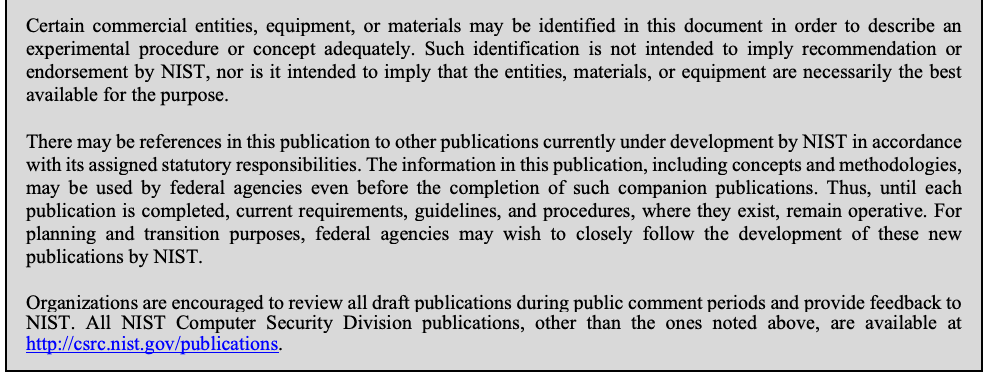
実験手順または概念を適切に説明するために、本ドキュメントにおいて特定の営利企業、機器、または資材が特定される場合がある。そのような特定は、NISTによる推奨または是認を意味することを意図したものではなく、また、それらの企業、資材、または機器が必ずしもその目的に利用可能な最善のものであることを意味する意図もない。
There may be references in this publication to other publications currently under development by NIST in accordance with its assigned statutory responsibilities. The information in this publication, including concepts and methodologies, may be used by federal agencies even before the completion of such companion publications. Thus, until each publication is completed, current requirements, guidelines, and procedures, where they exist, remain operative. For planning and transition purposes, federal agencies may wish to closely follow the development of these new publications by NIST.
本出版物には、割り当てられた法定責任に従って現在NISTが作成中の他の出版物への言及が含まれる場合がある。本出版物に含まれる情報（概念および方法論を含む）は、そうした関連出版物の完成前であっても連邦機関によって使用される場合がある。したがって、各出版物が完成するまでは、現行の要件、ガイドライン、および手順が存在する場合、それらは引き続き有効である。計画および移行の目的のために、連邦機関はNISTによるこれら新規出版物の作成状況を注視することを希望する場合がある。
Organizations are encouraged to review all draft publications during public comment periods and provide feedback to NIST. All NIST Computer Security Division publications, other than the ones noted above, are available at http://csrc.nist.gov/publications.
各組織は、パブリックコメント期間中にすべてのドラフト出版物をレビューし、NISTにフィードバックを提供することが推奨される。上記以外のすべてのNISTコンピュータセキュリティ部門の出版物は、http://csrc.nist.gov/publications で入手可能である。
Submit comments on this publication to: sp800-204c-comments@nist.gov
本刊行物に対するコメントの提出先: sp800-204c-comments@nist.gov
National Institute of Standards and Technology Attn: Computer Security Division, Information Technology Laboratory 100 Bureau Drive (Mail Stop 8930) Gaithersburg, MD 20899-8930
National Institute of Standards and Technology Attn: Computer Security Division, Information Technology Laboratory 100 Bureau Drive (Mail Stop 8930) Gaithersburg, MD 20899-8930
All comments are subject to release under the Freedom of Information Act (FOIA).
すべてのコメントは情報自由法（FOIA）に基づき公開の対象となる。
Reports on Computer Systems Technology
コンピュータシステム技術に関する報告書
The Information Technology Laboratory (ITL) at the National Institute of Standards and Technology (NIST) promotes the U.S. economy and public welfare by providing technical leadership for the Nation’s measurement and standards infrastructure. ITL develops tests, test methods, reference data, proof of concept implementations, and technical analyses to advance the development and productive use of information technology. ITL’s responsibilities include the development of management, administrative, technical, and physical standards and guidelines for the cost-effective security and privacy of other than national security-related information in federal information systems.
米国国立標準技術研究所（NIST）の情報技術研究所（ITL）は、米国の測定および標準インフラストラクチャに対する技術的リーダーシップを提供することにより、米国経済と公共の福祉を推進している。ITLは、情報技術の開発と生産的な利用を促進するために、テスト、テスト手法、参照データ、概念実証実装、および技術分析を開発している。ITLの責任には、連邦情報システムにおける国家安全保障関連以外の情報の費用対効果の高いセキュリティおよびプライバシーのための、管理面、事務面、技術面、物理面の基準およびガイドラインの開発が含まれる。
Abstract
概要
Cloud-native applications have evolved into a standardized architecture consisting of multiple loosely coupled components called microservices (often typically implemented as containers) that are supported by an infrastructure for providing application services, such as service mesh. Both of these components are usually hosted on a container orchestration and resource management platform. In this architecture, the entire set of source code involved in the application environment can be divided into five code types: 1) application code (which embodies the application logic), 2) application services code (for services such as session establishment, network connection, etc.), 3) infrastructure as code (for provisioning and configuring computing, networking, and storage resources), 4) policy as code (for defining runtime policies such as zero trust expressed as a declarative code), 5) and observability as code (for the continuous monitoring of an application runtime state). Due to security, business competitiveness, and the inherent structure of loosely coupled application components, this class of applications needs a different development, deployment, and runtime paradigm. DevSecOps (consisting of acronyms for Development, Security, and Operations, respectively) has been found to be a facilitating paradigm for these applications with primitives such as continuous integration, continuous delivery, and continuous deployment (CI/CD) pipelines. These pipelines are workflows for taking the developer’s source code through various stages, such as building, testing, packaging, deployment, and operations supported by automated tools with feedback mechanisms. The objective of this document is to provide guidance for the implementation of DevSecOps primitives for cloud-native applications with the architecture and code types described above. The benefits of this approach for high security assurance and for enabling continuous authority to operate (C-ATO) are also discussed.
原本PDFの抜粋画像
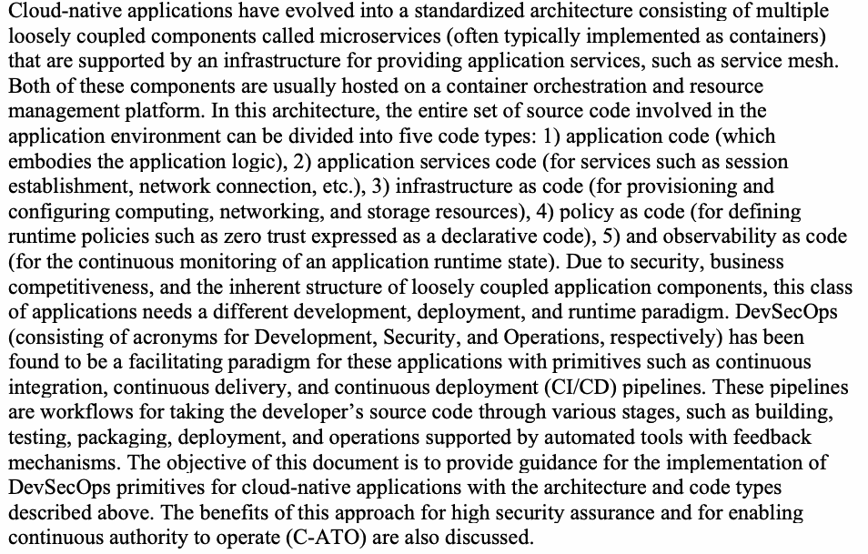
クラウドネイティブアプリケーションは、サービスメッシュなどのアプリケーションサービスを提供するインフラストラクチャに支えられた、マイクロサービス（多くの場合、コンテナとして実装される）と呼ばれる複数の疎結合コンポーネントから成る標準化されたアーキテクチャへと進化してきた。これら両方のコンポーネントは、通常、コンテナオーケストレーションおよびリソース管理プラットフォーム上でホストされる。このアーキテクチャでは、アプリケーション環境に関わるソースコード全体を、次の5つのコードタイプに分類できる。1）アプリケーションコード（アプリケーションロジックを具現化するもの）、2）アプリケーションサービスコード（セッション確立、ネットワーク接続などのサービス用）、3）Infrastructure as Code（コンピューティング、ネットワーク、およびストレージリソースのプロビジョニングと構成用）、4）Policy as Code（宣言型コードとして表現されるゼロトラストなどのランタイムポリシーを定義するもの）、5）Observability as Code（アプリケーションのランタイム状態を継続的に監視するもの）。セキュリティ、ビジネス上の競争力、および疎結合なアプリケーションコンポーネントに固有の構造のため、この種のアプリケーションには、異なる開発、展開、およびランタイムのパラダイムが必要である。DevSecOps（それぞれDevelopment、Security、Operationsの頭字語で構成される）は、継続的インテグレーション、継続的デリバリー、および継続的デプロイメント（CI/CD）パイプラインなどのプリミティブを備え、これらのアプリケーションを促進するパラダイムであることが分かっている。これらのパイプラインは、フィードバック機構を備えた自動化ツールに支えられ、開発者のソースコードをビルド、テスト、パッケージング、デプロイ、運用などのさまざまな段階に通すワークフローである。本書の目的は、上述のアーキテクチャとコードタイプを備えたクラウドネイティブアプリケーションに対するDevSecOpsプリミティブの実装について指針を示すことである。高いセキュリティ保証を実現し、継続的な運用許可（C-ATO）を可能にするこのアプローチの利点についても論じる。
Keywords
キーワード
container orchestration and resource management platform; DevSecOps; CI/CD pipelines; infrastructure as code; policy as code; observability as code; GitOps; workflow models; static AST; dynamic AST; interactive AST; SCA.
コンテナオーケストレーション・リソース管理プラットフォーム、DevSecOps、CI/CDパイプライン、Infrastructure as Code、Policy as Code、Observability as Code、GitOps、ワークフローモデル、静的AST、動的AST、インタラクティブAST、SCA。
Acknowledgments
謝辞
The author would like to express his first thanks to David Ferraiolo of NIST for initiating this effort to provide targeted guidance for the implementation of DevSecOps primitives for the development, deployment, and monitoring of services in microservices-based applications with service mesh. Sincere thanks to Mr. Nicolas Chaillan, CSO US Air Force, for his detailed and insightful review and feedback. Thanks are also due to Zack Butcher of Tetrate, Inc. for suggesting the title for this document. The author also expresses thanks to Isabel Van Wyk of NIST for her detailed editorial review.
著者はまず、サービスメッシュを備えたマイクロサービスベースのアプリケーションにおけるサービスの開発、展開、監視のためのDevSecOpsプリミティブの実装について、対象を絞ったガイダンスを提供する本取り組みを発案してくれたNISTのDavid Ferraiolo氏に感謝する。詳細で洞察に富んだレビューとフィードバックを寄せてくれた米空軍CSOのNicolas Chaillan氏にも、心から感謝する。本書のタイトルを提案してくれたTetrate, Inc.のZack Butcher氏にも謝意を表する。また、詳細な編集上のレビューを行ってくれたNISTのIsabel Van Wyk氏にも感謝する。
Patent Disclosure Notice
特許開示に関する通知
NOTICE: The Information Technology Laboratory (ITL) has requested that holders of patent claims whose use may be required for compliance with the guidance or requirements of this publication disclose such patent claims to ITL. However, holders of patents are not obligated to respond to ITL calls for patents and ITL has not undertaken a patent search in order to identify which, if any, patents may apply to this publication.
注記：情報技術研究所（ITL）は、本出版物のガイダンスまたは要件への準拠に使用が必要となる可能性がある特許クレームの保有者に対し、当該特許クレームをITLに開示するよう要請している。ただし、特許保有者には特許に関するITLの要請に応じる義務はなく、ITLは本出版物に適用される可能性のある特許（存在する場合）を特定するための特許調査を実施していない。
As of the date of publication and following call(s) for the identification of patent claims whose use may be required for compliance with the guidance or requirements of this publication, no such patent claims have been identified to ITL.
発行日時点において、本出版物のガイダンスまたは要件への準拠に使用が必要となる可能性がある特許クレームの特定要請を行った結果、ITLに対してそのような特許クレームは特定されていない。
No representation is made or implied by ITL that licenses are not required to avoid patent infringement in the use of this publication.
本刊行物の使用にあたり、特許侵害を避けるためにライセンスが不要であることについて、ITLは一切の表明を行わず、また示唆もしない。
Executive Summary
エグゼクティブサマリー
Cloud-native applications have evolved into a standardized architecture consisting of the following components:
クラウドネイティブアプリケーションは、以下のコンポーネントから構成される標準化されたアーキテクチャへと進化した：
•Multiple loosely coupled components called microservices (often or typically implemented as containers)
•マイクロサービスと呼ばれる、疎結合の複数のコンポーネント（多くの場合、またはふつうはコンテナとして実装される）
•An application services infrastructure that provides services such as secure communication, authentication, and authorization for users, services, and devices (e.g., service mesh)
•ユーザー、サービス、デバイスに対して、セキュアな通信、認証、認可などのサービスを提供するアプリケーションサービスインフラストラクチャ（例：サービスメッシュ）
Due to security, business competitiveness, and its inherent structure (loosely coupled application components), this class of applications needs a different application, deployment, and runtime monitoring paradigm – collectively called the software life cycle paradigm. DevSecOps (consisting of acronyms for Development, Security, and Operations, respectively) is one of the facilitating paradigms for the development, deployment, and operation of these applications with primitives such as continuous integration, continuous delivery, and continuous deployment (CI/CD) pipelines.
原本PDFの抜粋画像
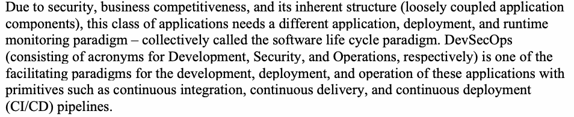
セキュリティ、ビジネス上の競争力、および本質的な構造（疎結合のアプリケーションコンポーネント）により、この種のアプリケーションには、総称してソフトウェアライフサイクルパラダイムと呼ばれる、アプリケーション、デプロイ、およびランタイム監視に関する異なるパラダイムが必要である。DevSecOps（Development、Security、および Operations のそれぞれの頭字語から成る）は、継続的インテグレーション、継続的デリバリー、および継続的デプロイ（CI/CD）パイプラインなどのプリミティブを用いて、これらのアプリケーションの開発、デプロイ、および運用を支援するパラダイムの1つである。
CI/CD pipelines are workflows for taking the developer’s source code through various stages, such as building, functional testing, security scanning for vulnerabilities, packaging, and deployment supported by automated tools with feedback mechanisms. For the purpose of this document, the entire set of source code involved in the application environment is classified into five code types:
CI/CDパイプラインは、フィードバックメカニズムを備えた自動化ツールによってサポートされ、ビルド、機能テスト、脆弱性のセキュリティスキャン、パッケージング、デプロイなどのさまざまなステージを通じて開発者のソースコードを導くためのワークフローである。本文書の目的において、アプリケーション環境に関わるソースコードの全体セットは、以下の5つのコードタイプに分類される。
1.Application code, which embodies the application logic for carrying out one or more business functions.
1.1つ以上のビジネス機能を実行するためのアプリケーションロジックを具現化するアプリケーションコード。
2.Application services code for services such as session establishment, network connection etc.
2.セッション確立、ネットワーク接続などのサービスのためのアプリケーションサービスコード。
3.Infrastructure as code, which are computing, networking, and storage resources in the form of a declarative code.
3.宣言型コードの形式をとるコンピューティング、ネットワーキング、およびストレージリソースである、Infrastructure as Code。
4.Policy as code, which are runtime policies (e.g., zero trust) expressed as a declarative code .
4.宣言型コードとして表現されたランタイムポリシー（例：ゼロトラスト）である、Policy as Code。
5.Observability as code for the continuous monitoring of the health of the application where monitoring functions are expressed as a declarative code.
5.監視機能が宣言型コードとして表現される、アプリケーションの健全性を継続的に監視するための Observability as Code。
Thus, separate CI/CD pipelines can be created for all five code types. The functions performed by each of these code types is also described to highlight the roles that they play in the overall execution of the application.
したがって、5種類すべてのコードタイプに対して個別のCI/CDパイプラインを作成できる。また、これら各コードタイプによって実行される機能についても、アプリケーション全体の実行において果たす役割を明確にするために説明されている。
Though cloud-native applications have a common architectural stack, the platform on which the components of the stack run may vary. The platform is an abstraction layer over a physical (bare metal) or virtualized (e.g., virtual machines, containers) infrastructure. In this document, the chosen platform is a container orchestration and resource management platform (e.g., Kubernetes). To unambiguously refer to this platform or application environment throughout this document, it is called the Reference Platform for DevSecOps Primitives, or simply the reference platform.
クラウドネイティブアプリケーションは共通のアーキテクチャスタックを持つが、そのスタックのコンポーネントが動作するプラットフォームは異なりうる。プラットフォームは、物理（ベアメタル）または仮想化された（例：仮想マシン、コンテナ）インフラストラクチャの上の抽象化レイヤーである。本書では、選択されたプラットフォームは、コンテナオーケストレーション・リソース管理プラットフォーム（例：Kubernetes）である。このプラットフォームまたはアプリケーション環境を本書全体で曖昧さなく指すため、これを「DevSecOps プリミティブのリファレンスプラットフォーム」、または単に「リファレンスプラットフォーム」と呼ぶ。
The objective of this document is to provide guidance for the implementation of DevSecOps primitives for the reference platform. The benefits of this implementation for high security assurance and the use of the artifacts within the pipelines for providing continuous authority to operate (C-ATO) using risk management tools and dashboard metrics are also described.
原本PDFの抜粋画像
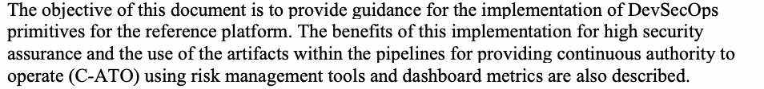
本書の目的は、リファレンスプラットフォーム向けのDevSecOpsプリミティブの実装に関するガイダンスを提供することである。高度なセキュリティ保証に向けたこの実装の利点や、リスク管理ツールおよびダッシュボードメトリクスを用いて継続的な運用権限（C-ATO）を提供するためのパイプライン内の成果物の使用についても説明されている。
Table of Contents
目次
Executive Summary — v
エグゼクティブサマリー — v
1 Introduction — 1
1 はじめに — 1
1.1 Scope — 1
1.1 範囲 — 1
1.2 Related DevSecOps Initiatives — 3
1.2 関連するDevSecOpsイニシアチブ — 3
1.3 Target Audience — 4
1.3 想定読者 — 4
1.4 Relationship to Other NIST Guidance Documents — 4
1.4 他のNISTガイダンス文書との関係 — 4
1.5 Organization of This Document — 5
1.5 本文書の構成 — 5
2 Reference Platform for the Implementation of DevSecOps Primitives — 6
2 DevSecOpsプリミティブ実装のためのリファレンスプラットフォーム — 6
2.1 Container Orchestration and Resource Management Platform — 6
2.1 コンテナオーケストレーションおよびリソース管理プラットフォーム — 6
2.1.1 Security Limitations of Orchestration Platform — 6
2.1.1 オーケストレーションプラットフォームのセキュリティ上の制約 — 6
2.2 Service Mesh Software Architecture — 7
2.2 サービスメッシュのソフトウェアアーキテクチャ — 7
2.2.1 Control Plane — 7
2.2.1 コントロールプレーン — 7
2.2.2 Data Plane — 8
2.2.2 データプレーン — 8
3 DevSecOps – Organizational Preparedness, Key Primitives, and Implementation — 10
3 DevSecOps – 組織の準備態勢、主要なプリミティブ、および実装 — 10
3.1 Organizational Preparedness for DevSecOps — 10
3.1 DevSecOpsに向けた組織の準備態勢 — 10
3.2 DevSecOps Platform — 10
3.2 DevSecOpsプラットフォーム — 10
3.2.1 Deliverables for DevSecOps Platform — 11
3.2.1 DevSecOpsプラットフォームの成果物 — 11
3.3 DevSecOps – Key Primitives and Implementation Tasks — 12
3.3 DevSecOps – 主要なプリミティブと実装タスク — 12
3.3.1 Concept of Pipelines and the CI/CD Pipeline — 12
3.3.1 パイプラインの概念とCI/CDパイプライン — 12
3.3.2 Building Blocks for CI/CD Pipelines — 14
3.3.2 CI/CDパイプラインのビルディングブロック — 14
3.3.3 Preparing and Executing the CI/CD pipeline — 15
3.3.3 CI/CDパイプラインの準備と実行 — 15
3.3.4 Strategies for Automation — 17
3.3.4 自動化の戦略 — 17
3.3.5 Requirements for Security Automation Tools in CI/CD Pipelines — 18
3.3.5 CI/CDパイプラインにおけるセキュリティ自動化ツールの要件 — 18
4 Implementing DevSecOps Primitives for the Reference Platform — 19
4 リファレンスプラットフォーム向けDevSecOpsプリミティブの実装 — 19
4.1 Description of Code Types and Reference Platform Components — 19
4.1 コードタイプおよびリファレンスプラットフォームコンポーネントの説明 — 19
4.2 CI/CD Pipeline for Application Code and Application Services Code — 21
4.2 アプリケーションコードおよびアプリケーションサービスコードのCI/CDパイプライン — 21
4.3. CI/CD Pipeline for Infrastructure as Code — 21
4.3. Infrastructure as Code向けのCI/CDパイプライン — 21
4.3.1 Protection for IaC — 22
4.3.1 IaCの保護 — 22
4.3.2 Distinction Between Configuration and Infrastructure — 23
4.3.2 構成とインフラストラクチャの区別 — 23
4.4 CI/CD Pipeline for Policy as Code — 23
4.4 Policy as Code向けのCI/CDパイプライン — 23
4.5 CI/CD Pipeline for Observability as Code — 24
4.5 Observability as Code のためのCI/CDパイプライン — 24
4.6 Securing the CI/CD Pipeline — 24
4.6 CI/CDパイプラインの保護 — 24
4.7 Workflow Models in CI/CD Pipelines — 25
4.7 CI/CDパイプラインにおけるワークフローモデル — 25
4.7.1 GitsOps Workflow Model for CI/CD – A Pull-based Model — 25
4.7.1 CI/CDのためのGitsOpsワークフローモデル – プル型モデル — 25
4.8 Security Testing – Common Requirement for CI/CD Pipelines for All Code Types — 26
4.8 セキュリティテスト – すべてのコード種別におけるCI/CDパイプライン共通の要件 — 26
4.8.1 Functional and Coverage Requirements for AST tools — 27
4.8.1 ASTツールの機能要件およびカバレッジ要件 — 27
4.9 Benefits of DevSecOps Primitives to Application Security in the Service Mesh — 28
4.9 サービスメッシュにおけるアプリケーションセキュリティに対するDevSecOpsプリミティブの利点 — 28
4.10 Leveraging DevSecOps for Continuous Authorization to Operate (C-ATO).. 30
4.10 継続的な運用許可（C-ATO）に向けたDevSecOpsの活用.. 30
5 Summary and Conclusion — 31
5 要約と結論 — 31
References — 32
参考文献 — 32
1 Introduction
1 はじめに
Cloud-native applications are made up of multiple loosely coupled components (called microservices typically implemented as containers), operate in perimeter-less network environments requiring zero trust concepts (on-premises or cloud), and are accessed by users from a diverse set of locations (e.g., campus, home office, etc.). Cloud-native applications do not just refer to applications that run in the cloud. They also refer to the class of applications with design and runtime architectures, such as microservices, and a dedicated infrastructure for providing all application services, including security. The incorporation of zero trust principles [1] into this class of application provides techniques wherein access to all protected resources is enforced through identity-based protection and network-based protections (e.g., micro-segmentation), where applicable.
クラウドネイティブアプリケーションは、疎結合された複数のコンポーネント（通常コンテナとして実装されるマイクロサービスと呼ばれる）で構成され、ゼロトラストの概念を必要とする境界のないネットワーク環境（オンプレミスまたはクラウド）で動作し、多様な場所（例：キャンパス、ホームオフィスなど）からユーザーによってアクセスされる。クラウドネイティブアプリケーションは、単にクラウド上で動作するアプリケーションを指すだけではない。これらは、マイクロサービスなどの設計・ランタイムアーキテクチャと、セキュリティを含むすべてのアプリケーションサービスを提供する専用インフラストラクチャを備えたアプリケーションのクラスも指す。このクラスのアプリケーションにゼロトラスト原則 [1] を組み込むことで、該当する場合に、アイデンティティベースの保護およびネットワークベースの保護（例：マイクロセグメンテーション）を通じて、すべての保護対象リソースへのアクセスを制御する技術が提供される。
Cloud-native applications require agile and secure updates and deployment techniques for business reasons as well as the necessary resilience to respond to cybersecurity events. Hence, they call for a different application development, deployment, and runtime monitoring paradigm (collectively called the software life cycle paradigm) than the ones used for traditional monolithic or multi-tier applications. DevSecOps (Development, Security, and Operations) is a facilitating paradigm for this class of applications since it facilitates agile and secure development, delivery, deployment, and operations through (a) primitives, such as continuous integration, continuous delivery/continuous deployment (CI/CD) pipelines (explained in section 3); (b) security testing throughout the life cycle; and (c) continuous monitoring during runtime, all of which are supported by automation tools. In fact, the paradigm that meets the above objectives was originally given the term DevOps to indicate the fact that it seeks to remove the silos between development and operations groups and promotes (or drives) increased collaboration. The term DevSecOps was later coined by a portion of the community to emphasize the role of the security team in the whole process. Thus, DevSecOps is the term that denotes a culture and set of practices with automation tools to drive increased collaboration, trust, shared responsibility, transparency, autonomy, agility, and automation across the key stakeholders responsible for delivering software, including development, operations, and security organizations. DevSecOps has the necessary primitives and other building blocks to meet the design goals of cloud-native applications.
クラウドネイティブアプリケーションは、ビジネス上の理由からアジャイルで安全な更新およびデプロイ技術を必要とするとともに、サイバーセキュリティイベントに対応するために必要な耐障害性を必要とする。したがって、従来のモノリシックまたは多層構造（マルチティア）のアプリケーションに使用されていたものとは異なるアプリケーション開発、デプロイ、およびランタイム監視のパラダイム（総称してソフトウェアライフサイクルパラダイムと呼ばれる）が求められる。DevSecOps（開発、セキュリティ、運用）は、(a) 継続的インテグレーション、継続的デリバリー/継続的デプロイ（CI/CD）パイプラインなどのプリミティブ（セクション3で説明）、(b) ライフサイクル全体を通じたセキュリティテスト、および (c) ランタイム中の継続的な監視（これらはすべて自動化ツールによってサポートされる）を通じて、アジャイルで安全な開発、提供、デプロイ、および運用を促進するため、このクラスのアプリケーションにとって有用なパラダイムである。実際、上記の目的を満たすパラダイムには、開発グループと運用グループの間のサイロを解消し、コラボレーションの向上を促進（または推進）するという事実を示すために、当初はDevOpsという用語が与えられた。その後、プロセス全体におけるセキュリティチームの役割を強調するために、コミュニティの一部によってDevSecOpsという用語が作られた。したがって、DevSecOpsとは、開発、運用、セキュリティ組織を含むソフトウェアの提供を担当する主要なステークホルダー間で、コラボレーション、信頼、責任の共有、透明性、自律性、俊敏性、自動化の向上を推進するための文化および自動化ツールを伴う一連のプラクティスを示す用語である。DevSecOpsには、クラウドネイティブアプリケーションの設計目標を満たすために必要なプリミティブやその他の構成要素が備わっている。
It should be noted that there is no community-wide consensus on the term “DevSecOps.” As already stated, the term was primarily coined to emphasize the fact that security must be tested and incorporated in all stages of the software development life cycle (i.e., build, test, package, deploy, and operate). A portion of the community continues to use the term “DevOps” based on the argument that there is no need to define a new term since security must be an integral part of any software life cycle process.
「DevSecOps」という用語については、コミュニティ全体での合意が存在しないことに留意する必要がある。前述のとおり、この用語は主に、ソフトウェア開発ライフサイクルのすべての段階（すなわち、ビルド、テスト、パッケージ化、デプロイ、運用）でセキュリティをテストし組み込まなければならないという事実を強調するために作られた。コミュニティの一部は、セキュリティはあらゆるソフトウェアライフサイクルプロセスの不可欠な部分でなければならないため、新しい用語を定義する必要はないという主張に基づいて、引き続き「DevOps」という用語を使用している。
1.1 Scope
1.1 適用範囲
In theory, DevSecOps primitives can be applied to many application architectures but are best suited to microservices-based ones, which permit agile development paradigms due to the fact that the application is made up of relatively small, loosely coupled modules called microservices. Even within microservices-based architectures, the implementation of DevSecOps primitives can take on different forms, depending on the platform. In this document, the chosen platform is a container orchestration and resource management platform (e.g., Kubernetes). The platform is an abstraction layer over a physical (bare metal) or virtualized (e.g., virtual machines, containers) infrastructure. To unambiguously refer to this platform or application environment throughout this document, it is called the Reference Platform for DevSecOps Primitives, or simply the reference platform.
理論上、DevSecOpsプリミティブは多くのアプリケーションアーキテクチャに適用できるが、マイクロサービスベースのアーキテクチャに最も適している。マイクロサービスベースのアーキテクチャでは、アプリケーションがマイクロサービスと呼ばれる比較的小さく疎結合なモジュールで構成されているため、アジャイルな開発パラダイムが可能になる。マイクロサービスベースのアーキテクチャの中でも、DevSecOpsプリミティブの実装は、プラットフォームによって異なる形をとりうる。本書で選択するプラットフォームは、コンテナオーケストレーション・リソース管理プラットフォーム（例: Kubernetes）である。このプラットフォームは、物理的な（ベアメタル）インフラストラクチャまたは仮想化された（例: 仮想マシン、コンテナ）インフラストラクチャの上の抽象化レイヤーである。本書全体を通じてこのプラットフォームまたはアプリケーション環境を曖昧さなく指すために、これを「DevSecOpsプリミティブのためのリファレンスプラットフォーム」、または単に「リファレンスプラットフォーム」と呼ぶ。
Before describing the implementation of DevSecOps primitives for the reference platform, it is assumed that the following due diligence is applied with respect to deployment of the service mesh component [2]:
参照プラットフォームに対するDevSecOpsプリミティブの実装について説明する前に、サービスメッシュコンポーネントのデプロイに関して、以下のデューデリジェンスが適用されていることを前提とする [2]：
•Secure design patterns for deploying and managing service mesh-based components for infrastructure (e.g., network routing), policy enforcement, and monitoring
•インフラストラクチャ（例：ネットワークルーティング）、ポリシー適用、およびモニタリングのためのサービスメッシュベースのコンポーネントをデプロイおよび管理するためのセキュアな設計パターン
•Tests to prove that these service mesh components work as intended in a variety of scenarios for all aspects of the application, such as ingress, egress, and inside services
原本PDFの抜粋画像
•• これらのサービスメッシュコンポーネントが、イングレス、エグレス、内部サービスなど、アプリケーションのあらゆる側面に対するさまざまなシナリオにおいて意図したとおりに機能することを証明するテスト
The guidance provided for implementation of DevSecOps primitives for the reference platform is agnostic to (a) the tools used in DevSecOps pipelines and (b) the service mesh software, which provides application services, though examples from service mesh offerings, such as Istio, are used to link them to real-world application artifacts (e.g., containers, policy enforcement modules, etc.).
原本PDFの抜粋画像
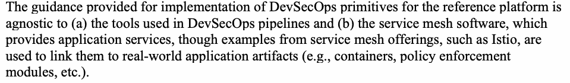
リファレンスプラットフォームに対するDevSecOpsプリミティブの実装に関して提供されるガイダンスは、(a) DevSecOpsパイプラインで使用されるツール、および (b) アプリケーションサービスを提供するサービスメッシュソフトウェアに依存しない（アグノスティックである）。ただし、それらを現実世界のアプリケーションアーティファクト（例：コンテナ、ポリシー適用モジュールなど）に関連付けるために、Istioなどのサービスメッシュ製品の例が使用される。
A slightly more detailed description of the code types (referred to in the executive summary) in the entire application environment presented by the reference platform is given below. Please note that these code types include those that support implementation of DevSecOps primitives.
リファレンスプラットフォームによって提示されるアプリケーション環境全体におけるコードタイプ（エグゼクティブサマリーで言及）のやや詳細な説明を以下に示す。これらのコードタイプには、DevSecOpsプリミティブの実装をサポートするものが含まれていることに注意すること。
1.Application code – embodies the application logic for carrying out one or more business functions) and is made up of code describing the business transactions and database access
1.アプリケーションコード – 1つ以上のビジネス機能を実行するためのアプリケーションロジックを具現化し、ビジネストランザクションおよびデータベースアクセスを記述するコードで構成される
2.Application services code (e.g., service mesh code) – provides various services for the application, such as service discovery, establishing network routes, network resiliency services (e.g., load balancing, retries), and security services (e.g., enforcing authentication, authorization etc. based on policies (item 4 below))
2.アプリケーションサービスコード（例：サービスメッシュコード） – サービスディスカバリ、ネットワークルートの確立、ネットワーク耐障害性サービス（例：負荷分散、リトライ）、およびセキュリティサービス（例：ポリシーに基づく認証・認可の適用など（下記項目4参照））といった、アプリケーション向けの各種サービスを提供する
3.Infrastructure as code – expresses the computing, networking, and storage resources needed to run the application in the form of a declarative code
3.Infrastructure as Code – アプリケーションの実行に必要なコンピューティング、ネットワーキング、およびストレージのリソースを宣言型コードの形式で表現する
4.Policy as code – contains declarative code for generating the rules and configuration parameters for realizing security objectives, such as zero trust through security controls (e.g., authentication, authorization) during runtime
4.Policy as Code – ランタイム時のセキュリティ制御（例：認証、認可）を通じてゼロトラストなどのセキュリティ目標を実現するための、ルールや構成パラメータを生成する宣言型コードを含む
5.Observability as code – triggers software related to logging (recording all transactions) and tracing (communication pathways involved in executing application requests) and monitors (keeping track of application states during runtime)
5.Observability as Code – ロギング（全トランザクションの記録）、トレーシング（アプリケーションリクエストの実行に関与する通信経路）、およびモニター（ランタイム時のアプリケーション状態の追跡）に関連するソフトウェアをトリガーする
Code types 3, 4, and 5 may have overlap with code type 2.
コードタイプ3、4、および5は、コードタイプ2と重複する場合がある。
This document covers the implementation of pipelines or workflows associated with all five code types listed above. Thus, the entire application environment (not just the application code) benefits from all of the best practices that exist for application code (e.g., agile iterative development, version control, governance, etc.). Infrastructure as code, policy as code, and observability as code belong to a special class called declarative code. When using ‘as code’ techniques, the code that is written (e.g., for provisioning a resource) is managed similar to application source code. This implies that it is versioned, documented, and has access controls defined similar to what is done for application source code repository. Often, domain-specific declarative languages are used: the requirements are declared, and an associated tool converts them into artifacts that make up a runtime instance. For example, in the case of infrastructure as code (IaC), the declarative language models the infrastructure as a series of resources. The associated configuration management tool pulls together these resources and generates what are known as manifests that define the final shape and state of the platform (runtime instance) associated with the defined resources. These manifests are stored in servers associated with a configuration management tool and are used by the tool to create compiled configuration instructions for the runtime instance on the designated platform. Manifests are generally encoded in platform-neutral representations (e.g., JSON) and fed to platform resource provisioning agents through REST APIs.
本書は、上に挙げた5種類すべてのコードに関連するパイプラインまたはワークフローの実装を扱う。これにより、アプリケーションコードだけでなくアプリケーション環境全体が、アプリケーションコードに存在するあらゆるベストプラクティス（例: アジャイルな反復開発、バージョン管理、ガバナンスなど）の恩恵を受ける。Infrastructure as Code、Policy as Code、Observability as Code は、宣言型コードと呼ばれる特別なクラスに属する。「as Code」の手法を用いる場合、記述したコード（例: リソースのプロビジョニング用）は、アプリケーションのソースコードと同様に管理される。つまり、バージョン管理され、文書化され、アプリケーションのソースコードリポジトリの場合と同様にアクセス制御が定義される。多くの場合、ドメイン固有の宣言型言語が用いられる。要件が宣言され、関連するツールがそれを、実行時インスタンスを構成するアーティファクトに変換する。たとえば、Infrastructure as Code（IaC）の場合、宣言型言語はインフラストラクチャを一連のリソースとしてモデル化する。関連する構成管理ツールがこれらのリソースをまとめ、定義されたリソースに関連するプラットフォーム（実行時インスタンス）の最終的な形態と状態を定義する、マニフェストと呼ばれるものを生成する。これらのマニフェストは、構成管理ツールに関連するサーバーに格納され、ツールが指定されたプラットフォーム上の実行時インスタンス向けのコンパイル済み構成命令を作成するために使用される。マニフェストは一般に、プラットフォーム中立の表現（例: JSON）でエンコードされ、REST APIを通じてプラットフォームのリソースプロビジョニングエージェントに渡される。
1.2 Related DevSecOps Initiatives
1.2 関連するDevSecOpsの取り組み
There are several DevSecOps initiatives in various agencies of the Federal Government with varying emphasis and focus, depending on the processes enabled by software and mission needs. Though not exhaustive, here is a brief overview of those initiatives [3].
原本PDFの抜粋画像
連邦政府のさまざまな機関において、ソフトウェアによって実現されるプロセスやミッションのニーズに応じて、重点や焦点の異なるいくつかのDevSecOpsイニシアチブが存在する。網羅的ではないが、それらのイニシアチブの概要を以下に簡単に示す [3]。
•DevSecOps pipelines are involved in building, checking in, and checking out from a container registry called Iron Bank, a repository of DOD-vetted hardened container images.
原本PDFの抜粋画像
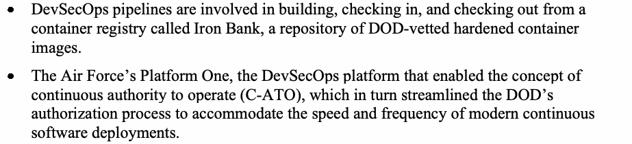
•DevSecOpsパイプラインは、DODが審査した堅牢化済みコンテナイメージのリポジトリであるIron Bankと呼ばれるコンテナレジストリを対象に、コンテナのビルド、チェックイン、およびチェックアウトに関与している。
•The Air Force’s Platform One, the DevSecOps platform that enabled the concept of continuous authority to operate (C-ATO), which in turn streamlined the DOD’s authorization process to accommodate the speed and frequency of modern continuous software deployments.
•空軍のPlatform Oneは、継続的運用権限（C-ATO）の概念を実現したDevSecOpsプラットフォームであり、これによりDODの承認プロセスが合理化され、現代の継続的なソフトウェアデプロイメントのスピードと頻度に対応できるようになった。
•The National Geospatial-Intelligence Agency (NGA) outlined its DevSecOps strategy in “The NGA Software Way,” where three key metrics – availability, lead time, and deployment frequency – are laid out for each of its software products, along with specification of seven distinct product lines for enabling DevSecOps pipelines, including messaging and workflow tools.
•国家地理空間情報局（NGA）は「The NGA Software Way」においてDevSecOps戦略を概説しており、そこでは各ソフトウェア製品に対して可用性、リードタイム、デプロイ頻度という3つの主要な指標が提示されているとともに、メッセージングおよびワークフローツールを含むDevSecOpsパイプラインを実現するための7つの明確な製品ラインが規定されている。
•The Centers for Medicare and Medicaid Services (CMS) is adopting a DevSecOps approach where one emphasis is on laying the groundwork for the software bill of materials (SBOM) – a formal record that contains the details and supply chain relationships of various components used in building software. The purpose of producing SBOMs is to meet the goals established under the Continuous Diagnostics and Mitigation (CDM) program.
•メディケア・メディケイド・サービスセンター（CMS）は、ソフトウェア構築に使用される各種コンポーネントの詳細およびサプライチェーンの関係性を含む公式記録であるソフトウェア部品表（SBOM）の基礎作りに重点を置いたDevSecOpsアプローチを採用している。SBOMを作成する目的は、継続的診断および緩和（CDM）プログラムの下で確立された目標を達成することである。
•At the Naval Surface Warfare Center (NSWC), the implementation methodology of DevSecOps primitives is used to teach and train the software workforce on various software metrics and the role of automation as enablers for achieving those metrics.
•Naval Surface Warfare Center（NSWC）では、DevSecOpsプリミティブの実装方法論を用いて、ソフトウェア要員に対し、さまざまなソフトウェアメトリクスと、それらのメトリクスを達成するための推進要因としての自動化の役割を教育・訓練している。
•The Army’s DevSecOps initiative is called the Army Software Factory and is focused on building skillsets rather than building software. It utilizes DevSecOps capabilities (pipelines and platform-as-a-service features) as a technology accelerator to gain efficiency and proficiency in product management, user experience, user interface (UI/UX) design, platform, and software engineering.
•陸軍のDevSecOpsイニシアチブは陸軍ソフトウェアファクトリー（Army Software Factory）と呼ばれ、ソフトウェアを構築することよりもスキルセットの構築に焦点を当てている。これは、プロダクト管理、ユーザーエクスペリエンス／ユーザーインターフェース（UI/UX）設計、プラットフォーム、およびソフトウェアエンジニアリングにおける効率性と習熟度を高めるための技術アクセラレーターとして、DevSecOps機能（パイプラインおよびPlatform as a Service機能）を活用している。
1.3 Target Audience
1.3 想定読者
Since DevSecOps primitives span development (build and test for security, package), delivery/ deployment and continuous monitoring (to ensure secure states during runtime), the target audience for the recommendations in this document includes software development, operations, and security teams.
DevSecOpsのプリミティブは開発（セキュリティのためのビルドおよびテスト、パッケージ化）、デリバリー／デプロイメント、そして継続的モニタリング（ランタイム中の安全な状態を確保するため）に及ぶため、本文書における推奨事項の対象読者には、ソフトウェア開発チーム、運用チーム、およびセキュリティチームが含まれる。
1.4 Relationship to Other NIST Guidance Documents
1.4 他のNISTガイダンス文書との関係
Since the reference platform is made up of container orchestration and resource management platform and service mesh software, the following publications offer guidance for securing this platform as well as provide background information for the contents of this document:
参照プラットフォームはコンテナオーケストレーションおよびリソース管理プラットフォームとサービスメッシュソフトウェアで構成されているため、以下の刊行物は、このプラットフォームを保護するためのガイダンスを提供するとともに、本文書の内容に関する背景情報を提供する。
•Special Publication (SP) 800-204, Security Strategies for Microservices-based Application Systems [4], discusses the characteristics and security requirements of microservices-based applications and the overall strategies for addressing those requirements.
•Special Publication（SP）800-204『Security Strategies for Microservices-based Application Systems』[4] では、マイクロサービスベースのアプリケーションの特性とセキュリティ要件、およびそれらの要件に対処するための全体的な戦略について論じている。
•SP 800-204A, Building Secure Microservices-based Applications Using Service-Mesh Architecture [5], provides deployment guidance for various security services (e.g., establishment of secure sessions, security monitoring, etc.) for a microservices-based application using a dedicated infrastructure (i.e., a service mesh) based on service proxies that operate independent of the application code.
•SP 800-204A『Building Secure Microservices-based Applications Using Service-Mesh Architecture』[5] では、アプリケーションコードから独立して動作するサービスプロキシに基づいた専用のインフラストラクチャ（すなわちサービスメッシュ）を使用して、マイクロサービスベースのアプリケーション向けの各種セキュリティサービス（例：セキュアセッションの確立、セキュリティモニタリングなど）を展開するためのガイダンスを提供している。
•SP 800-204B [6], Attribute-based Access Control for Microservices-based Applications Using a Service Mesh, provides deployment guidance for building an authentication and authorization framework within the service mesh that meets the security requirements, such as (1) zero trust by enabling mutual authentication in communication between any pair of services and (2) a robust access control mechanism based on an access control model, such as attribute-based access control (ABAC) model, that can be used to express a wide set of policies and is scalable in terms of user base, objects (resources), and deployment environment.
•SP 800-204B [6]『Attribute-based Access Control for Microservices-based Applications Using a Service Mesh』では、次のようなセキュリティ要件を満たす認証・認可フレームワークをサービスメッシュ内に構築するための導入ガイダンスを提供している。(1) 任意のサービスペア間の通信で相互認証を可能にすることによるゼロトラスト、および (2) 幅広いポリシーセットを表現するために使用でき、ユーザーベース、オブジェクト（リソース）、導入環境の観点でスケーラブルな、属性ベースアクセス制御（ABAC）モデルなどのアクセス制御モデルに基づく堅牢なアクセス制御メカニズム。
•SP 800-190 [7], Application Container Security Guide, explains the security concerns associated with container technologies and makes practical recommendations for addressing those concerns when planning for, implementing, and maintaining containers. The recommendations are provided for each tier within the container technology architecture.
•SP 800-190 [7]『Application Container Security Guide』では、コンテナ技術に関連するセキュリティ上の懸念事項を説明し、コンテナの計画、実装、保守を行う際にそれらの懸念事項に対処するための実践的な推奨事項を提示している。推奨事項は、コンテナ技術アーキテクチャ内の各階層に対して提供されている。
1.5 Organization of This Document
1.5 本文書の構成
This document is organized as follows:
本文書は以下のように構成されている:
•Chapter 2 gives a brief description of the reference platform for which guidance for implementation of DevSecOps primitives is provided.
•第2章では、DevSecOpsプリミティブの実装に関するガイダンスが提供される参照プラットフォームについて簡単に説明する。
•Chapter 3 introduces the DevSecOps primitives (i.e., pipelines), the methodology for designing and executing the pipelines, and the role that automation plays in the execution.
•第3章では、DevSecOpsプリミティブ（すなわちパイプライン）、パイプラインの設計および実行のための方法論、ならびに実行において自動化が果たす役割を紹介する。
•Chapter 4 covers all facets of pipelines, including (a) common issues to be addressed for all pipelines, (b) descriptions of the pipelines for the five code types in the reference platform that are listed in Section 1.1, and (c) the benefit of DevSecOps for security assurance for the entire application environment (the reference platform with five code types, thus carrying the DevSecOps implementation) during the entire life cycle, including the “Continuous Authority to Operate (C-ATO).”
•第4章では、(a) すべてのパイプラインで対処すべき共通の課題、(b) セクション1.1に記載されている参照プラットフォームにおける5つのコードタイプのパイプラインの説明、および (c)「継続的運用許可（Continuous Authority to Operate: C-ATO）」を含むライフサイクル全体を通じた、アプリケーション環境全体（5つのコードタイプを有し、DevSecOps実装を担う参照プラットフォーム）のセキュリティ保証に対するDevSecOpsの利点を含む、パイプラインのあらゆる側面を網羅する。
•Chapter 5 provides summary and conclusion.
•第5章では、要約と結論を提供する。
2 Reference Platform for the Implementation of DevSecOps Primitives
2 DevSecOpsプリミティブ実装のための参照プラットフォーム
As stated in Section 1.1, the reference platform is a container orchestration and management platform. In modern application environments, the platform is an abstraction layer over a physical (bare metal) or virtualized (e.g., virtual machines, containers) infrastructure. Before the implementation of DevSecOps primitives, the platform simply contains the application code, which contains the application logic and the service mesh code, which in turn provides application services. This section will consider the following:
セクション1.1に記載されているように、参照プラットフォームはコンテナオーケストレーションおよび管理プラットフォームである。現代のアプリケーション環境において、プラットフォームは物理（ベアメタル）または仮想化された（例：仮想マシン、コンテナ）インフラストラクチャ上の抽象化レイヤである。DevSecOpsプリミティブを実装する前は、プラットフォームは単純に、アプリケーションロジックを含むアプリケーションコードと、それ自体がアプリケーションサービスを提供するサービスメッシュコードを含んでいる。本セクションでは以下について検討する：
•A container orchestration and resource management platform that houses both the application code and most of the service mesh code
•アプリケーションコードとサービスメッシュコードの大部分の両方を収容するコンテナオーケストレーションおよびリソース管理プラットフォーム
•The service mesh software architecture
•サービスメッシュソフトウェアアーキテクチャ
2.1 Container Orchestration and Resource Management Platform
2.1 コンテナオーケストレーションおよびリソース管理プラットフォーム
Since microservices are typically implemented as containers, a container orchestration and resource management platform are used for deployment, operations, and maintenance of services.
原本PDFの抜粋画像
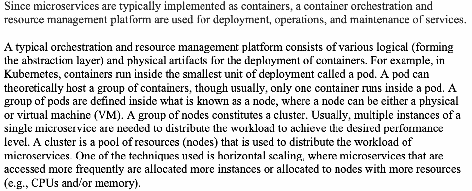
マイクロサービスは通常コンテナとして実装されるため、サービスの展開、運用、および保守にはコンテナオーケストレーションおよびリソース管理プラットフォームが使用される。
A typical orchestration and resource management platform consists of various logical (forming the abstraction layer) and physical artifacts for the deployment of containers. For example, in Kubernetes, containers run inside the smallest unit of deployment called a pod. A pod can theoretically host a group of containers, though usually, only one container runs inside a pod. A group of pods are defined inside what is known as a node, where a node can be either a physical or virtual machine (VM). A group of nodes constitutes a cluster. Usually, multiple instances of a single microservice are needed to distribute the workload to achieve the desired performance level. A cluster is a pool of resources (nodes) that is used to distribute the workload of microservices. One of the techniques used is horizontal scaling, where microservices that are accessed more frequently are allocated more instances or allocated to nodes with more resources (e.g., CPUs and/or memory).
典型的なオーケストレーションおよびリソース管理プラットフォームは、コンテナの展開のためのさまざまな論理的成果物（抽象化レイヤを形成）および物理的成果物で構成される。たとえば、Kubernetesでは、コンテナはポッド（pod）と呼ばれる展開の最小単位の内部で実行される。ポッドは理論的にはコンテナのグループをホストできるが、通常は1つのコンテナのみがポッド内で実行される。ポッドのグループはノードとして知られるものの内部で定義され、ノードは物理マシンまたは仮想マシン（VM）のいずれかになり得る。ノードのグループはクラスタを構成する。通常、望ましいパフォーマンスレベルを達成するためにワークロードを分散させる目的で、単一のマイクロサービスの複数のインスタンスが必要となる。クラスタは、マイクロサービスのワークロードを分散するために使用されるリソース（ノード）のプールである。使用される手法の1つは水平スケーリングであり、より頻繁にアクセスされるマイクロサービスにより多くのインスタンスが割り当てられるか、またはより多くのリソース（例：CPUおよび/またはメモリ）を持つノードに割り当てられる。
2.1.1 Security Limitations of Orchestration Platform
2.1.1 オーケストレーションプラットフォームのセキュリティ上の制限事項
Microservices-based applications require several application services, including security services such as authentication and authorization, as well as the generation of metrics for individual pods (monitoring), consolidated logging (to ascertain causes of failures of certain requests), tracing (sequence of service calls for an application request), traffic control, caching, secure ingress, service-to-service (east/west traffic), and egress communication.
原本PDFの抜粋画像
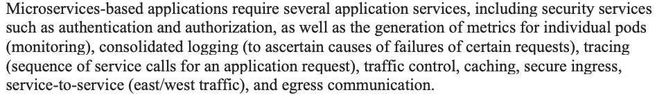
マイクロサービスベースのアプリケーションには、認証や認可などのセキュリティサービスをはじめ、個々のポッドに対するメトリクスの生成（監視）、統合ロギング（特定の要求の失敗原因の特定）、トレーシング（アプリケーション要求に対する一連のサービス呼び出し）、トラフィック制御、キャッシング、安全なイングレス、サービス間（イースト/ウェストトラフィック）、およびエグレス通信など、いくつかのアプリケーションサービスが必要である。
Taking the example of secure communications between containers, specific code needs to be added in order to secure the communications between pods in a platform such as Kubernetes (e.g., with mTLS). Pods that communicate do not apply identity and access management between themselves. Though there are tools that can be implemented to act as a firewall between pods, such as the Kubernetes Network Policy [8], this is a layer 3 solution rather than a layer 7 solution, which is what most modern firewalls are. This means that while one can know the source of traffic, one cannot peek into the data packets to understand what they contain. Further, it does not allow for making vital metadata-driven decisions, such as routing on a new version of a pod
コンテナ間のセキュアな通信の例を挙げると、Kubernetesのようなプラットフォームにおけるポッド間の通信を保護するためには（例：mTLSを使用）、特定のコードを追加する必要がある。通信を行うポッドは、それらの間でアイデンティティおよびアクセス管理を適用しない。Kubernetes Network Policy [8] のように、ポッド間のファイアウォールとして機能するように実装できるツールはあるものの、これは現代のファイアウォールの大部分がそうであるレイヤ7ソリューションではなく、レイヤ3ソリューションである。これは、トラフィックの発信元を知ることはできるものの、データパケットを覗き込んで何が含まれているかを理解することはできないことを意味する。さらに、ポッドの新しいバージョンへのルーティングなど、重要なメタデータ駆動型の決定を行うこともできない
6 based on an HTTP header. There are Kubernetes ingress objects that provide a reverse proxy based on layer 7, but they do not offer anything more than simple traffic routing. Kubernetes does offer different ways of deploying pods that some form of A/B testing or canary deployments, but they are done at the connection level and provide no fine-grained control or fast failback. For example, if a developer wants to deploy a new version of a microservice and pass 10 % of traffic through it, they will have to scale the containers to at least 10 – nine for the old version and one for the new version. Further, Kubernetes cannot split the traffic intelligently and instead balances loads between pods in a round-robin fashion. Every Kubernetes container within a pod has a separate log, and a custom solution over Kubernetes must be implemented to capture and consolidate them.
6 HTTPヘッダーに基づく。レイヤー7に基づくリバースプロキシを提供するKubernetes Ingressオブジェクトが存在するが、それらは単純なトラフィックルーティング以上のものは何も提供しない。Kubernetesは、ある種のA/Bテストやカナリアデプロイを可能にするポッドのさまざまなデプロイ方法を提供しているが、それらは接続レベルで行われ、きめ細かな制御や迅速なフェイルバックは提供しない。例えば、開発者がマイクロサービスの新しいバージョンをデプロイし、トラフィックの10 %をそれに通したい場合、コンテナを少なくとも10個（古いバージョン用に9個、新しいバージョン用に1個）にスケーリングしなければならない。さらに、Kubernetesはインテリジェントにトラフィックを分割することはできず、代わりにラウンドロビン方式でポッド間の負荷を分散する。ポッド内のすべてのKubernetesコンテナは個別のログを持っており、それらをキャプチャして統合するには、Kubernetes上にカスタムソリューションを実装しなければならない。
Although the Kubernetes dashboard offers monitoring features on individual pods and their states, it does not expose metrics that describe how application components interact with each other or how much traffic flows through each of the pods. Consolidated logging is required to determine error conditions that cause an application request or transaction to fail. Tracing is required to trace the sequence of containers that are invoked as part of any application request based on the application logic that underlies a transaction. Since traffic flow cannot be traced through Kubernetes pods out of the box, it is unclear where on the chain the failure for the request occurred.
原本PDFの抜粋画像
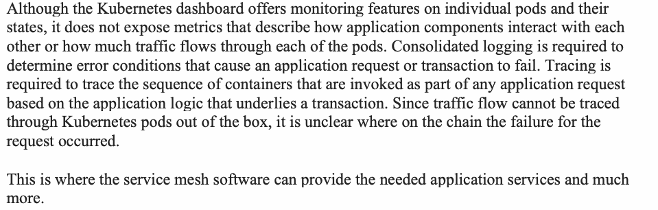
Kubernetesダッシュボードは個々のポッドとその状態に関する監視機能を提供するものの、アプリケーションコンポーネントが互いにどのようにやり取りしているか、あるいは各ポッドをどのくらいのトラフィックが流れているかを説明するメトリクスは公開しない。アプリケーションのリクエストまたはトランザクションを失敗させるエラー状態を特定するには、統合ログ記録が必要である。トランザクションの基盤となるアプリケーションロジックに基づいて、任意のアプリケーションリクエストの一部として呼び出されるコンテナのシーケンスを追跡するには、トレーシングが必要である。トラフィックフローは標準の機能ではKubernetesポッドを通じて追跡できないため、チェーン上のどこでリクエストの障害が発生したかが不明確になる。
This is where the service mesh software can provide the needed application services and much more.
ここで、サービスメッシュソフトウェアが必要とされるアプリケーションサービス、さらにはそれ以上の機能を提供できるのである。
2.2 Service Mesh Software Architecture
2.2 サービスメッシュソフトウェアアーキテクチャ
Having looked at the various application services required by microservices-based applications, consider the architecture of service mesh software that provides those services. The service mesh software consists of two main components: the control plane and the data plane.
原本PDFの抜粋画像
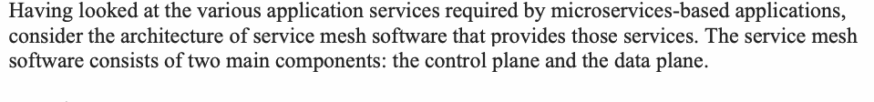
マイクロサービスベースのアプリケーションに必要なさまざまなアプリケーションサービスを見てきたところで、それらのサービスを提供するサービスメッシュソフトウェアのアーキテクチャを検討する。サービスメッシュソフトウェアは、主にコントロールプレーンとデータプレーンの2つのコンポーネントで構成される。
2.2.1 Control Plane
2.2.1 コントロールプレーン
The control plane has several components. While the data plane of the service mesh mainly consists of proxies running as containers within the same pod as application containers, the control plane components run in their own pods, nodes, and associated clusters. The following are the various functions of the control plane [9]:
原本PDFの抜粋画像
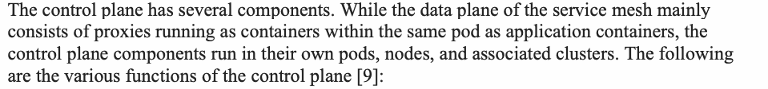
コントロールプレーンにはいくつかのコンポーネントがある。サービスメッシュのデータプレーンが主にアプリケーションコンテナと同じポッド内のコンテナとして実行されるプロキシで構成されるのに対し、コントロールプレーンのコンポーネントは独自のポッド、ノード、および関連するクラスタで実行される。コントロールプレーンのさまざまな機能は以下のとおりである [9]:
1.Service discovery and configuration of the Envoy sidecar proxies
原本PDFの抜粋画像
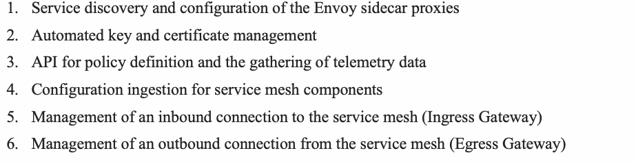
1.サービスディスカバリおよびEnvoyサイドカープロキシの設定
2.Automated key and certificate management
2.自動化された鍵および証明書の管理
3.API for policy definition and the gathering of telemetry data
3.ポリシー定義およびテレメトリデータ収集のためのAPI
4.Configuration ingestion for service mesh components
4.サービスメッシュコンポーネント用の設定取り込み（ingestion）
5.Management of an inbound connection to the service mesh (Ingress Gateway)
5.サービスメッシュへのインバウンド接続の管理（Ingress Gateway）
6.Management of an outbound connection from the service mesh (Egress Gateway)
6.サービスメッシュからのアウトバウンド接続の管理（Egress Gateway）
7.Inject sidecar proxies into those pods, nodes, or namespaces where application microservice containers are hosted
原本PDFの抜粋画像
7.アプリケーションマイクロサービスのコンテナがホストされているポッド、ノード、または名前空間にサイドカープロキシを注入（インジェクト）する
Overall, the control plane helps the administrator populate the data plane component with the configuration data that is generated from the policies resident in the control plane. The policies for function 3 above may include network routing policies, load balancing policies, policies for blue-green deployments, canary rollouts, timeout, retry, and circuit-breaking capabilities. These last three are collectively called by the special name of resiliency capabilities of the networking infrastructure services. Last but not the least are security-related policies (e.g., authentication and authorization policies, TLS establishment policies, etc.). These policy rules are parsed by a module that converts them into configuration parameters for use by executables in data plane proxies that enforce those policies.
原本PDFの抜粋画像
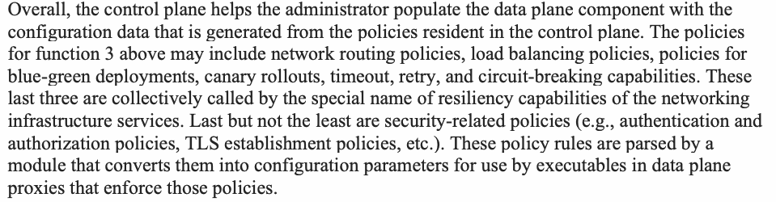
全体として、コントロールプレーンは管理者がデータプレーンコンポーネントに、コントロールプレーン内に存在するポリシーから生成された構成データを投入するのを支援する。上記の機能3向けのポリシーには、ネットワークルーティングポリシー、負荷分散ポリシー、ブルーグリーンデプロイメント、カナリアロールアウト、タイムアウト、再試行、およびサーキットブレーキング機能のためのポリシーなどが含まれる場合がある。これら最後の3つは、総称してネットワーキングインフラストラクチャサービスの回復性（レジリエンス）機能という特別な名称で呼ばれる。最後に、重要なものとしてセキュリティ関連ポリシー（例：認証および認可ポリシー、TLS確立ポリシーなど）が挙げられる。これらのポリシールールは、それらのポリシーを実施するデータプレーンプロキシ内の実行可能ファイルが使用するための構成パラメータへと変換するモジュールによって解析される。
2.2.2 Data Plane
2.2.2 データプレーン
The data plane component performs three different functions:
データプレーンコンポーネントは、3つの異なる機能を実行する：
1.Secure networking functions
1.セキュアネットワーキング機能
2.Policy enforcement functions
2.ポリシー適用機能
3.Observability functions
3.可観測性（オブザーバビリティ）機能
The primary component of the data plane that performs all three functions listed above is called the sidecar proxy. This L7 proxy runs in the same network namespace (which, in this platform, is the same pod) as the microservice for which it performs proxy functions. There is a proxy for every microservice to ensure that a request from a microservice does not bypass its associated proxy and that each proxy is run as a container in the same pod as the application microservice. Both containers have the same IP address and share the same IP Table rules. That makes the proxy take complete control over the pod and handle all traffic that passes through it [9,10].
原本PDFの抜粋画像
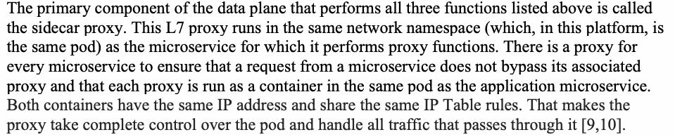
上記の3つの機能すべてを実行するデータプレーンの主要コンポーネントは、サイドカープロキシと呼ばれる。このL7プロキシは、プロキシ機能を実行する対象のマイクロサービスと同じネットワーク名前空間（このプラットフォームでは同じポッド）で実行される。マイクロサービスからのリクエストが関連するプロキシをバイパスしないようにし、各プロキシがアプリケーションマイクロサービスと同じポッド内のコンテナとして実行されるようにするために、すべてのマイクロサービスに対してプロキシが存在する。両方のコンテナは同じIPアドレスを持ち、同じIP Tableルールを共有する。これにより、プロキシはポッドを完全に制御し、そこを通過するすべてのトラフィックを処理するようになる [9,10]。
The first category of functions (secure networking) includes all functions related to the actual routing or communication of messages between microservices. The functions that come under this category are service discovery, establishing a secure (TLS) session, establishing network paths and routing rules for each microservice and its associated requests, authenticating each request (from a service or user), and authorizing the request.
機能の第1のカテゴリ（セキュアネットワーキング）には、マイクロサービス間のメッセージの実際のルーティングまたは通信に関連するすべての機能が含まれる。このカテゴリに該当する機能は、サービス検出、セキュアな（TLS）セッションの確立、各マイクロサービスおよびその関連リクエストに対するネットワークパスとルーティングルールの確立、（サービスまたはユーザーからの）各リクエストの認証、ならびにリクエストの認可である。
With the example of establishing a mutual TLS session, the proxy that initiates the communication session will interact with the module in the control plane of the service mesh to check whether it needs to encrypt traffic through the chain and establish mutual TLS with the backend or target pod. Enabling this functionality using mutual TLS requires every pod to have a certificate (i.e., a valid credential). Since a good-sized microservice application (consisting of many microservices) may require hundreds of pods (even without horizontal scaling of individual microservices through multiple instances), this may involve managing hundreds of short-lived certificates. This, in turn, requires each microservice to have a robust identity and the service mesh to have an access manager, a certificate store, and a certificate validation capability. In addition, mechanisms for identifying and authenticating the two communicating pods are required for supporting authentication policies.
相互TLSセッションを確立する例では、通信セッションを開始するプロキシは、サービスメッシュのコントロールプレーンのモジュールとやり取りして、チェーンを通じてトラフィックを暗号化し、バックエンドまたは宛先のポッドとの間で相互TLSを確立する必要があるかどうかを確認する。相互TLSを用いてこの機能を有効にするには、すべてのポッドが証明書（すなわち有効なクレデンシャル）を持つ必要がある。（多数のマイクロサービスで構成される）適度な規模のマイクロサービスアプリケーションでは、個々のマイクロサービスを複数のインスタンスで水平スケーリングしなくても数百のポッドが必要になる可能性があるため、数百の短寿命の証明書を管理することになりうる。そのためには、各マイクロサービスが堅牢なアイデンティティを持ち、サービスメッシュがアクセスマネージャー、証明書ストア、証明書検証の能力を備えている必要がある。さらに、認証ポリシーをサポートするには、通信する2つのポッドを識別し認証するメカニズムが必要である。
Other kinds of proxies include ingress proxies [11] that intercept the client calls into the first entry point of application (first microservice that is invoked) and egress proxies that handle a microservice’s request to application modules residing outside of the platform cluster.
他の種類のプロキシには、アプリケーションの最初のエントリポイント（呼び出される最初のマイクロサービス）へのクライアント呼び出しをインターセプトするイングレスプロキシ[11]や、プラットフォームクラスタの外部にあるアプリケーションモジュールに対するマイクロサービスのリクエストを処理するエグレスプロキシが含まれる。
The second category of functions that the data plane performs is enforcement of the policies defined in the control plane through configuration parameters in the proxies (policy enforcement service). An example is the use of the information in the JWT token that is part of a microservice request to authenticate the calling service. Another example is the enforcement of access control policies for each request using either the code residing in the proxy itself or by connecting to an external authorization service.
データプレーンが実行する機能の第2のカテゴリは、プロキシ内の設定パラメータを通じてコントロールプレーンで定義されたポリシーを適用することである（ポリシー適用サービス）。例としては、呼び出し側サービスを認証するために、マイクロサービスリクエストの一部であるJWTトークン内の情報を使用することが挙げられる。もう1つの例は、プロキシ自体に存在するコードを使用するか、外部の認可サービスに接続することによって、各リクエストに対するアクセス制御ポリシーを適用することである。
The third category of functions that service proxies perform almost always in collaboration with application service containers are to gather telemetry data, which helps to monitor the health and state of the services, transfer logs associated with a service to the log aggregation module in the control plane, and append necessary data to application request headers to facilitate the tracing of all requests associated with a given application transaction. The application response is conveyed by proxies back to its associated calling service in the form of return codes, a description of response, or the retrieved data.
サービスプロキシがほぼ常にアプリケーションサービスコンテナと連携して実行する機能の第3のカテゴリは、テレメトリデータを収集してサービスの健全性と状態の監視を支援すること、サービスに関連付けられたログをコントロールプレーン内のログ集約モジュールに転送すること、および所定のアプリケーショントランザクションに関連付けられたすべてのリクエストの追跡を容易にするために必要なデータをアプリケーションリクエストヘッダーに追加することである。アプリケーションの応答は、リターンコード、応答の説明、または取得されたデータの形式で、プロキシによって関連する呼び出し元サービスに返送される。
The service mesh is container orchestration platform-aware, interacts with the API server that provides a window into application services installed in various platform artifacts (e.g., pods, nodes, namespaces), monitors it for new microservices, and automatically injects sidecar containers into the pods containing these new microservices. Once the service mesh inserts the sidecar proxy containers, operations and security teams can enforce policies on the traffic and help secure and operate the application. These teams can also configure the monitoring of microservices applications without interfering with the functioning of the applications.
サービスメッシュはコンテナオーケストレーションプラットフォームを認識し、さまざまなプラットフォームアーティファクト（例：ポッド、ノード、名前空間）にインストールされたアプリケーションサービスへの窓口を提供するAPIサーバーとやり取りし、新しいマイクロサービスがないか監視して、これらの新しいマイクロサービスを含むポッドにサイドカーコンテナを自動的に挿入する。サービスメッシュがサイドカープロキシコンテナを挿入すると、運用チームおよびセキュリティチームはトラフィックにポリシーを適用し、アプリケーションの保護と運用を支援することができる。これらのチームは、アプリケーションの機能を妨げることなく、マイクロサービスアプリケーションの監視を設定することもできる。
The provisioning of infrastructure, policy enforcement, and observability services can be automated using declarative code that is part of DevSecOps pipelines. While the development team should be overall aware of the security and management details of deployment of their code, the automation of the above mentioned services provides more time to them to concentrate their efforts on efficient development paradigms, such as code modularity and structuring.
インフラストラクチャのプロビジョニング、ポリシー適用、および可観測性サービスは、DevSecOpsパイプラインの一部である宣言型コードを使用して自動化できる。開発チームは自身のコードのデプロイに関するセキュリティおよび管理の詳細を全体的に把握しておくべきであるが、上述のサービスの自動化により、コードのモジュール化や構造化など、効率的な開発パラダイムに注力するための時間をより多く確保できるようになる。
3 DevSecOps – 組織の準備態勢、主要なプリミティブ、および実装
DevSecOps incorporates security into the software engineering process early on. It integrates and automates security processes and tooling into all of the development workflow (or pipeline as later explained) in DevOps so that it is seamless and continuous. In other words, it can be looked upon as a combination of the three processes: Development + Security + Operations [12].
原本PDFの抜粋画像
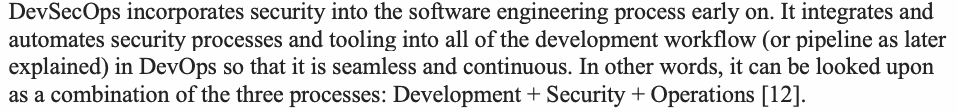
DevSecOpsは、ソフトウェアエンジニアリングプロセスの初期段階からセキュリティを組み込む。DevOpsにおける開発ワークフロー（または後述するパイプライン）全体にセキュリティプロセスとツールをシームレスかつ継続的になるよう統合および自動化する。言い換えれば、開発（Development）＋セキュリティ（Security）＋運用（Operations）という3つのプロセスの組み合わせとみなすことができる [12]。
This section discusses the following aspects of DevSecOps:
本節では、DevSecOpsの以下の側面について説明する。
•Organizational preparedness for DevSecOps
•DevSecOpsに向けた組織の準備態勢
•DevSecOps Platform
•DevSecOpsプラットフォーム
•Fundamental building blocks or key primitives for DevSecOps
•DevSecOpsの基本的な構成要素または主要なプリミティブ
3.1 Organizational Preparedness for DevSecOps
3.1 DevSecOpsに向けた組織の準備態勢
DevSecOps is a software development, deployment, and life cycle management methodology that involves a shift from one large release for an entire application or platform to the continuous integration, continuous delivery, and continuous deployment (CI/CD) approach. This shift, in turn, requires changes in the structure of a company’s IT department and its workflow. The most pronounced change involves organizing a DevSecOps group that consists of software developers, security specialists, and IT operations experts for each portion of the application (i.e., the microservice). This smaller team not only promotes efficiency and effectiveness in initial agile development and deployment but also in subsequent life cycle management activities, such as monitoring application behavior, developing patches, fixing bugs, or scaling the application. The composition of this cross-functional team with expertise in three areas forms a critical success factor for introducing DevSecOps in an organization.
DevSecOpsは、ソフトウェアの開発、デプロイ、およびライフサイクル管理の方法論であり、アプリケーションやプラットフォーム全体に対する1回の大規模なリリースから、継続的インテグレーション、継続的デリバリー、および継続的デプロイ（CI/CD）アプローチへの移行を伴う。この移行には、企業のIT部門の構造とそのワークフローの変化を必要とする。最も顕著な変化は、アプリケーションの各部分（すなわちマイクロサービス）ごとに、ソフトウェア開発者、セキュリティ専門家、およびIT運用エキスパートで構成されるDevSecOpsグループを組織することである。この小規模なチームは、最初のアジャイル開発およびデプロイにおける効率性と有効性を促進するだけでなく、アプリケーション動作の監視、パッチの開発、バグの修正、アプリケーションのスケーリングといった、その後のライフサイクル管理アクティビティにおいても効率性と有効性を促進する。これら3つの分野の専門知識を備えた部門横断的なチームの構成は、組織にDevSecOpsを導入するための極めて重要な成功要因（クリティカルサクセスファクター）となる。
3.2 DevSecOps Platform
3.2 DevSecOpsプラットフォーム
DevSecOps is an agile, automated development and deployment process that uses primitives called CI/CD pipelines aided by automated tools to take the software from the build phase to deployment phase and finally to the runtime/operations phase. These pipelines are workflows that take the developer’s source code through various stages, such as building, testing, packaging, delivery, and deployment supported by testing tools in various phases.
DevSecOpsは、自動化ツールに支援されたCI/CDパイプラインと呼ばれるプリミティブを用いて、ソフトウェアをビルドフェーズから展開フェーズへ、そして最終的に実行時／運用フェーズへと進める、アジャイルで自動化された開発・展開プロセスである。これらのパイプラインは、開発者のソースコードを、ビルド、テスト、パッケージング、デリバリー、展開などのさまざまな段階に通すワークフローであり、各フェーズでテストツールによる支援を受ける。
A DevSecOps platform denotes the set of resources on which various CI/CD pipelines (for each code type) run. At the minimum, this platform consists of the following components:
DevSecOpsプラットフォームは、（各コードタイプ向けの）さまざまなCI/CDパイプラインが稼働するリソースのセットを指す。このプラットフォームは、最低限、以下のコンポーネントで構成される。
(a) Pipeline software - CI software - pulls code from a code repository, invokes the build software, invokes test tools and stores back tested artifacts to Image registry - CD software – pulls out artifacts, packages and based on computing, network and storage resource descriptions in IaC deploys the package (b) SDLC software
(a) パイプラインソフトウェア - CIソフトウェア - コードリポジトリからコードを取得（プル）し、ビルドソフトウェアを呼び出し、テストツールを呼び出し、テスト済みの成果物をイメージレジストリに保存する。 - CDソフトウェア – 成果物を取得（プル）し、パッケージ化し、IaC内のコンピューティング、ネットワーク、およびストレージのリソース記述に基づいてパッケージをデプロイする。 (b) SDLCソフトウェア
- Build Tools (e.g., IDEs) - Testing Tools (SAST, DAST, SCA) (c) Repositories - Source Code Repositories (e.g., GitHub) - Container Image Repositories or Registries (d) Observability or Monitoring Tools - Logging and Log Aggregation Tools - Tools that generate metrics - Tracing Tools (sequence of application calls) - Visualization Tools (combine data from above to generate dashboard/alerts)
- ビルドツール（例：IDE） - テストツール（SAST、DAST、SCA） (c) リポジトリ - ソースコードリポジトリ（例：GitHub） - コンテナイメージリポジトリまたはレジストリ (d) オブザーバビリティまたは監視ツール - ロギングおよびログ集約ツール - メトリクスを生成するツール - トレーシングツール（アプリケーション呼び出しのシーケンス） - 可視化ツール（上記からのデータを統合してダッシュボード/アラートを生成）
In a DevSecOps platform, security assurance is provided during the build and deployment phases through built-in design features, such as zero trust, and testing using a comprehensive set of security testing tools, such as static application security tools (SAST), dynamic security testing tools (DAST), and software composition analysis (SCA) tools. In addition, security assurance is also provided during the runtime/operations phase by continuous behavior detection/prevention tools, some of which may even use sophisticated techniques such as artificial intelligence (AI) and machine learning (ML). Therefore, a DevSecOps platform not only runs during build and deployment phases but also during the runtime/operations phase.
DevSecOpsプラットフォームでは、ゼロトラストなどの組み込み設計機能や、静的アプリケーションセキュリティツール（SAST）、動的セキュリティテストツール（DAST）、ソフトウェア構成分析（SCA）ツールなどの包括的なセキュリティテストツールのセットを用いたテストを通じて、ビルドおよびデプロイフェーズ中にセキュリティ保証が提供される。さらに、継続的な振る舞い検知／防止ツールによってランタイム／運用フェーズ中にもセキュリティ保証が提供され、その一部には人工知能（AI）や機械学習（ML）などの高度な技術を使用するものもある。したがって、DevSecOpsプラットフォームはビルドおよびデプロイフェーズ中だけでなく、ランタイム／運用フェーズ中にも稼働する。
In some DevSecOps platforms, the security tools (e.g., SAST, DAST, and SCAs) that perform application security analysis, such as identifying vulnerabilities and bugs through efficient scanning in the background can be tightly integrated with integrated development environments (IDEs) and other DevOps tools. This feature when present, makes these tools transparent to developers and avoids the necessity for them to call separate APIs for running these tools [13]. Depending on the IDE, the task performed, or the resources consumed by the tool, the tool may alternatively execute separate from the IDE.
一部のDevSecOpsプラットフォームでは、バックグラウンドでの効率的なスキャンを通じて脆弱性やバグを特定するなど、アプリケーションセキュリティ分析を実行するセキュリティツール（例：SAST、DAST、SCA）を、統合開発環境（IDE）や他のDevOpsツールと緊密に統合することができる。この機能が存在する場合、これらのツールは開発者にとって透過的となり、これらのツールを実行するために個別のAPIを呼び出す必要性を回避できる[13]。IDE、実行されるタスク、またはツールによって消費されるリソースによっては、ツールは代替としてIDEとは別に実行される場合もある。
3.2.1 Deliverables for DevSecOps Platform
3.2.1 DevSecOpsプラットフォームの成果物
The use of SAST, DAST, and SCA tools may not be limited to testing just the application code. DevSecOps may include the use of these tools for other code types such as IaC, as IaC defines the deployment architecture of the application and thus the key avenue to automatically assess and remediate security design gaps.
SAST、DAST、SCAツールの使用は、単なるアプリケーションコードのテストに限定されない場合がある。IaCはアプリケーションのデプロイメントアーキテクチャを定義し、したがってセキュリティ設計上のギャップを自動的に評価および修復するための主要な手段となるため、DevSecOpsにはIaCなどの他のコードタイプに対するこれらのツールの使用が含まれる場合がある。
In summary, a DevSecOps platform delivers the following:
要約すると、DevSecOpsプラットフォームは以下を提供する：
•Provides security assurance through the incorporation of adequate testing/checking within pipelines associated with all code types in the application environment. Security is not relegated to a separate task or phase.
•アプリケーション環境内のすべてのコード種別に関連するパイプラインへ適切なテスト／チェックを組み込み、セキュリティを保証する。セキュリティを別個のタスクやフェーズに追いやることはない。
•The DevSecOps platform also operates during runtime (in production), providing real-time assurance of security by assisting enforcement of zero trust principles and through continuous monitoring followed by alerts and correction mechanisms thus enabling the certification of continuous authority to operate (C-ATO).
原本PDFの抜粋画像
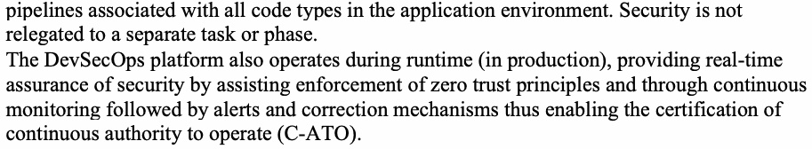
•DevSecOpsプラットフォームはランタイム（本番環境）中も動作し、ゼロトラスト原則の適用を支援するとともに、継続的な監視、アラート、是正メカニズムを通じてセキュリティをリアルタイムに保証する。これにより、継続的運用権限（C-ATO）の認証が可能になる。
3.3 DevSecOps – Key Primitives and Implementation Tasks
3.3 DevSecOps – 主要なプリミティブと実装タスク
The key primitives and implementation tasks involved are:
関連する主要なプリミティブおよび実装タスクは以下の通りである。
•Concept of pipelines and the CI/CD pipeline
•パイプラインの概念とCI/CDパイプライン
•Building blocks for the CI/CD pipeline
•CI/CDパイプラインの構成要素
•Designing and executing the CI/CD pipeline
•CI/CDパイプラインの設計と実行
•Strategies for automation
•自動化のための戦略
•Requirements for security automation tools in the CI/CD pipeline
•CI/CDパイプラインにおけるセキュリティ自動化ツールの要件
3.3.1 Concept of Pipelines and the CI/CD Pipeline
3.3.1 パイプラインの概念とCI/CDパイプライン
DevSecOps, being a methodology or framework for agile application development, deployment, and operations – is made up of stages just like any other methodology [14]. The sequence and flow of information through the stages is called workflow, where some stages can be executed in parallel while others have to follow a sequence. Each stage may require the invocation of a unique job to execute the activities in that stage.
DevSecOpsは、アジャイルなアプリケーションの開発、デプロイ、および運用のための方法論またはフレームワークであり、他のあらゆる方法論と同様に複数のステージから構成されている [14]。各ステージを経由する情報の順序および流れはワークフローと呼ばれ、一部のステージは並行して実行できるが、他のステージは順序に従う必要がある。各ステージでは、そのステージのアクティビティを実行するために固有のジョブの呼び出しが必要になる場合がある。
A unique concept that DevSecOps introduces in the process workflow is the concept of “pipelines” [15]. With pipelines, there is no need to individually write jobs for initiating/executing each stage of the process. Instead, there is only one job that starts from the initial stage, automatically triggers the activities/tasks pertaining to other stages (both sequential and parallel), and creates an error-free smart workflow.
DevSecOpsがプロセスのワークフローに導入する独自の概念は、「パイプライン」の概念である [15]。パイプラインを使用することで、プロセスの各ステージを開始/実行するためのジョブを個別に作成する必要がなくなる。その代わりに、初期ステージから開始し、他のステージ（順次および並行の両方）に関連するアクティビティ/タスクを自動的にトリガーして、エラーのないスマートなワークフローを作成するジョブが1つだけ存在する。
The pipeline in DevSecOps is called the CI/CD pipeline based on the overall tasks it accomplishes and the two individual stages it contains. CD can denote either the continuous delivery or continuous deployment stage. Depending on this latter stage, CI/CD can involve the following tasks:
DevSecOpsにおけるパイプラインは、それが達成するタスク全体および含まれる2つの個別のステージに基づいて、CI/CDパイプラインと呼ばれる。CDは、継続的デリバリー（continuous delivery）または継続的デプロイ（continuous deployment）のいずれかのステージを示すことができる。この後者のステージに応じて、CI/CDには以下のタスクが含まれる場合がある。
•Build, Test, Secure, and Deliver – the tested modified code is delivered to the staging area.
•ビルド、テスト、セキュリティ保護、デリバリー – テスト済みの変更されたコードがステージングエリアにデリバリーされる。
•Build, Test, Secure, Deliver, and Deploy – the code in the stage area is automatically deployed.
•ビルド、テスト、セキュリティ保護、デリバリー、デプロイ – ステージングエリアのコードが自動的にデプロイされる。
In the former, automation ends at the delivery stage, and the next task of deployment of the modified application in the hosting platform infrastructure is performed manually. In the latter, the deployment is also automated. Automation of any stage in the pipeline is enabled by tools that express the pipeline stage as code.
前者では、自動化はデリバリーステージで終了し、ホスティングプラットフォームのインフラストラクチャに変更されたアプリケーションをデプロイする次のタスクは手動で実行される。後者では、デプロイも自動化される。パイプラインの任意のステージの自動化は、パイプラインステージをコードとして表現するツールによって可能になる。
The workflow process for a CI/CD pipeline is depicted in Figure 1 below:
CI/CDパイプラインのワークフロープロセスは、以下の図1に示されている。
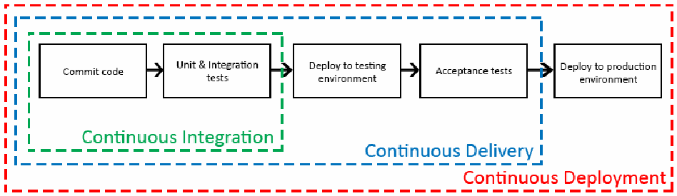
図1：CI/CDパイプラインのワークフロー [16]。右向きの矢印で結ばれた 5 つの箱が横に並ぶ。Commit code（コードのコミット）、Unit & Integration tests（単体テストと統合テスト）、Deploy to testing environment（テスト環境へのデプロイ）、Acceptance tests（受け入れテスト）、Deploy to production environment（本番環境へのデプロイ）である。入れ子の破線の枠が各手法の範囲を示し、Continuous Integration（継続的インテグレーション）と記された緑の枠は最初の 2 つの箱を、Continuous Delivery（継続的デリバリー）と記された青の枠は最初の 4 つの箱を、Continuous Deployment（継続的デプロイ）と記された赤の枠は 5 つすべてを囲む。
Figure 1: CI/CD pipeline workflow [16]
図1：CI/CDパイプラインのワークフロー [16]
The unit and integration tests shown in the diagram use the SAST, DAST, and SCA tools described in Section 3.2. It should be noted that an organization has the option to continue the build process when a test fails. Depending on how the organization balances risk tolerance versus business needs, it may choose to fail-open (log and continue) or fail-closed (stop/break) when a specific test fails. In the fail-closed event, the developer gets the test outcome report, must fix the issues, and restart the CI process.
図に示す単体テストおよび統合テストでは、セクション3.2で説明されているSAST、DAST、およびSCAツールを使用する。テストが失敗したときにビルドプロセスを続行する選択肢が組織にあることに留意すべきである。組織がリスク許容度とビジネスニーズのバランスをどのように取るかに応じて、特定のテストが失敗したときにフェイルオープン（ログを記録して続行）またはフェイルクローズ（停止／中断）を選択することがある。フェイルクローズの場合、開発者はテスト結果レポートを受け取り、問題を修正して、CIプロセスを再開しなければならない。
Continuous integration involves developers frequently merging code changes into a central repository where automated builds and tests run. Build is the process of converting the source code to executable code for the platform on which it is intended to run. In the CI/CD pipeline software, the developer’s changes are validated by creating a build and running automated tests against the build. This process avoids the integration challenges that can happen when waiting for release day to merge changes into the release branch [17].
原本PDFの抜粋画像
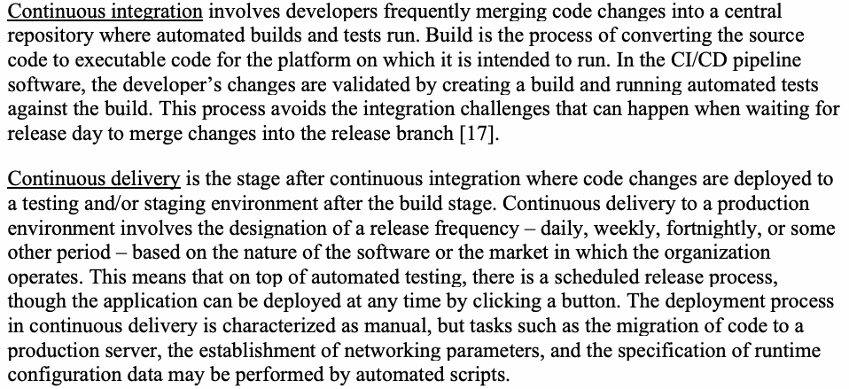
継続的インテグレーションには、開発者がコード変更を、自動化されたビルドとテストが実行される中央リポジトリに頻繁にマージすることが含まれる。ビルドとは、実行が意図されたプラットフォーム向けの実行可能コードにソースコードを変換するプロセスである。CI/CDパイプラインソフトウェアでは、ビルドを作成し、そのビルドに対して自動テストを実行することによって、開発者の変更が検証される。このプロセスは、リリース日まで待って変更をリリースブランチにマージする際に発生し得る統合の課題を回避する [17]。
Continuous delivery is the stage after continuous integration where code changes are deployed to a testing and/or staging environment after the build stage. Continuous delivery to a production environment involves the designation of a release frequency – daily, weekly, fortnightly, or some other period – based on the nature of the software or the market in which the organization operates. This means that on top of automated testing, there is a scheduled release process, though the application can be deployed at any time by clicking a button. The deployment process in continuous delivery is characterized as manual, but tasks such as the migration of code to a production server, the establishment of networking parameters, and the specification of runtime configuration data may be performed by automated scripts.
継続的デリバリーとは、ビルドステージの後にコード変更がテスト環境やステージング環境（またはその両方）にデプロイされる、継続的インテグレーションの後のステージである。本番環境への継続的デリバリーには、ソフトウェアの性質や組織が活動する市場に基づいて、日次、週次、隔週、またはその他の期間といったリリース頻度の指定が含まれる。これは、ボタンをクリックすることでアプリケーションをいつでもデプロイできるものの、自動テストに加えてスケジュールされたリリースプロセスが存在することを意味する。継続的デリバリーにおけるデプロイプロセスは手動として特徴付けられるが、本番サーバーへのコードの移行、ネットワークパラメータの確立、ランタイム構成データの指定などのタスクは、自動化されたスクリプトによって実行される場合がある。
Continuous deployment is similar to continuous delivery except that the releases happen automatically [17], and changes to code are available to customers immediately after they are made. The automatic release process may in many instances include A/B testing to facilitate slow rollout of new features so as to mitigate the impact of failures if there is a bug/error.
継続的デプロイは、リリースが自動的に行われ [17]、コードへの変更が作成された直後に顧客が利用可能になる点を除いて、継続的デリバリーと類似している。自動リリースプロセスには、バグやエラーが存在する場合に障害の影響を緩和するよう新機能の緩やかなロールアウトを促進するために、多くの場合A/Bテストが含まれることがある。
The distinction between continuous delivery and continuous deployment is shown in Figure 2 below.
原本PDFの抜粋画像
継続的デリバリーと継続的デプロイの違いは、以下の図2に示されている。
![Figure 2 - Distinction Between Continuous Delivery and Continuous Deployment [17]. A legend at upper right: green = AUTOMATIC, orange = MANUAL. Two rows of steps joined by dotted lines. Both rows begin with BUILDS and TEST inside a blue panel titled Continuous integration. The upper row, labeled Continuous delivery, continues ACCEPTANCE TEST, DEPLOY TO STAGING, then DEPLOY TO PRODUCTION in orange (manual), followed by an arrow to SMOKE TESTS. The lower row, labeled Continuous deployment, continues ACCEPTANCE TEST, DEPLOY TO STAGING, DEPLOY TO PRODUCTION and SMOKE TESTS, all in green (automatic).](assets/204c/p0024-figure-01.png)
図2 - 継続的デリバリーと継続的デプロイの違い [17]。右上の凡例は、緑が AUTOMATIC（自動）、橙が MANUAL（手動）である。点線で結ばれた手順が 2 行ある。どちらの行も、Continuous integration（継続的インテグレーション）と題された青いパネルの中の BUILDS（ビルド）と TEST（テスト）で始まる。上の行は Continuous delivery（継続的デリバリー）と記され、ACCEPTANCE TEST（受け入れテスト）、DEPLOY TO STAGING（ステージングへのデプロイ）と続き、DEPLOY TO PRODUCTION（本番へのデプロイ）が橙（手動）で、そこから矢印で SMOKE TESTS（スモークテスト）へ進む。下の行は Continuous deployment（継続的デプロイ）と記され、ACCEPTANCE TEST、DEPLOY TO STAGING、DEPLOY TO PRODUCTION、SMOKE TESTS と続き、すべて緑（自動）である。
Figure 2 - Distinction Between Continuous Delivery and Continuous Deployment [17]
図2 - 継続的デリバリーと継続的デプロイの違い [17]
3.3.2 Building Blocks for CI/CD Pipelines
3.3.2 CI/CDパイプラインの構成要素
The primary software for defining CI/CD pipeline resources, building the pipelines, and executing those pipelines is the CI/CD pipeline software. There may be slight variations in the architecture of this class of software depending on the particular offering. The following is an overview of the landscape in which CI/CD tools (pipeline software) operate:
CI/CDパイプラインのリソースを定義し、パイプラインを構築し、それらのパイプラインを実行するための主要なソフトウェアは、CI/CDパイプラインソフトウェアである。このクラスのソフトウェアのアーキテクチャには、特定の製品・サービスに応じてわずかな差異が存在する場合がある。以下は、CI/CDツール（パイプラインソフトウェア）が動作する環境の概要である。
•Some CI/CD tools natively operate on the platform on which the application and the associated resources are hosted (i.e., container orchestration and resource management platform), while others need to be integrated into the application hosting platform through its API. Some advantages of using the CI/CD tools that are native to the application hosting platform are:
•一部のCI/CDツールは、アプリケーションおよび関連リソースがホストされているプラットフォーム（すなわち、コンテナオーケストレーションおよびリソース管理プラットフォーム）上でネイティブに動作するが、他のツールはそのAPIを介してアプリケーションホスティングプラットフォームに統合される必要がある。アプリケーションホスティングプラットフォームにネイティブなCI/CDツールを使用することのいくつかの利点は以下のとおりである。
•It makes it easier to deploy, maintain, and manage the CI/CD tool itself.
•CI/CDツール自体の展開、保守、管理が容易になる。
•Every pipeline defined by the CI/CD tool becomes another platform-native resource and is managed the same way. In fact, all entities required for executing pipelines, such as Tasks and Pipelines (which then act as blueprints for other entities, such as Task Runs and Pipeline Runs, respectively), can be created as custom resource definitions (CRDs) built on top of resources native to the platform [18]. Software with this type of architecture may be used by other CI/CD pipeline software offerings to facilitate faster defining of pipelines.
•CI/CDツールが定義する各パイプラインは、プラットフォームネイティブのリソースの一つとなり、同じ方法で管理される。実際、パイプラインを実行するために必要なすべてのエンティティ（TaskやPipelineなど。これらはそれぞれ、Task RunやPipeline Runなど他のエンティティの設計図として機能する）は、プラットフォームにネイティブなリソースの上に構築されたカスタムリソース定義（CRD）として作成できる [18]。このようなアーキテクチャのソフトウェアは、パイプラインの定義を迅速化するために、他のCI/CDパイプラインソフトウェア製品でも利用される場合がある。
•Some CI/CD tools integrate with code repositories to scan/inspect application code. These types of tools have association with code repositories for each application and for each environment. When changes in application modules, infrastructure, or configuration are made they are stored in these code repositories. The CI/CD pipeline software connected to the code repositories through webhooks or some other means is activated on commits (push workflow model) or through pull requests from these repositories.
•一部のCI/CDツールは、アプリケーションコードをスキャン／検査するためにコードリポジトリと統合される。この種のツールは、アプリケーションごと、環境ごとにコードリポジトリと関連付けられている。アプリケーションモジュール、インフラストラクチャ、または構成に変更が加えられると、それらはこれらのコードリポジトリに保存される。webhookなどの手段でコードリポジトリに接続されたCI/CDパイプラインソフトウェアは、コミット時（プッシュ型ワークフローモデル）に、またはこれらのリポジトリからのプルリクエストによって起動される。
•Some CI/CD tools perform CD functions alone for the native platform (e.g., Jenkins X for Kubernetes platform) or for multiple technology stacks (e.g., Spinnaker for multi-cloud deployment). The difficulty with some in this class of tools is that they may lack native tools for completing the CI functions (e.g., tools to test code, build application images, or push them to registry).
•一部のCI/CDツールは、ネイティブプラットフォーム向け（例：Kubernetesプラットフォーム向けのJenkins X）または複数のテクノロジースタック向け（例：マルチクラウドデプロイ向けのSpinnaker）にCD機能のみを実行する。このクラスのツールの一部における難点は、CI機能を完了するためのネイティブツール（例：コードのテスト、アプリケーションイメージのビルド、レジストリへのプッシュを行うツール）が不足している場合があることである。
3.3.3 Preparing and Executing the CI/CD pipeline
3.3.3 CI/CDパイプラインの準備と実行
The purpose of creating the CI/CD pipeline is to enable frequent updates to source code, rebuilds, and the automatic deployment of updated modules into the production environment. The key tasks involved are [19]:
CI/CDパイプラインを作成する目的は、ソースコードの頻繁な更新、再ビルド、および更新されたモジュールの本番環境への自動デプロイを可能にすることである。含まれる主なタスクは次のとおりである [19]：
The preparatory tasks required are the following: (1) Ensure that all individual components in the DevSecOps platform (Pipeline software, SDLC software, Code Repositories, Observability tools etc.) are available (2) Ensure that these components are secure either through certification, validation or customized testing (3) Integrate CI & CD tools with SDLC tools – Access tokens, Calling scripts, pipeline definitions (4) Set up configuration details in IaC tool (with GitOps) based on deployment environment (i.e., application hosting platform in-premise or in the cloud) (5) Integrate the runtime tools to the deployment environment (6) Design the dashboard and define the events to monitor, the alerts to be generated and the application state variables (e.g., Memory utilization etc.) to monitor through connection to Tools such as log aggregators, metric generators and trace generators.
必要な準備タスクは以下のとおりである：(1) DevSecOpsプラットフォーム内のすべての個別コンポーネント（パイプラインソフトウェア、SDLCソフトウェア、コードリポジトリ、オブザーバビリティツールなど）が利用可能であることを確認する (2) 認証、検証、またはカスタマイズされたテストのいずれかを通じてこれらのコンポーネントが安全であることを確認する (3) CI & CDツールをSDLCツールと統合する – アクセストークン、呼び出しスクリプト、パイプライン定義 (4) デプロイ環境（すなわち、オンプレミスまたはクラウド内のアプリケーションホスティングプラットフォーム）に基づいて、IaCツール（GitOpsを伴う）に構成の詳細を設定する (5) ランタイムツールをデプロイ環境に統合する (6) ログアグリゲーター、メトリックジェネレーター、トレースジェネレーターなどのツールへの接続を通じて、ダッシュボードを設計し、監視するイベント、生成するアラート、および監視するアプリケーション状態変数（例：メモリ使用率など）を定義する。
The execution tasks include [19]:
実行タスクには以下が含まれる [19]：
•Setting up the source code repository: Set up a repository (e.g., GitHub or GitLab) for storing application source code with proper version control.
•ソースコードリポジトリのセットアップ：適切なバージョン管理を備えた、アプリケーションのソースコードを保存するためのリポジトリ（例：GitHubまたはGitLab）をセットアップする。
•Build process: Configure and execute the build process for generating the executables (for those portions of the code that need to be updated) using an automated code build tool.
•ビルドプロセス：自動化されたコードビルドツールを使用して、（更新が必要なコードのそれら部分に対する）実行可能ファイルを生成するためのビルドプロセスを構成および実行する。
•Securing the process: Ensure that the build is free of static and dynamic vulnerabilities through unit testing with SAST and DAST tools. This and the above tasks are activated by the CI tool.
•プロセスの保護：SASTツールおよびDASTツールを用いた単体テストを通じて、ビルドに静的および動的な脆弱性がないことを確認する。これおよび上記のタスクは、CIツールによってアクティブ化される。
•Describing the deployment environment: This may involve describing (using the IaC) the physical/virtual resources to deploy the application either in the cloud or in the enterprise data center
•デプロイメント環境の記述：これには、クラウドまたはエンタープライズデータセンターのいずれかにアプリケーションをデプロイするための物理/仮想リソースを（IaCを使用して）記述することが含まれる場合がある。
•Creating the delivery pipeline: Create a pipeline that will automatically deploy the application. This and the previous task are enabled by the CD tool.
•デリバリーパイプラインの作成：アプリケーションを自動的にデプロイするパイプラインを作成する。これおよび前のタスクは、CDツールによって有効化される。
•Test the code and execute the pipeline: After proper testing, execute the CI tool whenever a new code appears in the repository. When the build process is successful, execute the CD tool to deploy the application into staging/production environment.
•コードをテストしパイプラインを実行する：適切なテストの後、リポジトリに新しいコードが現れるたびにCIツールを実行する。ビルドプロセスが成功したら、CDツールを実行してアプリケーションをステージング/本番環境にデプロイする。
•Activate the run time tool and the dashboard to initiate run time monitoring
•ランタイムツールとダッシュボードをアクティブ化してランタイム監視を開始する
To reiterate, the three primary stages of the CI/CD process are build/test, ship/package, and deploy. The following features transform this into a pipeline:
繰り返すと、CI/CDプロセスの3つの主要なステージは、ビルド/テスト、出荷/パッケージ化、およびデプロイである。以下の機能により、これがパイプラインへと変革される：
•When an update is made to the source code for a service, the code changes pushed to the source code repository trigger the code building tool.
•サービスのソースコードに対して更新が行われると、ソースコードリポジトリにプッシュされたコード変更によってコードビルドツールがトリガーされる。
•The code development environment or a code building tool (such as an IDE), is often integrated with security testing tools (e.g., static vulnerability analysis tool) to facilitate the generation of secure compiled code artifacts, thus integrating security into the CI pipeline.
•コード開発環境やコードビルドツール（IDEなど）は、セキュアなコンパイル済みコードアーティファクトの生成を促進し、それによってCIパイプラインにセキュリティを統合するために、セキュリティテストツール（静的脆弱性分析ツールなど）と統合されることがよくある。
•The generation of compiled code artifacts in code building tools triggers the shipping/package tool, which may be integrated with its own set of tools (e.g., dynamic vulnerability analysis, dynamic penetration testing tools, software composition analysis tools for identifying vulnerabilities in the attached libraries) and also creates the configuration parameters relevant to the deployment environment.
•コードビルドツールでのコンパイル済みコードアーティファクトの生成は出荷／パッケージングツールのトリガーとなる。このツールは独自の一連のツール（動的脆弱性分析ツール、動的ペネトレーションテストツール、添付されたライブラリ内の脆弱性を特定するためのソフトウェア構成分析ツールなど）と統合されている場合があり、またデプロイ環境に関連する構成パラメータも作成する。
•The output of the shipping/packaging tool is then automatically fed to the CD tool, which deploys the package into the desired environment (e.g., staging, production) [20].
•出荷／パッケージングツールの出力はその後CDツールに自動的に供給され、CDツールはそのパッケージを目的の環境（ステージング、本番環境など）にデプロイする [20]。
The workflow of the CI/CD pipeline should not create the impression that there is no human element involved. The following teams/role players contribute to CI/CD pipeline [21]:
CI/CDパイプラインのワークフローから、人間の要素が関与していないという印象を受けるべきではない。以下のチーム／ロールプレイヤーがCI/CDパイプラインに貢献している [21]：
•Development team – Members of this team declare third-party off-the-shelf software (OSS) dependencies for their application, review recommendations from DevSecOps system around vulnerable dependencies, update them as suggested, and write adequate test-cases to ensure all functional verifications (to eliminate runtime bugs).
原本PDFの抜粋画像
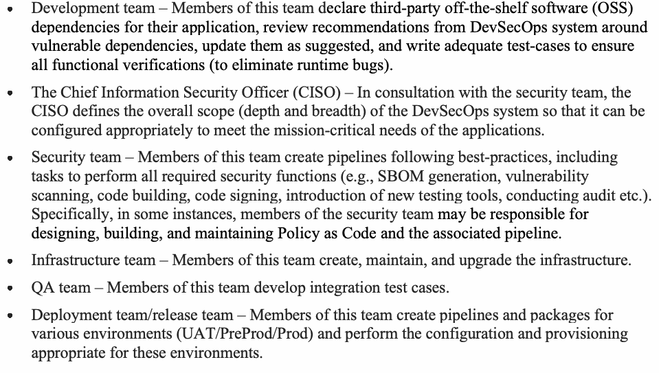
•開発チーム – このチームのメンバーは、自らのアプリケーションに対するサードパーティ製の既製ソフトウェア（OSS）の依存関係を宣言し、脆弱な依存関係に関するDevSecOpsシステムからの推奨事項を確認し、提案どおりにそれらを更新し、すべての機能検証を確実に行えるようにするため（ランタイムバグをなくすため）の適切なテストケースを作成する。
•The Chief Information Security Officer (CISO) – In consultation with the security team, the CISO defines the overall scope (depth and breadth) of the DevSecOps system so that it can be configured appropriately to meet the mission-critical needs of the applications.
•最高情報セキュリティ責任者（CISO） – セキュリティチームと協議の上、CISOはDevSecOpsシステムの全体的な範囲（深度と幅）を定義し、アプリケーションのミッションクリティカルなニーズを満たすように適切に構成できるようにする。
•Security team – Members of this team create pipelines following best-practices, including tasks to perform all required security functions (e.g., SBOM generation, vulnerability scanning, code building, code signing, introduction of new testing tools, conducting audit etc.). Specifically, in some instances, members of the security team may be responsible for designing, building, and maintaining Policy as Code and the associated pipeline.
•セキュリティチーム – このチームのメンバーは、必要なすべてのセキュリティ機能（SBOM生成、脆弱性スキャン、コードビルド、コード署名、新しいテストツールの導入、監査の実施など）を実行するタスクを含む、ベストプラクティスに従ったパイプラインを作成する。具体的には、場合によっては、セキュリティチームのメンバーがPolicy as Codeおよび関連するパイプラインの設計、構築、維持を担当することがある。
•Infrastructure team – Members of this team create, maintain, and upgrade the infrastructure.
•インフラストラクチャチーム – このチームのメンバーは、インフラストラクチャを作成、維持、アップグレードする。
•QA team – Members of this team develop integration test cases.
•QAチーム – このチームのメンバーは、統合テストケースを開発する。
•Deployment team/release team – Members of this team create pipelines and packages for various environments (UAT/PreProd/Prod) and perform the configuration and provisioning appropriate for these environments.
•デプロイチーム／リリースチーム – このチームのメンバーは、さまざまな環境（UAT/PreProd/Prod）向けのパイプラインとパッケージを作成し、これらの環境に適した構成とプロビジョニングを実行する。
Some of the many activities performed by these teams include the customization, update, and enhancement of the tools employed in the CI/CD pipeline (e.g., updating the static vulnerability analysis tool with the latest database of known vulnerabilities). Caution should be exercised during manual operations so that they do not block pipelines. The targets for mean time to production should be set up while also mitigating risks, such as insider threats, through the use of “merge (GitLab) or pull (GitHub) requests” and multiple approvers for those requests. This pipeline is designed, maintained, and executed by the post-release team who – in addition to monitoring functions – performs other processes, such as compliance management, backup processes, and asset tracking [22].
原本PDFの抜粋画像
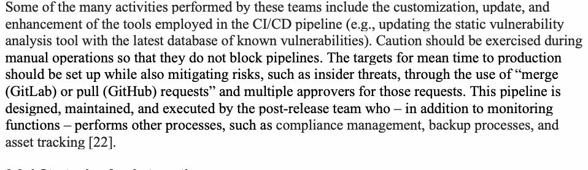
これらのチームが行う多くの活動には、CI/CDパイプラインで使用するツールのカスタマイズ、更新、機能強化が含まれる（例：既知の脆弱性に関する最新データベースを使った静的脆弱性分析ツールの更新）。手動操作によってパイプラインが妨げられないよう、注意すべきである。本番環境への移行までの平均時間の目標を設定するとともに、「マージ（GitLab）リクエストまたはプル（GitHub）リクエスト」を使用し、それらのリクエストに複数の承認者を置くことで、インサイダー脅威などのリスクを軽減すべきである。このパイプラインは、リリース後チームによって設計、維持、実行される。このチームは監視機能に加えて、コンプライアンス管理、バックアッププロセス、資産追跡などの他のプロセスも実施する [22]。
3.3.4 Strategies for Automation
3.3.4 自動化の戦略
Compared to other models of software development, which involve a linear progression from coding to release, DevOps uses a forward process with a delivery pipeline (i.e., build/secure, ship/package, and release) and a reverse process with a feedback loop (i.e., plan and monitor) that form a recursive workflow. The role of automation in these activities is to improve this workflow. Continuous integration emphasizes testing automation to ensure that the application is not broken whenever new commits are integrated into the main branch. Automation results in the following benefits:
原本PDFの抜粋画像
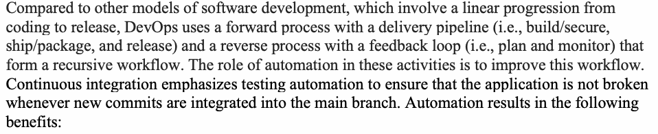
コーディングからリリースへの線形な進捗を伴うソフトウェア開発の他のモデルと比較して、DevOpsでは、デリバリーパイプライン（すなわち、ビルド／セキュア化、出荷／パッケージ化、およびリリース）を伴うフォワードプロセスと、フィードバックループ（すなわち、計画および監視）を伴うリバースプロセスを用い、これらが再帰的なワークフローを形成する。これらの活動における自動化の役割は、このワークフローを改善することである。継続的インテグレーションは、新しいコミットがメインブランチに統合されるたびにアプリケーションが壊れないよう、テストの自動化を重視する。自動化により、次の利点が得られる。
•ソフトウェアの静的フローおよびランタイムフローに関するデータの生成。
•Reduction of development and deployment times.
•開発時間およびデプロイ時間の短縮。
•Built-in security, privacy, and compliance for the architecture.
•アーキテクチャのための組み込みのセキュリティ、プライバシー、およびコンプライアンス。
The following strategies are recommended [23] for automation so as to facilitate better utilization of organizational resources and derive the greatest benefit in terms of an efficient, secure application environment.
組織のリソースのより適切な活用を促進し、効率的でセキュアなアプリケーション環境の観点から最大のメリットを引き出すために、自動化に関する以下の戦略が推奨されている [23]。
Choice of Activities to Automate: For example, the following are productive candidates for the automation of testing activities.
自動化するアクティビティの選択：例えば、以下はテストアクティビティの自動化における効果的な候補である。
•Testing of modules whose functions are subject to regulatory compliance (e.g., PCI-DSS, HIPAA, Sarbanes-Oxley).
•規制コンプライアンス（例：PCI-DSS、HIPAA、Sarbanes-Oxley）の対象となる機能を持つモジュールのテスト。
•Tasks that are repetitive with moderate to high frequency.
•中程度から高頻度で繰り返されるタスク。
•Testing of modules that perform time-sequenced operations, such as message publishers and message subscribers.
•メッセージパブリッシャーやメッセージサブスクライバーなど、時系列の操作を実行するモジュールのテスト。
•Testing of workflows (e.g., request tracing) involving transactions that span multiple services.
•複数のサービスにまたがるトランザクションを伴うワークフロー（例：リクエストトレーシング）のテスト。
•Testing of services that are resource-intensive and likely to be performance bottlenecks.
•リソースを大量に消費し、パフォーマンスのボトルネックになりやすいサービスのテスト。
After choosing the candidates for automation based on the above criteria, the usual risk analysis must be applied to choose a subset that provides an optimum return on investment and maximizes desirable security metrics (e.g., defense in depth). Some recommended strategies include:
上記の基準に基づいて自動化の候補を選択した後、最適な投資収益率をもたらし、望ましいセキュリティ指標（例：多層防御）を最大化するサブセットを選択するために、通常のリスク分析を適用しなければならない。推奨される戦略には次のようなものがある。
•Using the cost-benefit ratio in hours saved per year to prioritize which processes to automate [23].
原本PDFの抜粋画像
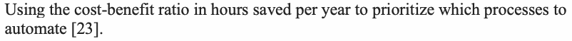
•年間節約時間における費用対効果比を使用して、自動化するプロセスの優先順位を決定すること [23]。
•Using key performance indicators (KPI) (e.g., mean time to identify faults or problems, rectify, or recover) as markers to refine the DevSecOps processes [23].
原本PDFの抜粋画像
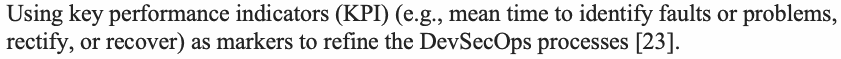
•主要業績評価指標（KPI）（例：障害や問題の特定、修正、または復旧にかかる平均時間）をDevSecOpsプロセスの改善のための指標として使用すること [23]。
•Based on the application, applying different weights to infrastructure services (e.g., authorization and other policies enforcement, monitoring of system states to ensure secure runtime states, network resilience in terms of system availability, latency, mean time to recover from an outage etc.) to determine the allocation of resources to DevSecOps processes.
原本PDFの抜粋画像
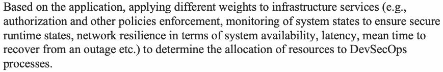
•アプリケーションに基づいて、DevSecOpsプロセスへのリソース割り当てを決定するために、インフラストラクチャサービス（例：認可およびその他のポリシーの適用、セキュアなランタイム状態を確保するためのシステム状態の監視、システム可用性、レイテンシ、停止からの平均復旧時間などの観点におけるネットワークレジリエンスなど）に異なる重み付けを適用すること。
3.3.5 Requirements for Security Automation Tools in CI/CD Pipelines
3.3.5 CI/CDパイプラインにおけるセキュリティ自動化ツールの要件
The security automation tools for various functions (e.g., static vulnerability analysis, dynamic vulnerability analysis, software composition analysis) used in CI/CD pipelines need to have different interface and alerting/reporting requirements since they have to operate seamlessly depending on the pipeline stage (e.g., build, package, release) during which they are used. These requirements are:
CI/CDパイプラインで使用される様々な機能（例：静的脆弱性分析、動的脆弱性分析、ソフトウェア構成分析）向けのセキュリティ自動化ツールは、使用されるパイプラインステージ（例：ビルド、パッケージ、リリース）に応じてシームレスに動作する必要があるため、異なるインターフェースおよびアラート／レポート要件を持つ必要がある。これらの要件は以下のとおりである。
•Security automation tools should work with integrated development environment (IDE) tools and help developers prioritize and remediate static vulnerabilities. These capabilities are needed to facilitate developer adoption and improve productivity.
原本PDFの抜粋画像
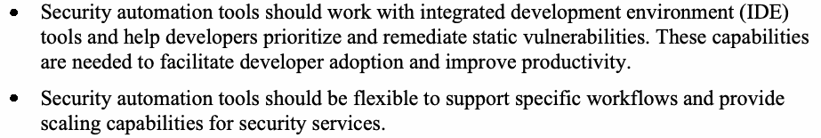
•セキュリティ自動化ツールは、統合開発環境（IDE）ツールと連携し、開発者が静的脆弱性の優先順位付けと修正を行えるよう支援すべきである。これらの機能は、開発者の導入を促進し、生産性を向上させるために必要とされる。
•Security automation tools should be flexible to support specific workflows and provide scaling capabilities for security services.
•セキュリティ自動化ツールは、特定のワークフローをサポートし、セキュリティサービスのスケーリング機能を提供できるよう柔軟であるべきである。
•Tools that perform static vulnerability checks at the build phase ensure safe data flows, and those that perform dynamic vulnerability checks ensure safe application states during runtime.
•ビルドフェーズで静的脆弱性チェックを実行するツールは安全なデータフローを保証し、動的脆弱性チェックを実行するツールはランタイム時の安全なアプリケーション状態を保証する。
It must be mentioned that security automation tools come with costs, and hence, the extent of the usage of these tools is based on risk factor analysis.
セキュリティ自動化ツールにはコストが伴うため、これらツールの利用規模はリスク要因の分析に基づくことに言及しておかなければならない。
4 Implementing DevSecOps Primitives for the Reference Platform
4 リファレンスプラットフォームのためのDevSecOpsプリミティブの実装
Various CI/CD pipelines are involved in the reference platform (i.e., microservices-based application with service mesh that provides infrastructure services). Though the reference application is a microservices-based application, the DevSecOps primitives can be applied to monolithic applications as well as applications that are both on-premises and cloud-based (e.g., hybrid cloud, single public cloud, and multi-cloud).
参照プラットフォーム（すなわち、インフラストラクチャサービスを提供するサービスメッシュを備えたマイクロサービスベースのアプリケーション）には、様々なCI/CDパイプラインが関与している。参照アプリケーションはマイクロサービスベースのアプリケーションであるが、DevSecOpsプリミティブはモノリシックなアプリケーションや、オンプレミスとクラウドベースの両方のアプリケーション（例：ハイブリッドクラウド、単一のパブリッククラウド、マルチクラウド）にも適用できる。
In section 2.1, we referred to the five code types in our reference application environment. We also mentioned that separate CI/CD pipelines can be created for each of these five code types as well. The location of these five code types within the reference platform components will be discussed followed by separate sections that will describe the associated CI/CD pipelines.
セクション2.1では、参照アプリケーション環境における5つのコードタイプについて言及した。また、これら5つのコードタイプのそれぞれに対して個別のCI/CDパイプラインを作成できることにも言及した。参照プラットフォームのコンポーネント内におけるこれら5つのコードタイプの配置をまず説明し、続いて関連するCI/CDパイプラインを説明する個別のセクションを設ける。
1.Code types in the reference platform and associated CI/CD pipelines (Section 4.1)
1.参照プラットフォームにおけるコードタイプと関連するCI/CDパイプライン（セクション4.1）
2.CI/CD pipeline for application code and application services code (Section 4.2)
2.アプリケーションコードおよびアプリケーションサービスコード向けのCI/CDパイプライン（セクション4.2）
3.CI/CD pipeline for infrastructure as code (IaC) (Section 4.3)
3.Infrastructure as Code（IaC）向けのCI/CDパイプライン（セクション4.3）
4.CI/CD pipeline for policy as code (Section 4.4)
4.Policy as Code向けのCI/CDパイプライン（セクション4.4）
5.CI/CD pipeline for observability as code (Section 4.5)
5.Observability as Code向けのCI/CDパイプライン（セクション4.5）
Implementation issues for all CI/CD pipelines irrespective of code types will be addressed in the following sections:
コードタイプに関係なくすべてのCI/CDパイプラインに共通する実装上の課題については、以下のセクションで扱う。
•Securing the CI/CD pipelines (Section 4.6)
•CI/CDパイプラインの保護（セクション4.6）
•Workflow models in the CI/CD pipelines (Section 4.7)
•CI/CDパイプラインにおけるワークフローモデル（セクション4.7）
•Security testing in the CI/CD pipelines (Section 4.8)
•CI/CDパイプラインにおけるセキュリティテスト（セクション4.8）
This section will also consider the overall benefits of DevSecOps with a subsection on specific advantages in the context of the reference platform and the ability to leverage DevSecOps for continuous authorization to operate (C-ATO) in Sections 4.9 and 4.10, respectively.
本セクションでは、DevSecOpsの全体的な利点についても検討し、それぞれセクション4.9および4.10において、参照プラットフォームの文脈における具体的な利点、ならびに継続的運用認可（C-ATO）のためにDevSecOpsを活用する能力に関するサブセクションを設ける。
4.1 Description of Code Types and Reference Platform Components
4.1 コードの種類および参照プラットフォームコンポーネントの説明
A brief description of the five types of codes stated above (i.e., application, application services, infrastructure, policy, and monitoring) is as follows:
上記で述べた5種類のコード（すなわち、アプリケーション、アプリケーションサービス、インフラストラクチャ、ポリシー、およびモニタリング）の概要は以下のとおりである。
•Application code and application services code – The former contains the data and application logic for a specific set of business transactions, while the latter contains code for all services, such as network connections, load balancing, and network resilience.
•アプリケーションコードおよびアプリケーションサービスコード – 前者は特定のビジネストランザクション群のデータおよびアプリケーションロジックを含み、後者はネットワーク接続、負荷分散、ネットワークレジリエンスなど、すべてのサービス向けのコードを含む。
•Infrastructure as code (IaC) – The code for provisioning and configuring infrastructure resources which host application deployment in a repeatable and consistent manner [24]. This code is written in a declarative language and – when executed – provisions, de-provisions, and configures the infrastructure for the application that is being deployed. This type of code is like any other code found in an application’s microservice except that it provides an infrastructure service (e.g., provisioning a server) rather than a transaction service (e.g., payment processing for an online retail application).
•Infrastructure as Code（IaC） – アプリケーションの展開をホストするインフラストラクチャリソースを、再現性と一貫性のある方法でプロビジョニングおよび構成するためのコード [24]。このコードは宣言型言語で記述され、実行されると、展開対象のアプリケーションのためのインフラストラクチャをプロビジョニング、デプロビジョニング、および構成する。この種のコードは、アプリケーションのマイクロサービスにある他のコードと同じようなものであるが、トランザクションサービス（例: オンライン小売アプリケーションの決済処理）ではなく、インフラストラクチャサービス（例: サーバーのプロビジョニング）を提供する点が異なる。
•Policy as code – This describes many policies, including security policies, as executable modules [25]. One example is the authorization policy, the code for which contains verbs or artifacts specific to the policy (e.g., allow, deny, etc.) and to the domain where it applies (e.g., REST API with verbs such as method [GET, PUT, etc.], path, etc.). This code can be written in a special-purpose policy language, such as Rego, or languages used in regular applications, such as Go. This code may have some overlap with the configuration code of IaC. However, for implementing policies associated with critical security services that are specific to the application domain, a separate policy as code that resides in the policy enforcement points (PEPs) of the reference platform is required.
•Policy as Code – セキュリティポリシーを含む多くのポリシーを実行可能なモジュールとして記述するもの [25]。一例が認可ポリシーであり、そのコードには、ポリシー固有の動詞やアーティファクト（例: allow、denyなど）と、それが適用されるドメイン固有のもの（例: メソッド [GET、PUTなど]、パスなどの動詞を持つREST API）が含まれる。このコードは、Regoのような特殊目的のポリシー言語、またはGoのような通常のアプリケーションで用いられる言語で記述できる。このコードは、IaCの構成コードと重複する部分がある場合がある。ただし、アプリケーションドメインに固有の重要なセキュリティサービスに関連するポリシーを実装するには、リファレンスプラットフォームのポリシー実施ポイント（PEP）に配置された、別個のPolicy as Codeが必要である。
•Observability as code – The ability to infer a system’s internal state and provide actionable insights into when and, more importantly, why errors occur within a system. It is a full-stack observability that includes monitoring and analytics and that offers key insights into the overall performance of applications and the systems hosting them. In the context of the reference platform, observability as code is the portion of the code that creates agencies in proxies and creates functionality for gathering three types of data (i.e., logs, traces, and telemetry) from microservices applications [26]. This type of code also supplies or transfers data to the external tools (e.g., log aggregation tool that aggregates log data from individual microservices, provides analysis of tracing data for bottleneck services, generates metrics that reflect the application health from telemetry data, etc.). Brief descriptions of the three functions enabled by observability as code are:
•Observability as Code（コードとしての可観測性）– システムの内部状態を推測し、システム内でいつ、そしてより重要なこととしてなぜエラーが発生するのかについての実行可能な洞察を提供する機能である。これは、監視と分析を含み、アプリケーションおよびそれらをホストするシステムの全体的なパフォーマンスに対する主要な洞察を提供するフルスタックの可観測性である。参照プラットフォームの文脈において、Observability as Codeは、プロキシ内にエージェンシーを作成し、マイクロサービスアプリケーションから3種類のデータ（すなわち、ログ、トレース、テレメトリ）を収集する機能を作成するコードの部分である[26]。このタイプのコードは、外部ツールへのデータの供給または転送も行う（例：個々のマイクロサービスからのログデータを集約するログ集約ツール、ボトルネックとなっているサービスのトレースデータの分析を提供するツール、テレメトリデータからアプリケーションの健全性を反映するメトリクスを生成するツールなど）。Observability as Codeによって可能となる3つの機能の簡単な説明は以下のとおりである。
1.Logging captures detailed error messages, as well as debugs logs and stack traces for troubleshooting.
1.ロギング（Logging）は、詳細なエラーメッセージをキャプチャするだけでなく、トラブルシューティングのためのデバッグログやスタックトレースもキャプチャする。
2.Tracing follows application requests as they wind through multiple microservices to complete a transaction in order to identify an issue or performance bottleneck in a distributed or microservices-based ecosystem.
2.トレーシング（Tracing）は、分散型またはマイクロサービスベースのエコシステムにおける問題やパフォーマンスのボトルネックを特定するために、トランザクションを完了するべく複数のマイクロサービスを通過するアプリケーションリクエストを追跡する。
3.Monitoring, or metrics, gathers telemetry data from applications and services.
3.モニタリング（Monitoring）、すなわちメトリクス（metrics）は、アプリケーションやサービスからテレメトリデータを収集する。
Each of the code types has an associated CI/CD pipeline and is described in Sections 4.2 through 4.5. There may be overlaps among application service code, infrastructure as code, policy as code, and observability as code types.
各コードタイプには関連付けられたCI/CDパイプラインがあり、セクション4.2から4.5で説明されている。アプリケーションサービスコード、Infrastructure as Code、Policy as Code、およびObservability as Codeの各タイプの間には重複が存在する可能性がある。
The constituent components of the reference platform hosting the five code types are:
5つのコードタイプをホストする参照プラットフォームの構成要素は以下のとおりである。
1.Business function component (consisting of several microservices modules with each of them often implemented as a container), which embody the application logic (e.g., interacting with data, performing transactions, etc.), thus forming the application code.
1.ビジネス機能コンポーネント（多くの場合コンテナとして実装される複数のマイクロサービスモジュールから構成される）。これはアプリケーションロジック（例：データとの対話、トランザクションの実行など）を具体化し、それによってアプリケーションコードを形成する。
2.Infrastructure component (containing computer, networking, and storage resources) whose constituents can be provisioned using infrastructure as code.
2.インフラストラクチャコンポーネント（コンピュータ、ネットワーク、およびストレージリソースを含む）。その構成要素はInfrastructure as Codeを使用してプロビジョニングできる。
3.Service mesh component (implemented through a combination of control plane modules and service proxies), which provides application services, enforces policies (e.g., authentication and authorization), and contains application services code and policy as code.
3.サービスメッシュコンポーネント（コントロールプレーンモジュールとサービスプロキシの組み合わせによって実装される）。これはアプリケーションサービスを提供し、ポリシー（例：認証および認可）を適用し、アプリケーションサービスコードおよびPolicy as Codeを含む。
4.Monitoring component (modules involved in ascertaining the parameters that indicate the health of the application), which performs functions (e.g., log aggregation, the generation of metrics, the generation of displays for dashboard, etc.) and contains observability as code.
4.監視コンポーネント（アプリケーションの健全性を示すパラメータの確認に関わるモジュール）。機能（例: ログ集約、メトリクスの生成、ダッシュボード表示の生成など）を実行し、Observability as Code を含む。
The distribution of policy and observability code types within the components of the service mesh are as follows:
サービスメッシュのコンポーネント内におけるポリシーおよび可観測性のコードタイプの分散は次のとおりである。
•Proxies (ingress, sidecar, and egress): These house encoding policies related to session establishment, routing, authentication, and authorization functions.
•プロキシ（イングレス、サイドカー、およびエグレス）：これらはセッション確立、ルーティング、認証、および認可機能に関連するポリシーのエンコードを格納する。
•Control plane of the service mesh: This houses code for relaying telemetry information from services captured and sent by proxies to specialized monitoring tools, authentication certificate generation and maintenance, updating policies in the proxies, monitoring overall configuration in the service orchestration platform for generating new proxies, and deleting obsolete proxies associated with discontinued microservices.
•サービスメッシュのコントロールプレーン：これは、プロキシによってキャプチャおよび送信されたサービスからのテレメトリ情報を専用の監視ツールへ中継するためのコード、認証証明書の生成と保守、プロキシ内のポリシーの更新、新しいプロキシを生成するためのサービスオーケストレーションプラットフォームにおける全体構成の監視、および廃止されたマイクロサービスに関連する不要になったプロキシの削除を行うコードを格納する。
•External modules: These house modules that perform specialized functions at the application and enterprise levels (e.g., such as the centralized authorization or entitlement server, the centralized logger, monitoring/alerting server status through dashboards, etc.) and build a comprehensive view of the application status. These modules are called by code from the proxies or the control plane.
•外部モジュール：これらには、アプリケーションおよびエンタープライズレベルで特殊な機能を実行し（例：集中認可サーバーまたは権限付与（エンタイトルメント）サーバー、集中ロガー、ダッシュボードを介したサーバー状態の監視／アラートなど）、アプリケーション状態の包括的なビューを構築するモジュールが収容される。これらのモジュールは、プロキシまたはコントロールプレーンからのコードによって呼び出される。
4.2 CI/CD Pipeline for Application Code and Application Services Code
4.2 アプリケーションコードおよびアプリケーションサービスコードのためのCI/CDパイプライン
Application code and application services code reside in the container orchestration and resource management platform, and the CI/CD software that implements the workflows associated with it usually resides in the same platform. This pipeline should be protected using the steps outlined in Section 4.6, and the application code under the control of this pipeline should be subject to the security testing described in Section 4.8. Additionally, the orchestration platform on which the application resides should itself be protected using a runtime security tool (e.g., Falco) [27] that can read OS kernel logs, container logs, and platform logs in real-time and process them against a threat detection rules engine to alert users of malicious behavior (e.g., creation of a privileged container, reading of a sensitive file by an unauthorized user, etc.). They usually come with a set of default (predefined) rules over which custom rules can be added. Installing them on the platform spins up agents for each node in the cluster, which can monitor the containers running in the various pods of that node. The advantage of this type of tool is that it complements the existing platform’s native security measures, such as access control models and pod security policies, that prevent violations of security by actually detecting them when they occur [27].
アプリケーションコードとアプリケーションサービスのコードは、コンテナオーケストレーション・リソース管理プラットフォームに存在し、それに関連するワークフローを実装するCI/CDソフトウェアも、通常は同じプラットフォームに存在する。このパイプラインは、4.6節で概説した手順を用いて保護すべきであり、このパイプラインの管理下にあるアプリケーションコードは、4.8節で述べるセキュリティテストの対象とすべきである。さらに、アプリケーションが存在するオーケストレーションプラットフォーム自体も、OSカーネルログ、コンテナログ、プラットフォームログをリアルタイムで読み取り、脅威検知ルールエンジンに照らして処理することで、悪意のある動作（例: 特権コンテナの作成、権限のないユーザーによる機密ファイルの読み取りなど）をユーザーに警告できる、ランタイムセキュリティツール（例: Falco）[27] を用いて保護すべきである。これらのツールには通常、既定の（事前定義された）ルールのセットが付属しており、その上にカスタムルールを追加できる。プラットフォームにインストールすると、クラスター内の各ノードにエージェントが起動され、そのノードのさまざまなポッドで稼働しているコンテナを監視できる。この種のツールの利点は、アクセス制御モデルやポッドセキュリティポリシーなど、セキュリティ違反を防止する既存のプラットフォームネイティブのセキュリティ対策を補完し、違反が発生した際にそれを実際に検知できることである [27]。
4.3. CI/CD Pipeline for Infrastructure as Code
4.3. Infrastructure as CodeのためのCI/CDパイプライン
The conventional approach to allocating infrastructure for applications consists of initially provisioning compute and networking resources with configuration parameters and ongoing tasks such as patch management (e.g., OS and libraries), establishing conformity to compliance regulations (e.g., data privacy), and making drift (where the current configuration no longer provides the intended operational state) correction.
アプリケーション向けにインフラストラクチャを割り当てる従来のアプローチは、まず構成パラメータを用いてコンピュートリソースとネットワークリソースをプロビジョニングし、続いて、パッチ管理（例: OSやライブラリ）、コンプライアンス規制（例: データプライバシー）への適合の確立、ドリフト（現在の構成が意図した運用状態をもはや提供していない状態）の修正といった継続的な作業を行うことで構成される。
Infrastructure as code (IaC) is a declarative style of code that encodes computer instructions that encapsulate the parameters necessary to deploy virtual infrastructure on a public cloud service or private data center via a service’s management APIs [28]. In other words, infrastructures are defined in a declarative way and versioned using the same source code control tools (e.g., GitOps) used for the application code. Depending on the particular IaC tool, this language can either be a scripting language (e.g., JavaScript, Python, TypeScript, etc.) or a proprietary configuration language (e.g., HCL) that may or may not be compatible with standardized languages (e.g., JSON). The basic instructions consist of telling the system how to provision and manage infrastructure (whether that is an individual compute instance or a complete server, such as physical servers or virtual machines), containers, storage, network connections, connection topology, and load balancers. [29]. In some cases, the infrastructure may be short-lived or ephemeral, and the lifespan of the infrastructure (whether immutable or mutable) does not warrant continued configuration management. Provisioning could be tied to individual commits of application code using tools that can connect application code and infrastructure code in a way that is logical, expressive, and familiar to development and operations teams, where application code increasingly defines the infrastructure resource requirements for a cloud application [30].
原本PDFの抜粋画像
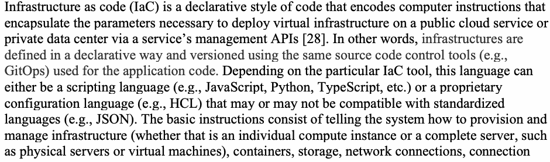
Infrastructure as Code（IaC）は、サービスの管理APIを通じてパブリッククラウドサービスまたはプライベートデータセンター上に仮想インフラストラクチャをデプロイするために必要なパラメータをカプセル化するコンピューター命令をエンコードした、宣言型のコードスタイルである [28]。言い換えれば、インフラストラクチャは宣言的な方法で定義され、アプリケーションコードに使用するのと同じソースコード管理ツール（例：GitOps）でバージョン管理される。特定のIaCツールによって、この言語はスクリプト言語（例：JavaScript、Python、TypeScriptなど）の場合もあれば、標準化された言語（例：JSON）と互換性がある場合もない場合もある独自の構成言語（例：HCL）の場合もある。基本的な命令は、個々のコンピュートインスタンスであれ、物理サーバーや仮想マシンなどの完全なサーバーであれ、インフラストラクチャ、コンテナ、ストレージ、ネットワーク接続、接続トポロジー、ロードバランサーをどのようにプロビジョニングし管理するかをシステムに指示するものである [29]。場合によっては、インフラストラクチャが短命または一時的であり、そのインフラストラクチャ（イミュータブルかミュータブルかを問わない）の寿命を考えると、構成管理を継続する必要がないこともある。プロビジョニングは、アプリケーションコードとインフラストラクチャコードを論理的で表現力があり、開発チームと運用チームになじみのある方法で結び付けられるツールを用いて、アプリケーションコードの個々のコミットに連動させることができる。この場合、クラウドアプリケーションのインフラストラクチャリソース要件を定義する役割をアプリケーションコードがますます担う [30]。
IaC thus involves codifying all software deployment tasks (allocation of type of servers, such as bare metal, VMs or containers, resource content of servers) and the configuration of these servers and their networks. The software containing this code type is also called a resource manager or deployment manager. In other words, IaC software automates the management of the whole IT infrastructure life cycle (provisioning and de-provisioning of resources) and enables a programmable infrastructure. The integration of this software as part of the CI/CD pipeline not only results in agile deployment and maintenance but also in a robust application platform that is secure and meets performance needs.
したがって、IaCにはすべてのソフトウェアデプロイタスク（ベアメタル、VM、コンテナなどのサーバータイプの割り当て、サーバーのリソース内容）およびこれらサーバーとそのネットワークの構成のコード化が含まれる。このコードタイプを含むソフトウェアは、リソースマネージャーまたはデプロイメントマネージャーとも呼ばれる。言い換えれば、IaCソフトウェアはITインフラストラクチャのライフサイクル全体（リソースのプロビジョニングおよびプロビジョニング解除）の管理を自動化し、プログラム可能なインフラストラクチャを実現する。CI/CDパイプラインの一部としてこのソフトウェアを統合することは、アジャイルなデプロイと保守をもたらすだけでなく、セキュアでパフォーマンス要件を満たす堅牢なアプリケーションプラットフォームをもたらす。
4.3.1 Protection for IaC
4.3.1 IaCの保護
When infrastructure is code as in IaC, it can include bugs and oversights that can potentially become vulnerabilities and, therefore, be exploited just as in application code. Thus, protecting the IaC is protecting the infrastructure definitions and eventually the deployment environment. Any piece of IaC has to be scanned for potential vulnerabilities before it enters the GitOps and is merged.
原本PDFの抜粋画像
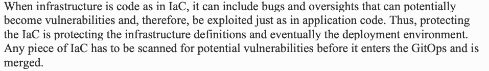
IaCのようにインフラストラクチャがコードである場合、アプリケーションコードと同様に、潜在的に脆弱性となり悪用される可能性のあるバグや見落としが含まれる可能性がある。したがって、IaCを保護することは、インフラストラクチャの定義、そして最終的にはデプロイ環境を保護することになる。IaCのいかなる部分も、GitOpsに入りマージされる前に、潜在的な脆弱性がないかスキャンする必要がある。
In addition, the assurance of a secure application platform can be obtained only if there is a methodical drift management process in place. This assurance can be obtained only if the architecture defined in IaC is what actually exists in the deployed environment since this equivalence could be altered by an inadvertent or intentional change made through a console or CLI – thus bypassing the IaC. Ensuring this equivalence has to be done immediately after deployment and periodically during runtime as any change to the architecture could result in the introduction of security design flaws and may require making changes to IaC.
さらに、セキュアなアプリケーションプラットフォームの保証は、整然としたドリフト管理プロセスが整備されている場合にのみ得ることができる。コンソールやCLIを通じて不注意または意図的な変更が行われ、IaCをバイパスすることでこの同等性が変化する可能性があるため、この保証は、IaCで定義されたアーキテクチャがデプロイされた環境に実際に存在するものと一致している場合にのみ得られる。アーキテクチャへのいかなる変更もセキュリティ設計上の欠陥の導入につながる可能性があり、IaCへの変更が必要になる場合があるため、この同等性の確保はデプロイ直後およびランタイム中に定期的に行う必要がある。
4.3.2 Distinction Between Configuration and Infrastructure
4.3.2 構成とインフラストラクチャの区別
Infrastructure is often confused with configuration [30], which maintains computer systems, software, dependencies, and settings in a desired, consistent state. For example, putting a newly purchased server onto a rack and connecting it to the switches so that it is connected to the existing networks (or launching a new virtual machine and assigning network interfaces to it) belongs to the definition of “infrastructure.” In contrast, after the server is launched, installing an HTTPS server and configuring it belongs to configuration management.
原本PDFの抜粋画像
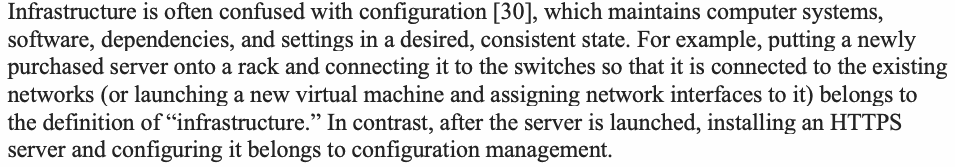
インフラストラクチャは、コンピュータシステム、ソフトウェア、依存関係、および設定を望ましい一貫した状態に維持する構成（コンフィギュレーション）[30]としばしば混同される。例えば、新しく購入したサーバーをラックに設置し、既存のネットワークに接続されるようスイッチに接続すること（または新しい仮想マシンを起動してネットワークインターフェースを割り当てること）は、「インフラストラクチャ」の定義に属する。対照的に、サーバーの起動後にHTTPSサーバーをインストールして設定することは、構成管理に属する。
4.4 CI/CD Pipeline for Policy as Code
4.4 Policy as CodeのためのCI/CDパイプライン
Policy as code involves codifying all policies and running them as part of the CI/CD pipeline so that they become an integral part of the application runtime. Examples of policy categories include authorization policies, networking policies, and implementation artifact policies (e.g., container policies). Policy management capabilities in a typical “policy as code software” may come with a set of predefined policy categories and policies and also support the definition of new policy categories and associated policies by providing policy templates [31]. The due diligence required for policy as code is that it should provide protection against all known threats that are relevant for the application environment including the infrastructure, and this can be ensured only if that code is periodically scanned and updated with appropriate changes to counter the threats relevant to the application class (e.g., web application) and the hosting infrastructure. Some examples of policy categories and associated policies are given in Table 1 below.
Policy as Code（コードとしてのポリシー）には、すべてのポリシーをコード化し、CI/CDパイプラインの一部として実行することで、それらがアプリケーションランタイムの不可欠な一部となるようにすることが含まれる。ポリシーカテゴリの例としては、認可ポリシー、ネットワークポリシー、実装アーティファクトポリシー（コンテナポリシーなど）が挙げられる。典型的な「Policy as Codeソフトウェア」におけるポリシー管理機能には、事前定義された一連のポリシーカテゴリおよびポリシーが付属している場合があり、またポリシーテンプレートを提供することによって新しいポリシーカテゴリおよび関連ポリシーの定義をサポートしている場合もある [31]。Policy as Codeに求められるデューデリジェンスは、インフラストラクチャを含むアプリケーション環境に関連するすべての既知の脅威に対する保護を提供すべきであるということであり、これは、そのコードが定期的にスキャンされ、アプリケーションクラス（Webアプリケーションなど）およびホスティングインフラストラクチャに関連する脅威に対抗するための適切な変更によって更新される場合にのみ確実なものとなる。ポリシーカテゴリおよび関連するポリシーのいくつかの例を、以下の表1に示す。
Table 1: Policy Categories and Example Policies
表1：ポリシーカテゴリとポリシーの例
| Policy Category | Example Policies |
|---|---|
| Networking policies and zero trust policies | • Blocking designated ports • Designating ingress host names • In general, all network access control policies |
| Implementation artifact policies (e.g., container policies) | • Hardening of servers, vulnerability scans for base images • Ensuring that containers do not run as root • Blocking privilege escalation for containers |
| Storage policies | • Set persistent volume sizes • Set persistent volume reclaim policies |
| Access control policies | • Ensure that policies cover all data objects • Ensure that policies cover all roles for administrative and application access • Ensure that data protection policies cover data at rest, data in transit, and data in use |
| ポリシーカテゴリ | ポリシーの例 |
|---|---|
| ネットワークポリシーおよびゼロトラストポリシー | • 指定されたポートのブロック • Ingressホスト名の指定 • 一般に、すべてのネットワークアクセス制御ポリシー |
| 実装アーティファクトポリシー（例：コンテナポリシー） | • サーバーのハードニング、ベースイメージの脆弱性スキャン • コンテナがrootとして実行されないことの確保 • コンテナの特権昇格のブロック |
| ストレージポリシー | • 永続ボリュームのサイズの設定 • 永続ボリュームの回収ポリシーの設定 |
| アクセス制御ポリシー | • ポリシーがすべてのデータオブジェクトを対象としていることの確保 • ポリシーが管理アクセスおよびアプリケーションアクセスのすべてのロールを対象としていることの確保 • データ保護ポリシーが保存データ、伝送中のデータ、使用中のデータを対象としていることの確保 |
| Policy Category | Example Policies |
|---|---|
| • Ensure that policies of all types do not have conflicts | |
| Supply chain policies | • Allow only approved container registries • Allow only certified libraries |
| Audit and accountability policies | • Ensure that there are policies associated with audit and accountability functions |
| ポリシーカテゴリ | ポリシーの例 |
|---|---|
| • すべてのタイプのポリシーに競合がないことの確保 | |
| サプライチェーンポリシー | • 承認されたコンテナレジストリのみを許可 • 認証されたライブラリのみを許可 |
| 監査および説明責任ポリシー | • 監査および説明責任機能に関連するポリシーが存在することの確保 |
The policies defined in the “policy as code software” may translate into the following in the application infrastructure runtime configuration parameters:
「Policy as Codeソフトウェア」で定義されたポリシーは、アプリケーションインフラストラクチャのランタイム構成パラメータにおいて、以下のようなものに変換される場合がある。
•Policy-enforcing executable (e.g., WASM in service proxies)
•ポリシーを強制する実行可能ファイル（例：サービスプロキシ内のWASM）
•Triggers for calling an external policy decision module (e.g., calling an external authorization server for an allow/deny decision based on the evaluation of access control policies relevant to the current access request)
•外部ポリシー決定モジュールを呼び出すためのトリガー（例：現在のアクセス要求に関連するアクセスコントロールポリシーの評価に基づいて許可/拒否の決定を行うために外部認可サーバを呼び出すこと）
•It may also impact the IaC to ensure that appropriate resources are provisioned in the deployment environment to enforce security, privacy, and compliance requirements.
•また、セキュリティ、プライバシー、およびコンプライアンスの要件を適用するために、デプロイ環境に適切なリソースがプロビジョニングされることを確実にするよう、IaCに影響を与える場合もある。
4.5 CI/CD Pipeline for Observability as Code
4.5 Observability as CodeのためのCI/CDパイプライン
Observability as code deploys a monitoring agent in each of the application’s service components to collect the three types of data (described in Section 4.1), send them to specialized tools that correlate them, perform analysis, and display the analyzed consolidated data on dashboards to present an overall application-level picture [32]. An example of such consolidated data are log patterns, which provide a view of log data that is presented after the log data are filtered using some criterion (e.g., a service or an event). The data are grouped into clusters based on common patterns (e.g., based on timestamp or range of IP addresses) for easy interpretation. Unusual occurrences are identified, and those findings can then be used to steer and accelerate further investigation [33].
Observability as codeでは、アプリケーションの各サービスコンポーネントに監視エージェントをデプロイして、3種類のデータ（セクション4.1で説明）を収集し、それらを関連付ける特殊なツールに送信して分析を実行し、分析された統合データをダッシュボードに表示してアプリケーションレベルの全体像を提示する[32]。このような統合データの例としてログパターンがあり、これは何らかの基準（例：サービスやイベント）を使用してログデータがフィルタリングされた後に提示されるログデータのビューを提供する。データは解釈を容易にするために、共通のパターン（例：タイムスタンプやIPアドレスの範囲に基づく）に基づいてクラスターにグループ化される。異常な発生が特定され、それらの調査結果はさらなる調査を導き加速するために使用できる[33]。
4.6 Securing the CI/CD Pipeline
4.6 CI/CDパイプラインの保護
There are some common implementation issues to be addressed for CI/CD pipelines irrespective of code type. Securing the processes involves the assignment of roles for operating the build tasks. Automation tools (e.g., Git Secrets) are available for this purpose. The following security tasks should be considered as a minimum for securing the CI/CD pipeline:
コードの種類に関係なく、CI/CDパイプラインで対処すべき一般的な実装上の課題がいくつかある。プロセスの保護には、ビルドタスクを操作するためのロールの割り当てが含まれる。この目的のために、自動化ツール（例：Git Secrets）が利用可能である。CI/CDパイプラインを保護するための最低限の事項として、以下のセキュリティタスクを検討する必要がある：
•Harden servers hosting code & artifact repositories
•コードおよびアーティファクトのリポジトリをホストするサーバーを堅牢化する
•Secure the credentials used for accessing repositories such as authorization tokens and for generating pull requests
•認可トークンなど、リポジトリへのアクセスやプルリクエストの生成に使用される認証情報を保護する
•Controls on who can check-in and check-out in container Image registries since they are the storage for artifacts produced by CI pipeline and serve as bridges between CI and CD pipelines
•コンテナイメージレジストリはCIパイプラインによって生成されたアーティファクトのストレージであり、CIパイプラインとCDパイプラインの間の橋渡しとして機能するため、誰がチェックインおよびチェックアウトできるかを制御する
•Logging all code and build update activities
•すべてのコードおよびビルド更新アクティビティのログ記録
•If build or test fails in CI pipeline - Send build reports to developers and stop further pipeline tasks. The code repositories should be configured to automatically block all pull requests from CD pipeline [34]
•CIパイプラインでビルドまたはテストが失敗した場合 - 開発者にビルドレポートを送信し、以降のパイプラインタスクを停止する。コードリポジトリは、CDパイプラインからのすべてのプルリクエストを自動的にブロックするように構成されるべきである[34]
•If audit fails – Send build reports to security team and stop further pipeline tasks
•監査が失敗した場合 – セキュリティチームにビルドレポートを送信し、以降のパイプラインタスクを停止する
•Ensuring that developers can only access the application code and not any of the five pipeline code types
•開発者がアプリケーションコードにのみアクセスでき、5つのパイプラインコードタイプのいずれにもアクセスできないようにすることの確保
•During the build and release process, signing the release artifact during each required CI/CD stage (preferably multi-party signing)
•ビルドおよびリリースプロセス中に、必要な各CI/CDステージでリリース成果物に署名すること（マルチパーティ署名が望ましい）
•During production release, verify that all required signatures (generated with multiple phase keys) are present to ensure that no one bypasses the pipeline.
•本番リリース時には、パイプラインを迂回する者がいないことを確実にするため、必要なすべての署名（複数のフェーズキーで生成されたもの）が存在することを検証する。
4.7 Workflow Models in CI/CD Pipelines
4.7 CI/CDパイプラインにおけるワークフローモデル
The next common issue involves workflow models. All CI/CD pipelines can have two types of workflow models, which depend on the automated tools that are deployed as part of the pipeline:
次の共通の課題はワークフローモデルに関するものである。すべてのCI/CDパイプラインには、パイプラインの一部としてデプロイされる自動化ツールに応じた2種類のワークフローモデルが存在し得る。
1.Push-based model
1.プッシュ型モデル
2.Pull-based model
2.プル型モデル
In the CI/CD tools that support the push-based model, changes made in one stage or phase of the pipeline trigger changes in the subsequent stages and phases. For example, through a series of encoded scripts, the new builds in the CI system trigger changes to the CD portion of the pipeline and thus change the deployment infrastructure (e.g., Kubernetes cluster). The security downside of using the CI system as the basis for change in deployments is the possibility of exposing credentials outside of the deployment environment in spite of best efforts to secure the CI scripts, which operate outside of the trusted domain of the deployment infrastructure. Since CD tools have the keys to production systems, push-based models are rendered insecure.
プッシュ型モデルをサポートするCI/CDツールでは、パイプラインのあるステージまたはフェーズで行われた変更が、後続のステージやフェーズの変更をトリガーする。例えば、一連のコード化されたスクリプトを介して、CIシステムにおける新しいビルドがパイプラインのCD部分への変更をトリガーし、それによってデプロイメントインフラストラクチャ（例：Kubernetesクラスタ）が変更される。デプロイメントの変更の起点としてCIシステムを使用することのセキュリティ上の欠点は、デプロイメントインフラストラクチャの信頼されたドメインの外側で動作するCIスクリプトを保護するための最善の努力にもかかわらず、デプロイメント環境の外部に認証情報が漏洩する可能性がある点である。CDツールは本番環境のキーを持っているため、プッシュ型モデルは安全ではなくなる。
In a pull-based workflow model, an operator that pertains to the deployment environment (e.g., Kubernetes Operator, Flux, ArgoCD) pulls new images from inside of the environment as soon as the operator observes that a new image has been pushed to the registry. The new image is pulled from the registry, the deployment manifest is automatically updated, and the new image is deployed in the environment (e.g., cluster). Thus, the convergence of the actual deployment infrastructure state with the state declaratively described in the Git deployment repository is achieved. Additionally, the deployment environment credentials (e.g., cluster credentials) are not exposed outside of the production environment. Therefore, a pull-based model, which typically uses a GitOps repository for storing the source code and builds, is highly recommended.
プル型ワークフローモデルでは、デプロイメント環境に関連するオペレータ（例：Kubernetes Operator、Flux、ArgoCD）が、新しいイメージがレジストリにプッシュされたことを検知すると直ちに環境内部から新しいイメージをプルする。新しいイメージがレジストリからプルされ、デプロイメントマニフェストが自動的に更新され、環境内（例：クラスタ）に新しいイメージがデプロイされる。これにより、実際のデプロイメントインフラストラクチャの状態と、Gitデプロイメントリポジトリ内で宣言的に記述された状態とのコンバージェンス（収束）が達成される。さらに、デプロイメント環境の認証情報（例：クラスタ認証情報）が本番環境の外部に公開されることはない。したがって、ソースコードやビルドの保存に通常GitOpsリポジトリを使用するプル型モデルが強く推奨される。
4.7.1 GitsOps Workflow Model for CI/CD – A Pull-based Model
4.7.1 CI/CDのためのGitsOpsワークフローモデル – プル型モデル
The GitOps workflow model is an improvement on the CI/CD pipeline (for the delivery portion of the pipeline), which uses a pull-based workflow model instead of the push-based model supported by many CI/CD tools. In this model, the CI portion of the pipeline is unchanged since the CI engine (e.g., Jenkins, GitLab CI) is still used for creating builds for the changed code, regression testing, and integrating/merging with the main source code in the relevant repositories, though it is not used to trigger continuous delivery (push updates directly) in the pipeline. Instead, a separate GitOps operator manages the deployment based on updates to the main (trunk) code.
GitOps ワークフローモデルは、CI/CDパイプライン（パイプラインのデリバリー部分）を改善したものであり、多くのCI/CDツールがサポートするプッシュ型のモデルではなく、プル型のワークフローモデルを用いる。このモデルでは、パイプラインのCI部分は変更されない。CIエンジン（例：Jenkins、GitLab CI）が、変更されたコードのビルド作成、リグレッションテスト、関連リポジトリ内のメインソースコードとの統合／マージに引き続き用いられるためである。ただし、CIエンジンは、パイプラインにおける継続的デリバリーのトリガー（更新の直接プッシュ）には用いられない。代わりに、別個の GitOps オペレーターが、メイン（トランク）コードへの更新に基づいてデプロイを管理する。
An operator (e.g., Flux, ArgoCD) is an actor managed by an orchestration platform and can inherit the cluster’s configuration, security, and availability. The use of this actor improves security because an agent that lives inside of the cluster listens for updates to all code and image repositories that it is allowed to access and pulls images and configuration updates into the cluster. The pull approach used by the agent has the following security features:
オペレータ（例：Flux、ArgoCD）はオーケストレーションプラットフォームによって管理されるアクターであり、クラスタの構成、セキュリティ、および可用性を継承することができる。クラスタの内部に常駐するエージェントが、アクセスを許可されたすべてのコードリポジトリおよびイメージリポジトリの更新をリッスンし、イメージと構成の更新をクラスタ内にプルするため、このアクターの使用によりセキュリティが向上する。エージェントによって使用されるプルアプローチには、以下のセキュリティ上の特徴がある。
•ONLY carry out operations permitted by authorization policies defined in the orchestration platform; trust is shared with the cluster and not managed separately
原本PDFの抜粋画像
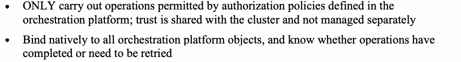
•オーケストレーションプラットフォームで定義された認可ポリシーによって許可された操作のみを実行すること。信頼はクラスタと共有され、個別に管理されることはない
•Bind natively to all orchestration platform objects, and know whether operations have completed or need to be retried
•すべてのオーケストレーションプラットフォームオブジェクトにネイティブにバインドし、操作が完了したか、あるいは再試行が必要かを把握すること
4.8 Security Testing – Common Requirement for CI/CD Pipelines for All Code Types
4.8 セキュリティテスト – すべてのコードタイプ向けCI/CDパイプラインの共通要件
The last common issue is security testing. Whatever the code type is (e.g., application service, Iac, Pac or observability), the CI/CD pipelines of DevSecOps for microservices-based infrastructure with service mesh should include application security testing (AST) enabled by either automated tools or offered as a service. These tools analyze and test applications for security vulnerabilities. According to Gartner, there are four main AST technologies [35]:
最後の共通課題はセキュリティテストである。コードタイプ（例：アプリケーションサービス、Iac、Pac、または可観測性）が何であれ、サービスメッシュを備えたマイクロサービスベースのインフラストラクチャ向けDevSecOpsのCI/CDパイプラインには、自動化ツールによって有効化されるか、またはサービスとして提供されるアプリケーションセキュリティテスト（AST）を含めるべきである。これらのツールは、セキュリティ脆弱性についてアプリケーションを分析およびテストする。Gartnerによると、主に4つのAST技術が存在する [35]:
1.Static AST (SAST) tools – Analyze an application’s source, bytecode, or binary code for security vulnerabilities, typically at the programming and/or testing software life cycle (SLC) phases. Specifically, this technology involves techniques that look through the application in a commit and analyze its dependencies [36]. If any dependencies contain issues or known security vulnerabilities, a commit will be marked as insecure and will not be allowed to proceed to deployment. This can also include finding hardcoded passwords/secrets in code that should be removed.
1.静的AST（SAST）ツール – 通常、プログラミングおよび／またはテストのソフトウェアライフサイクル（SLC）フェーズにおいて、セキュリティ脆弱性についてアプリケーションのソースコード、バイトコード、またはバイナリコードを分析する。具体的には、この技術にはコミット内のアプリケーションを精査し、その依存関係を分析する手法が含まれる [36]。依存関係に問題や既知のセキュリティ脆弱性が含まれている場合、コミットは安全でないとマークされ、デプロイへの移行は許可されない。これには、削除すべきコード内のハードコードされたパスワード／シークレットの検出も含まれ得る。
2.Dynamic AST (DAST) tools – Analyze applications in their dynamic, running state during testing or operational phases. They simulate attacks against an application (typically web-enabled applications, services, and APIs), analyze the application’s reactions, and determine whether it is vulnerable. In particular, DAST tools go one step further than SAST and spin up a copy of the production environment inside the CI job in order to scan the resulting containers and executables [36]. The dynamic aspect helps the system catch dependencies that are being loaded at launch time, such as those that would not be caught by SAST.
2.動的AST（DAST）ツール – テストフェーズまたは運用フェーズ中に、動的で実行中の状態にあるアプリケーションを分析する。これらはアプリケーション（通常はWeb対応アプリケーション、サービス、API）に対する攻撃をシミュレートし、アプリケーションの反応を分析して脆弱であるかどうかを判断する。特に、DASTツールはSASTより一歩進んで、結果として得られるコンテナや実行可能ファイルをスキャンするために、CIジョブ内で本番環境のコピーを起動する [36]。動的な側面は、SASTでは検出されないような起動時にロードされる依存関係をシステムが捕捉するのに役立つ。
3.Interactive AST (IAST) tools – Combine elements of DAST with the instrumentation of the application under test. They are typically implemented as an agent within the test runtime environment (e.g., instrumenting the Java Virtual Machine [JVM] or .NET CLR) that observes operations or identifies and attacks vulnerabilities.
3.インタラクティブAST（IAST）ツール – DASTの要素とテスト対象アプリケーションのインスツルメンテーションを組み合わせたものである。これらは通常、操作を監視するか、あるいは脆弱性を特定して攻撃するテストランタイム環境内のエージェント（例：Java Virtual Machine [JVM] または .NET CLRのインスツルメンテーション）として実装される。
4.Software composition analysis (SCA) tools – Used to identify open-source and third-party components in use in an application, their known security vulnerabilities, and typically adversarial license restrictions.
4.ソフトウェア構成分析（SCA）ツール – アプリケーションで使用されているオープンソースコンポーネントおよびサードパーティコンポーネント、それらの既知のセキュリティ脆弱性、および通常は不利となるライセンス制限を特定するために使用される。
4.8.1 Functional and Coverage Requirements for AST tools
4.8.1 ASTツールの機能要件およびカバレッジ要件
In general, the overall metrics that testing tools (including the specific class of AST tools) should satisfy are [37]:
一般に、テストツール（ASTツールの特定のクラスを含む）が満たすべき全体的な指標は以下の通りである[37]：
•Increase the quality of application releases by identifying security, privacy, and compliance gaps.
•セキュリティ、プライバシー、コンプライアンスのギャップを特定することで、アプリケーションリリースの品質を向上させる。
•Integrate with the tools that developers are already using.
•開発者が既に使用しているツールと統合する。
•Be as few test tools as possible but provide the necessary coverage risk.
•テストツールの数を可能な限り少なくしつつ、リスクに応じて必要なテスト範囲を確保する。
•Lower-level unit tests at the API and microservices level should have sufficient visibility to determine coverage.
原本PDFの抜粋画像
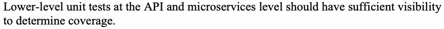
•APIおよびマイクロサービスレベルにおける下位レベルの単体テストは、カバレッジを判定するのに十分な可視性を備えるべきである。
•Include higher-level UI/UX and system tests.
•より上位レベルのUI/UXテストおよびシステムテストを含める。
•Have deep code analysis capabilities to detect runtime flaws.
•ランタイムの欠陥を検出するための高度なコード分析機能を備える。
•Increase the speed at which the releases can be done.
•リリースを実施できる速度を向上させること。
•Be cost-efficient.
•費用対効果が高いこと。
The functional requirements for AST tools in particular include performing the following types of scans [35]:
特にASTツールの機能要件には、以下のタイプのスキャンの実行が含まれる [35]：
•Vulnerability scans: Probe applications for security weaknesses that could expose them to attacks.
•脆弱性スキャン：攻撃にさらされる可能性のあるセキュリティ上の弱点についてアプリケーションを精査する。
•Container image scans: Analyze the contents and build process of a container image in order to detect security issues, vulnerabilities, or deficient practices (e.g., hardcoded passwords/secrets)
•コンテナイメージスキャン：セキュリティ上の問題、脆弱性、または不十分なプラクティス（例：ハードコードされたパスワード／シークレット）を検出するために、コンテナイメージのコンテンツおよびビルドプロセスを分析する。
•Regulatory/compliance scans: Assess adherence to specific compliance requirements.
•規制／コンプライアンススキャン：特定のコンプライアンス要件への準拠状況を評価する。
The vulnerability scans are to be performed whenever the code in the source code repository is revised to ensure that the current revision does not contain any vulnerable dependencies [38].
脆弱性スキャンは、現在のリビジョンに脆弱な依存関係が含まれていないことを確実にするために、ソースコードリポジトリ内のコードが改訂されるたびに実行されるものとする [38]。
The desirable features of AST tools and/or services, along with techniques for behavioral analysis, are [35]:
振る舞い分析の手法とともに、ASTツールおよび／またはサービスの望ましい機能は以下のとおりである [35]：
•Analyze source, byte, or binary code
•ソースコード、バイトコード、またはバイナリコードを分析する
•Observe the behavior of apps to identify coding, design, packaging, deployment, and runtime conditions that introduce security vulnerabilities.
•アプリケーションの振る舞いを観察し、セキュリティ脆弱性をもたらすコーディング、設計、パッケージング、デプロイメント、およびランタイムの状態を特定する。
Scanning application code for security vulnerabilities and misconfiguration as part of CI/CD pipeline tasks should involve the following artifacts:
原本PDFの抜粋画像
CI/CDパイプラインタスクの一環として、セキュリティ脆弱性や構成ミスがないかアプリケーションコードをスキャンする作業には、以下のアーティファクトを含めるべきである。
•Container images should be scanned for vulnerabilities.
•コンテナイメージは脆弱性がないかスキャンされるべきである。
•After the container is built from a base-image (that is scanned as stated above), the container’s file system should be scanned for both vulnerabilities and misconfigurations.
原本PDFの抜粋画像
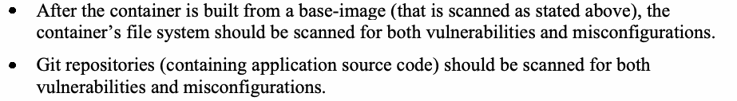
•（上述のとおりスキャンされた）ベースイメージからコンテナが構築された後、コンテナのファイルシステムは脆弱性と構成ミスの両方についてスキャンすべきである。
•Git repositories (containing application source code) should be scanned for both vulnerabilities and misconfigurations.
•（アプリケーションソースコードを含む）Gitリポジトリは、脆弱性と構成ミスの両方についてスキャンすべきである。
Container images include OS packages (e.g., Alpine, UBI, RHEL, CentOS, etc.) and language-specific packages (e.g., Bundler, Composer, npm, yarn, etc.).
原本PDFの抜粋画像
コンテナイメージには、OSパッケージ（例：Alpine、UBI、RHEL、CentOSなど）および言語固有のパッケージ（例：Bundler、Composer、npm、yarnなど）が含まれる。
Scanning infrastructure as code for security vulnerabilities reduces the operations workload by preventing those vulnerabilities from making it to production, although it cannot replace checking for runtime security since the risk of drift will always exist. However, the reasons for all post-deployment (runtime) changes to the architecture (due to drift) must be analyzed and addressed by pushing appropriate updates to the IaC so that it becomes part of the pipeline and does not reoccur in subsequent deployments. This approach facilitates the use of runtime checks for remediating security design flaws.
Infrastructure as Code をセキュリティ脆弱性についてスキャンすることは、それらの脆弱性が本番環境に到達するのを防ぐことで運用の負荷を軽減する。ただし、ドリフトのリスクは常に存在するため、ランタイムのセキュリティ検査に取って代わることはできない。しかし、（ドリフトによる）デプロイ後（ランタイム）のアーキテクチャへのあらゆる変更の理由は分析し、適切な更新をIaCにプッシュして対処しなければならない。これにより、その変更がパイプラインの一部となり、以降のデプロイで再発しないようにする。このアプローチは、セキュリティ設計上の欠陥を修復するためのランタイム検査の利用を促進する。
Infrastructure as Code（IaC）ファイルは、以下の場所で見つけることができる。
•The container orchestration platform itself to facilitate deployments (e.g., Kubernetes YAML infrastructure-as-code files).
原本PDFの抜粋画像
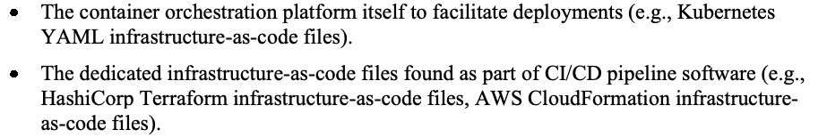
•デプロイメントを容易にするコンテナオーケストレーションプラットフォーム自体（例：Kubernetes の YAML Infrastructure as Code ファイル）。
•The dedicated infrastructure-as-code files found as part of CI/CD pipeline software (e.g., HashiCorp Terraform infrastructure-as-code files, AWS CloudFormation infrastructure-as-code files).
•CI/CDパイプラインソフトウェアの一部として存在する専用の Infrastructure as Code ファイル（例：HashiCorp Terraform の Infrastructure as Code ファイル、AWS CloudFormation の Infrastructure as Code ファイル）。
Application services code, policy-as-code, and observability-as-code files can be found in the data plane and control plane components of the dedicated application services component (e.g., service mesh) and should be scanned for both security vulnerabilities (e.g., information leakage in authorization policies) and misconfiguration.
原本PDFの抜粋画像
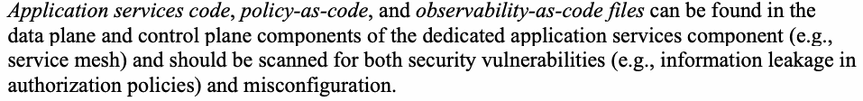
アプリケーションサービスコード、Policy as Code、およびObservability as Codeのファイルは、専用アプリケーションサービスコンポーネント（例：サービスメッシュ）のデータプレーンおよびコントロールプレーンコンポーネントで見つけることができ、セキュリティ脆弱性（例：認可ポリシーにおける情報漏えい）と設定ミスの両方についてスキャンされるべきである。
4.9 Benefits of DevSecOps Primitives to Application Security in the Service Mesh
4.9 サービスメッシュにおけるアプリケーションセキュリティに対するDevSecOpsプリミティブの利点
The benefits of DevSecOps include:
DevSecOpsの利点には以下が含まれる。
•Better communication and collaboration between various IT teams especially between developers, operations and security teams and other stakeholders. Results in better productivity [39]
•さまざまなITチーム間、特に開発者、運用チーム、セキュリティチーム、およびその他のステークホルダー間のコミュニケーションとコラボレーションの向上。生産性の向上をもたらす [39]
•Streamlined software development, delivery and deployment process – less downtime, faster time to market and lower infrastructure & operational costs and efficiency due to automation [39]
•合理化されたソフトウェア開発、配信、およびデプロイメントプロセス – ダウンタイムの短縮、市場投入期間（time to market）の短縮、ならびに自動化によるインフラストラクチャおよび運用コストの削減と効率化 [39]
•• Reduction of attack surfaces by implementing zero trust which also restricts lateral movement and thus prevents attack escalation. This is further facilitated by continuous monitoring with modern behavior prevention capabilities.
原本PDFの抜粋画像
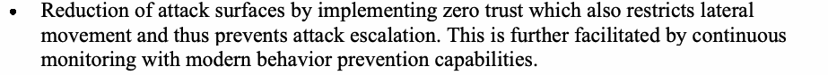
•• ラテラルムーブメント（水平移動）を制限し、攻撃のエスカレーションを防止するゼロトラストの実装によるアタックサーフェス（攻撃対象領域）の削減。これは、最新の振る舞い防止機能を備えた継続的モニタリングによってさらに促進される。
•Security Benefits: Better security through validation of every request monitoring, alerts and feedback mechanisms because of Observability as code. These are described in more detailed in the following paragraphs. Specific capabilities include:
•セキュリティ上の利点：Observability as Code によるすべてのリクエストの検証、監視、アラート、フィードバックの仕組みを通じて、より優れたセキュリティが実現される。これらの仕組みについては、以下の段落でさらに詳しく説明する。具体的な機能には次のものがある。
(a).Runtime - Killing a malicious container
(a).ランタイム – 悪意のあるコンテナの強制終了
(b).Feedback - to the right repository due to an errant program to update code and re-trigger the pipelines
(b).フィードバック – 誤りのあるプログラムを原因として、コードを更新しパイプラインを再トリガーするために、適切なリポジトリへフィードバックする。
(c).Monitor new and terminated services and adjust associated services (e.g., service proxy)
(c).新規および終了したサービスを監視し、関連するサービス（例：サービスプロキシ）を調整する。
(d).Enable Security assertions: - Non-bypassable – by proxies executing in same space, secure sessions, robust authentication & authorization and secure state transitions
(d).セキュリティアサーションの有効化：- 非バイパス可能 – 同一空間で実行されるプロキシ、セキュアなセッション、堅牢な認証および認可、セキュアな状態遷移
•Enable Continuous Authorization to operate (C-ATO) described in detail at the end of this section
•このセクションの最後で詳細に説明する継続的運用許可（Continuous Authorization to Operate: C-ATO）の実現
Validation of each request and the feedback mechanisms mentioned above are further described below:
上記のリクエストごとの検証およびフィードバックメカニズムについて、以下でさらに詳しく説明する。
•Validation of every request: Every request from a user or client application (service) is authenticated and authorized (using mechanisms such as OPA or any external authorization engine or admission controllers [40] that are integral parts of the platform). While authorization engines provide application domain-specific policy enforcement, admission controllers provide platform-specific policy relating to end-point objects of a specific platform (e.g., pods, deployment, namespaces). Specifically, admission controllers mutate and validate. Mutating admission controllers parse each request and make changes to the request (mutate) before forwarding it down the chain. An example is setting default values for specifications that are not set by a user in the request so as to ensure that workloads running on the cluster are uniform and follow a particular standard defined by the cluster administrator. Another example is adding a specific resource limit for the pod (if the resource limits are not set for that pod) and then forwarding it down the chain (mutate the request by adding this field if it is not present in the request). By doing so, all of the pods in the cluster will always have a resource limit set according to a specification unless explicitly stated. Validating admission controllers reject requests that do not follow a particular specification. For example, none of the pod requests can have security context set to run as root user [40].
•すべてのリクエストの検証：ユーザーまたはクライアントアプリケーション（サービス）からのすべてのリクエストは、（OPA、外部の任意の認可エンジン、またはプラットフォームに不可欠な構成要素であるアドミッションコントローラー [40] などの仕組みを用いて）認証および認可される。認可エンジンはアプリケーションドメイン固有のポリシー適用を提供するのに対し、アドミッションコントローラーは、特定のプラットフォームのエンドポイントオブジェクト（例：Pod、デプロイメント、名前空間）に関するプラットフォーム固有のポリシーを提供する。具体的には、アドミッションコントローラーは変更と検証を行う。変更を行うアドミッションコントローラーは、各リクエストを解析し、チェーンの下流に転送する前にリクエストに変更を加える（変更する）。たとえば、ユーザーがリクエストで設定していない仕様にデフォルト値を設定し、クラスター上で実行されるワークロードが均一で、クラスター管理者が定めた特定の標準に従うようにすることがある。別の例として、（Pod にリソース制限が設定されていない場合に）その Pod に特定のリソース制限を追加してからチェーンの下流に転送する（このフィールドがリクエストに存在しなければ追加することでリクエストを変更する）ことがある。これにより、明示的に指定されない限り、クラスター内のすべての Pod には、常に仕様に従ってリソース制限が設定される。検証を行うアドミッションコントローラーは、特定の仕様に従わないリクエストを拒否する。たとえば、どの Pod のリクエストも、セキュリティコンテキストを root ユーザーとして実行するように設定することはできない [40]。
•Feedback mechanisms:
•フィードバックメカニズム：
•Some remediation for issues discovered at runtime may have to be handled or fixed at the source code. There should be a process for automatically opening an issue against the right code repository to fix the problem and re-trigger the DevSecOps pipeline.
•ランタイムで発見された問題の一部の是正は、ソースコードで対処または修正しなければならない場合がある。問題を修正し、DevSecOpsパイプラインを再トリガーするために、適切なコードリポジトリに対して自動的に課題（issue）を起票するプロセスがあるべきである。
•Provide feedback loops to the application-hosting platform (e.g., a notification to kill a pod that contains a malicious container).
•アプリケーションをホストするプラットフォームにフィードバックループを提供する（例：悪意のあるコンテナを含む Pod を終了させる通知）。
•Provide proactive dynamic security by monitoring application configuration (e.g., monitoring new pods/containers introduced into the application and generating and injecting proxies to take care of their secure communication needs).
•アプリケーションの構成を監視することで、先回りした動的なセキュリティを提供する（例：アプリケーションに追加された新しい Pod／コンテナを監視し、そのセキュアな通信のニーズに対応するプロキシを生成して注入する）。
•Enable several security assertions regarding the application: non-bypassable (i.e., policies always enforced under all usage scenarios), trusted and untrusted portions of the overall application code, absence of credential and privilege leaks, trusted communication paths, and secure state transitions.
•アプリケーションに関するいくつかのセキュリティ表明を可能にする。すなわち、バイパス不可能性（すなわち、あらゆる利用シナリオでポリシーが常に実施される）、アプリケーションコード全体のうち信頼できる部分と信頼できない部分、クレデンシャルや特権の漏えいがないこと、信頼できる通信経路、およびセキュアな状態遷移である。
•Enable assertions regarding performance parameters (e.g., network resilience parameters, such as continued operation under failures, redundancy, and recoverability features).
•性能パラメータ（例: 障害時の継続的な動作、冗長性、回復可能性の機能といった、ネットワークレジリエンスのパラメータ）に関する表明を可能にする。
•Overall, faster incorporation of feedback, results in quicker software improvements
•全体として、フィードバックをより迅速に取り込むことで、ソフトウェアの改善がより早くなる
4.10 Leveraging DevSecOps for Continuous Authorization to Operate (C-ATO)
4.10 継続的運用権限付与（C-ATO）に向けたDevSecOpsの活用
In the reference platform, the runtime status or execution state of the entire application system is due to a combination of executions of infrastructure code (e.g., networking routes for inter-service communication, resources provisioning code), policy code (e.g., code that specifies authentication and authorization policies), and session management code (e.g., code that establishes an mTLS session, code that generates JWT tokens) as revealed by the execution of observability as code. The observability as code of the service mesh relays the output from the execution of infrastructure, policy, and session management codes during runtime to various monitoring tools that generate applicable metrics and log aggregation tools and tracing tools, which in turn relay their output to a centralized dashboard. The analytics that are integral to the output of these tools enable system administrators to obtain a comprehensive global view of the runtime status of the entire application system. It is the runtime performance of a DevSecOps platform enabled through continuous monitoring with zero trust design features that provides all of the necessary security assurance for cloud-native applications.
リファレンスプラットフォームでは、Observability as Code の実行によって明らかになるとおり、アプリケーションシステム全体の実行時の状態または実行状態は、インフラストラクチャコード（例: サービス間通信のためのネットワークルート、リソースプロビジョニングコード）、ポリシーコード（例: 認証・認可ポリシーを指定するコード）、およびセッション管理コード（例: mTLSセッションを確立するコード、JWTトークンを生成するコード）の実行の組合せによるものである。サービスメッシュの Observability as Code は、実行時のインフラストラクチャコード、ポリシーコード、セッション管理コードの実行による出力を、該当するメトリクスを生成するさまざまな監視ツール、ログ集約ツール、およびトレーシングツールに中継し、これらのツールがその出力を一元化されたダッシュボードに中継する。これらのツールの出力に組み込まれている分析により、システム管理者はアプリケーションシステム全体の実行時の状態を包括的に俯瞰できる。クラウドネイティブアプリケーションに必要なすべてのセキュリティ保証を提供するのは、ゼロトラスト設計の特徴を備えた継続的監視によって実現されるDevSecOpsプラットフォームの実行時のパフォーマンスである。
The activities in the DevSecOps pipelines that enable continuous ATO are:
継続的ATOを可能にするDevSecOpsパイプラインにおけるアクティビティは以下の通りである：
•Checking for compliant code: The following codes can be checked for compliance with a Risk Management Framework
•準拠コードの確認: 次のコードについて、Risk Management Frameworkへの準拠を確認できる
(a).IaC – Generate network routes, Resource provisioning
(a).IaC – ネットワークルートの生成、リソースのプロビジョニング
(b).Policy as Code – Encodes AuthN and AuthZ policies
(b).Policy as Code – 認証（AuthN）ポリシーと認可（AuthZ）ポリシーをエンコードする
(c).Session Management Code – mTLS session, JWT tokens
(c).セッション管理コード – mTLSセッション、JWTトークン
(d).Observability code
(d).Observability コード
Specific risk assessment features include the capability to generate actionable tasks, specify code-level guidance, and test plans for verifying compliance [38]. In addition, risk assessment tools can provide complete traceability for all of the artifacts displayed in the dashboard, as well as the reporting capabilities needed for continuous ATO.
具体的なリスク評価の機能には、実行可能なタスクを生成し、コードレベルのガイダンスと準拠を検証するためのテスト計画を指定する機能が含まれる [38]。さらに、リスク評価ツールは、ダッシュボードに表示されるすべてのアーティファクトに対する完全なトレーサビリティと、継続的なATOに必要な報告機能を提供できる。
•Dashboard that displays runtime status: Provides alerts and feedback necessary to fix security and performance bottleneck issues (that impact availability) by the process that triggers new pipelines. In addition, dashboard generation tools have features that enable system administrators to analyze macro-level features, as well as dynamically change the composition of the artifacts to be displayed based on the evolving system and consumer needs of the environment in which the application operates.
•ランタイムステータスを表示するダッシュボード：新しいパイプラインをトリガーするプロセスによって、（可用性に影響を与える）セキュリティおよびパフォーマンスのボトルネック問題を修正するために必要なアラートとフィードバックを提供する。さらに、ダッシュボード生成ツールには、システム管理者がマクロレベルの機能を分析できるようにする機能や、アプリケーションが動作する環境の進化するシステムおよびコンシューマのニーズに基づいて、表示される成果物の構成を動的に変更できるようにする機能が備わっている。
5 Summary and Conclusion
5 まとめと結論
This document provides comprehensive guidance for the implementation of DevSecOps primitives for a reference platform hosting a cloud-native application. It includes an overview of the reference platform and describes the basic DevSecOps primitives (i.e., CI/CD pipelines), its building blocks, the design and execution of the pipelines, and the role of automation in the efficient execution of workflows in CI/CD pipelines.
本書は、クラウドネイティブアプリケーションをホストするリファレンスプラットフォーム向けに、DevSecOpsプリミティブの実装に関する包括的なガイダンスを提供する。これには、リファレンスプラットフォームの概要が含まれ、基本的なDevSecOpsプリミティブ（すなわちCI/CDパイプライン）、その構成要素、パイプラインの設計と実行、ならびにCI/CDパイプラインにおけるワークフローの効率的な実行における自動化の役割について説明している。
The architecture of the reference platform – in addition to the application code and the code for providing application services – consists of functional elements for infrastructure, runtime policies, and continuous monitoring of the health of the application, which can be deployed through declarative codes with separate CI/CD pipelines types. The runtime behaviors of these codes, the benefits of the implementation for high-assurance security, and the use of the artifacts within the pipelines for providing a continuous authority to operate (C-ATO) using risk management tools and dashboard metrics are also described.
リファレンスプラットフォームのアーキテクチャは、アプリケーションコードおよびアプリケーションサービスを提供するためのコードに加えて、インフラストラクチャ、ランタイムポリシー、およびアプリケーションの健全性を継続的に監視するための機能要素で構成されており、これらは別個のCI/CDパイプラインタイプを持つ宣言型コードを通じて展開できる。また、これらのコードのランタイム動作、高保証セキュリティの実装による利点、ならびにリスク管理ツールとダッシュボードメトリクスを使用して継続的運用認可（C-ATO）を提供するためのパイプライン内でのアーティファクトの使用についても説明している。
References
参考文献
[1] Rose S, Borchert O, Mitchell S, Connelly S (2020) Zero Trust Architecture. (National Institute of Standards and Technology, Gaithersburg, MD), NIST Special Publication (SP) 800-207. https://doi.org/10.6028/NIST.SP.800-207
[1] Rose S, Borchert O, Mitchell S, Connelly S (2020) Zero Trust Architecture. (National Institute of Standards and Technology, Gaithersburg, MD), NIST Special Publication (SP) 800-207. https://doi.org/10.6028/NIST.SP.800-207
[2] Garrison J, Nova K (2017) Cloud Native Infrastructure (oreilly.com). Available at https://www.oreilly.com/library/view/cloud-native-infrastructure/9781491984291/
原本PDFの抜粋画像
[2] Garrison J, Nova K (2017) Cloud Native Infrastructure (oreilly.com). 次で入手可能：https://www.oreilly.com/library/view/cloud-native-infrastructure/9781491984291/
[3] Federal News Network (2021) Expert Edition – DevSecOps. Available at https://federalnewsnetwork.com/wp-content/uploads/2021/12/120821_Expert-Edition_DevSecOps.pdf
[3] Federal News Network (2021) Expert Edition – DevSecOps. 入手先: https://federalnewsnetwork.com/wp-content/uploads/2021/12/120821_Expert-Edition_DevSecOps.pdf
[4] Chandramouli R (2019) Security Strategies for Microservices-based Application Systems. (National Institute of Standards and Technology, Gaithersburg, MD), NIST Special Publication (SP) 800-204. https://doi.org/10.6028/NIST.SP.800-204
[4] Chandramouli R (2019) Security Strategies for Microservices-based Application Systems. (National Institute of Standards and Technology, Gaithersburg, MD), NIST Special Publication (SP) 800-204. https://doi.org/10.6028/NIST.SP.800-204
[5] Chandramouli R, Butcher Z (2020) Building Secure Microservices-based Applications Using Service-Mesh Architecture. (National Institute of Standards and Technology, Gaithersburg, MD), NIST Special Publication (SP) 800-204A. https://doi.org/10.6028/NIST.SP.800-204A
原本PDFの抜粋画像
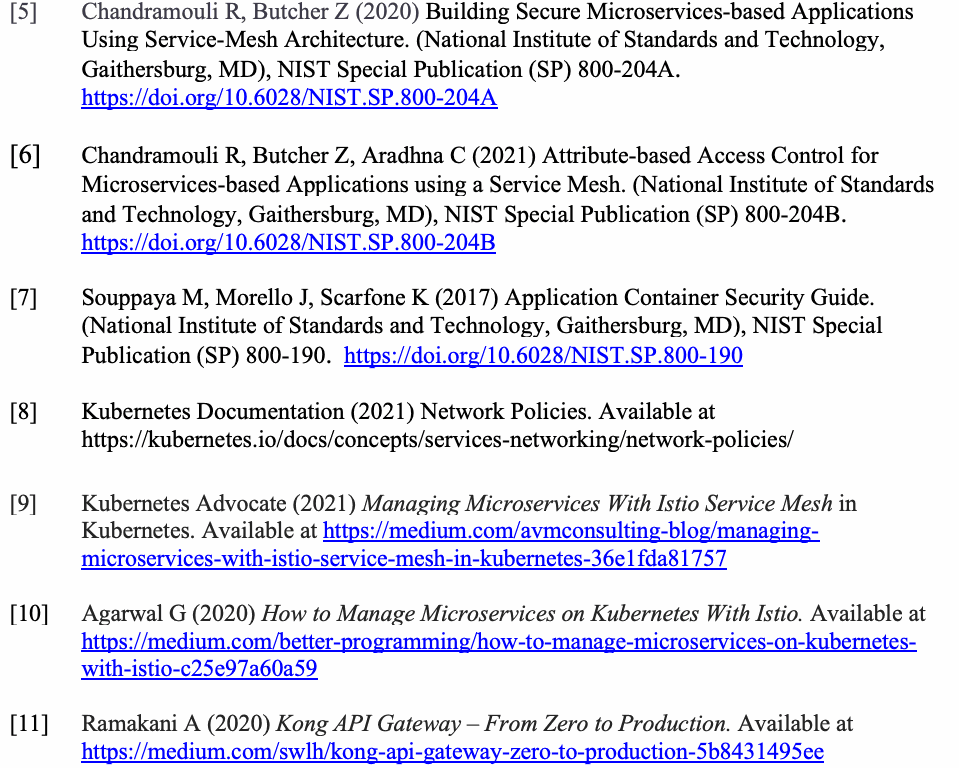
[5] Chandramouli R, Butcher Z (2020) Building Secure Microservices-based Applications Using Service-Mesh Architecture. (National Institute of Standards and Technology, Gaithersburg, MD), NIST Special Publication (SP) 800-204A. https://doi.org/10.6028/NIST.SP.800-204A
[6] Chandramouli R, Butcher Z, Aradhna C (2021) Attribute-based Access Control for Microservices-based Applications using a Service Mesh. (National Institute of Standards and Technology, Gaithersburg, MD), NIST Special Publication (SP) 800-204B. https://doi.org/10.6028/NIST.SP.800-204B
[6] Chandramouli R, Butcher Z, Aradhna C (2021) Attribute-based Access Control for Microservices-based Applications using a Service Mesh. (National Institute of Standards and Technology, Gaithersburg, MD), NIST Special Publication (SP) 800-204B. https://doi.org/10.6028/NIST.SP.800-204B
[7] Souppaya M, Morello J, Scarfone K (2017) Application Container Security Guide. (National Institute of Standards and Technology, Gaithersburg, MD), NIST Special Publication (SP) 800-190. https://doi.org/10.6028/NIST.SP.800-190
[7] Souppaya M, Morello J, Scarfone K (2017) Application Container Security Guide. (National Institute of Standards and Technology, Gaithersburg, MD), NIST Special Publication (SP) 800-190. https://doi.org/10.6028/NIST.SP.800-190
[8] Kubernetes Documentation (2021) Network Policies. Available at https://kubernetes.io/docs/concepts/services-networking/network-policies/
[8] Kubernetes Documentation (2021) Network Policies. 入手先: https://kubernetes.io/docs/concepts/services-networking/network-policies/
[9] Kubernetes Advocate (2021) Managing Microservices With Istio Service Mesh in Kubernetes. Available at https://medium.com/avmconsulting-blog/managing-microservices-with-istio-service-mesh-in-kubernetes-36e1fda81757
[9] Kubernetes Advocate (2021) Managing Microservices With Istio Service Mesh in Kubernetes. 入手先: https://medium.com/avmconsulting-blog/managing-microservices-with-istio-service-mesh-in-kubernetes-36e1fda81757
[10] Agarwal G (2020) How to Manage Microservices on Kubernetes With Istio. Available at https://medium.com/better-programming/how-to-manage-microservices-on-kubernetes-with-istio-c25e97a60a59
[10] Agarwal G (2020) How to Manage Microservices on Kubernetes With Istio. 入手先: https://medium.com/better-programming/how-to-manage-microservices-on-kubernetes-with-istio-c25e97a60a59
[11] Ramakani A (2020) Kong API Gateway – From Zero to Production. Available at https://medium.com/swlh/kong-api-gateway-zero-to-production-5b8431495ee
[11] Ramakani A (2020) Kong API Gateway – From Zero to Production. 入手先: https://medium.com/swlh/kong-api-gateway-zero-to-production-5b8431495ee
[12] Srinath K (2020) DevSecOps – Baking Security into Development Process. Available at https://medium.com/faun/devsecops-baking-security-into-development-process-9579418ad9a7
原本PDFの抜粋画像
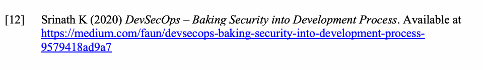
[12] Srinath K (2020) DevSecOps – Baking Security into Development Process. 入手先: https://medium.com/faun/devsecops-baking-security-into-development-process-9579418ad9a7
[13] Rubinstein D (2020) AppSec vs. DevSecOps, and what that means for developers. Available at https://sdtimes.com/security/appsec-vs-devsecops-and-what-that-means-for-developers/
[13] Rubinstein D (2020) AppSec vs. DevSecOps, and what that means for developers. 入手先: https://sdtimes.com/security/appsec-vs-devsecops-and-what-that-means-for-developers/
[14] Red Hat (2021) What is DevSecOps? Available at https://www.redhat.com/en/topics/devops/what-is-devsecops
[14] Red Hat (2021) What is DevSecOps? 入手先: https://www.redhat.com/en/topics/devops/what-is-devsecops
[15] Red Hat (2021) What is CI/CD? Available at https://www.redhat.com/en/topics/devops/what-is-ci-cd#:~:text=CI%2FCD%20is%20a%20method,continuous%20delivery%2C%20and%20continuous%20deployment
[15] Red Hat (2021) What is CI/CD? 入手先: https://www.redhat.com/en/topics/devops/what-is-ci-cd#:~:text=CI%2FCD%20is%20a%20method,continuous%20delivery%2C%20and%20continuous%20deployment
[16] Ali M (2018) Continuous Release Practices are evolving, Here is our story. Available at https://medium.com/the-telegraph-engineering/continuous-release-practices-are-evolving-here-is-our-story-2a4d164e9cac
[16] Ali M (2018) Continuous Release Practices are evolving, Here is our story. 入手先: https://medium.com/the-telegraph-engineering/continuous-release-practices-are-evolving-here-is-our-story-2a4d164e9cac
[17] Pittet S (2021) Continuous integration vs. continuous delivery vs. continuous deployment. Available at https://www.atlassian.com/continuous-delivery/principles/continuous-integration-vs-delivery-vs-deployment
原本PDFの抜粋画像
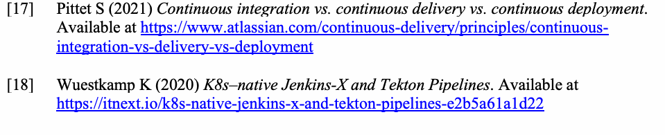
[17] Pittet S (2021) Continuous integration vs. continuous delivery vs. continuous deployment. 入手先: https://www.atlassian.com/continuous-delivery/principles/continuous-integration-vs-delivery-vs-deployment
[18] Wuestkamp K (2020) K8s–native Jenkins-X and Tekton Pipelines. Available at https://itnext.io/k8s-native-jenkins-x-and-tekton-pipelines-e2b5a61a1d22
[18] Wuestkamp K (2020) K8s–native Jenkins-X and Tekton Pipelines. 入手先: https://itnext.io/k8s-native-jenkins-x-and-tekton-pipelines-e2b5a61a1d22
[19] aws.amazon.com (2021) Create Continuous Delivery Pipeline. Available at https://aws.amazon.com/getting-started/hands-on/create-continuous-delivery-pipeline/?trk=gs_card
[19] aws.amazon.com (2021) Create Continuous Delivery Pipeline. 入手先: https://aws.amazon.com/getting-started/hands-on/create-continuous-delivery-pipeline/?trk=gs_card
[20] aws.amazon.com (2021) Setting up a CI/CD pipeline by integrating Jenkins with AWS CodeBuild and AWS CodeDeploy. https://aws.amazon.com/blogs/devops/setting-up-a-ci-cd-pipeline-by-integrating-jenkins-with-aws-codebuild-and-aws-codedeploy/
[20] aws.amazon.com (2021) Setting up a CI/CD pipeline by integrating Jenkins with AWS CodeBuild and AWS CodeDeploy. https://aws.amazon.com/blogs/devops/setting-up-a-ci-cd-pipeline-by-integrating-jenkins-with-aws-codebuild-and-aws-codedeploy/
[21] mylocaldevstack.pl (2019) The future of DevOps – Assembly Lines. Available at https://medium.com/@mylocaldevstack/the-future-of-devops-assembly-lines-40227546d750
[21] mylocaldevstack.pl (2019) The future of DevOps – Assembly Lines. 入手先: https://medium.com/@mylocaldevstack/the-future-of-devops-assembly-lines-40227546d750
[22] Socher R (2020) Best Terraform Tutorial Guides: An Overview. Available at https://faun.pub/best-terraform-tutorial-guides-an-overview-65a6fcee0a24
[22] Socher R (2020) Best Terraform Tutorial Guides: An Overview. 入手先: https://faun.pub/best-terraform-tutorial-guides-an-overview-65a6fcee0a24
[23] Soni A (2020) GitOps: The Next Big Thing for DevOps and Automation! Available at https://medium.com/searce/gitops-the-next-big-thing-for-devops-and-automation-2a9597e51559
[23] Soni A (2020) GitOps: The Next Big Thing for DevOps and Automation! 入手先: https://medium.com/searce/gitops-the-next-big-thing-for-devops-and-automation-2a9597e51559
[24] Fallon A (2020) Understand the role of infrastructure as code in DevOps (TechTarget.com). Available at https://searchitoperations.techtarget.com/feature/Understand-the-role-of-infrastructure-as-code-in-DevOps?utm_campaign=20210809_The+next+DevSecOps+challenge%3A+People&utm_medium=EM&utm_source=NLN&track=NL-1841&ad=939963&asrc=EM_NLN_174809933
[24] Fallon A (2020) Understand the role of infrastructure as code in DevOps (TechTarget.com). 入手先: https://searchitoperations.techtarget.com/feature/Understand-the-role-of-infrastructure-as-code-in-DevOps?utm_campaign=20210809_The+next+DevSecOps+challenge%3A+People&utm_medium=EM&utm_source=NLN&track=NL-1841&ad=939963&asrc=EM_NLN_174809933
[25] Ahmed M (2020) Introducing Policy As Code: The Open Policy Agent (OPA). Available at https://www.magalix.com/blog/introducing-policy-as-code-the-open-policy-agent-opa
原本PDFの抜粋画像
[25] Ahmed M (2020) Introducing Policy As Code: The Open Policy Agent (OPA). 入手先: https://www.magalix.com/blog/introducing-policy-as-code-the-open-policy-agent-opa
[26] Singh P (2021) Tackle Kubernetes observability with the right metrics. Available at https://searchitoperations.techtarget.com/tip/Tackle-Kubernetes-observability-with-the-right-metrics?track=NL-1841&ad=938191&asrc=EM_NLN_153034984&utm_medium=EM&utm_source=NLN&utm_campaign=20210322_DevSecOps+leaves+Excel+in+the+dust
[26] Singh P (2021) Tackle Kubernetes observability with the right metrics. 入手先: https://searchitoperations.techtarget.com/tip/Tackle-Kubernetes-observability-with-the-right-metrics?track=NL-1841&ad=938191&asrc=EM_NLN_153034984&utm_medium=EM&utm_source=NLN&utm_campaign=20210322_DevSecOps+leaves+Excel+in+the+dust
[27] Agarwal G (2020) Kubernetes Security With Falco. Available at https://betterprogramming.pub/kubernetes-security-with-falco-2eb060d3ae7d
[27] Agarwal G (2020) Kubernetes Security With Falco. 入手先: https://betterprogramming.pub/kubernetes-security-with-falco-2eb060d3ae7d
[28] Marko K (2021) Terraform cheat sheet: Notable commands, HCL and more. Available at https://searchitoperations.techtarget.com/tip/Terraform-cheat-sheet-Notable-commands-HCL-and-more?utm_campaign=20210726_Infrastructure+as+code+still+a+big+security+buzz&utm_medium=EM&utm_source=NLN&track=NL-1841&ad=939808&asrc=EM_NLN_172629823
[28] Marko K (2021) Terraform cheat sheet: Notable commands, HCL and more. 入手先: https://searchitoperations.techtarget.com/tip/Terraform-cheat-sheet-Notable-commands-HCL-and-more?utm_campaign=20210726_Infrastructure+as+code+still+a+big+security+buzz&utm_medium=EM&utm_source=NLN&track=NL-1841&ad=939808&asrc=EM_NLN_172629823
[29] Guo T (2021) On DevOps 8: Infrastructure as Code: Introduction, Best Practices and How to choose the Right tool. Available at https://medium.com/4th-coffee/on-devops-8-infrastructure-as-code-introduction-best-practices-and-choosing-the-right-tool-2c8f46d1f34
[29] Guo T (2021) On DevOps 8: Infrastructure as Code: Introduction, Best Practices and How to choose the Right tool. 入手先: https://medium.com/4th-coffee/on-devops-8-infrastructure-as-code-introduction-best-practices-and-choosing-the-right-tool-2c8f46d1f34
[30] Pulumi.com (2020) Delivering Cloud Native Infrastructure as Code. Available at https://cdn2.hubspot.net/hubfs/4429525/Content/Pulumi-Delivering-CNI-as-Code.pdf
[30] Pulumi.com (2020) Delivering Cloud Native Infrastructure as Code. 入手先: https://cdn2.hubspot.net/hubfs/4429525/Content/Pulumi-Delivering-CNI-as-Code.pdf
[31] Chong T (2021) Product In-Depth: Instantly Secure your Cloud Infrastructure with Policy-as-Code. Available at https://www.magalix.com/blog/instantly-secure-your-cloud-infrastructure-with-policy-as-code?utm_medium=email&_hsmi=123795689&_hsenc=p2ANqtz-HbHGaLCOrCV_WXjrKE-JgWUWUX9Tg1s9ot5HSox2Ts1rgAhwquoZkBKqZYo-OcHJmlUHG8eFhC5Tfu7MW_Dn3i-g3Ng&utm_content=123795689&utm_source=hs_email
[31] Chong T (2021) Product In-Depth: Instantly Secure your Cloud Infrastructure with Policy-as-Code. 入手先: https://www.magalix.com/blog/instantly-secure-your-cloud-infrastructure-with-policy-as-code?utm_medium=email&_hsmi=123795689&_hsenc=p2ANqtz-HbHGaLCOrCV_WXjrKE-JgWUWUX9Tg1s9ot5HSox2Ts1rgAhwquoZkBKqZYo-OcHJmlUHG8eFhC5Tfu7MW_Dn3i-g3Ng&utm_content=123795689&utm_source=hs_email
[32] Pariseau B (2020) Mendix dumps cluttered DevOps monitoring tools for Datadog. Available at https://searchitoperations.techtarget.com/news/252497697/Mendix-dumps-cluttered-DevOps-monitoring-tools-for-Datadog?track=NL-1841&ad=938089&asrc=EM_NLN_151848158&utm_medium=EM&utm_source=NLN&utm_campaign=20210315_Kong+Mesh%27s+built-in+Open+Policy+Agent+simplifies+IT+security+management
[32] Pariseau B (2020) Mendix dumps cluttered DevOps monitoring tools for Datadog. 入手先: https://searchitoperations.techtarget.com/news/252497697/Mendix-dumps-cluttered-DevOps-monitoring-tools-for-Datadog?track=NL-1841&ad=938089&asrc=EM_NLN_151848158&utm_medium=EM&utm_source=NLN&utm_campaign=20210315_Kong+Mesh%27s+built-in+Open+Policy+Agent+simplifies+IT+security+management
[33] Boutet R (2018) Log Patterns: Automatically cluster your logs for faster investigation (datadoghq.com). Available at https://www.datadoghq.com/blog/log-patterns/
[33] Boutet R (2018) Log Patterns: Automatically cluster your logs for faster investigation (datadoghq.com). 入手先: https://www.datadoghq.com/blog/log-patterns/
[34] Devopscurry (2021) Securing your CI/CD pipelines with DevSecOps in 2021. Available at https://medium.com/devopscurry/securing-your-ci-cd-pipelines-with-devsecops-in-2021-1a6a6e34f2e7
原本PDFの抜粋画像
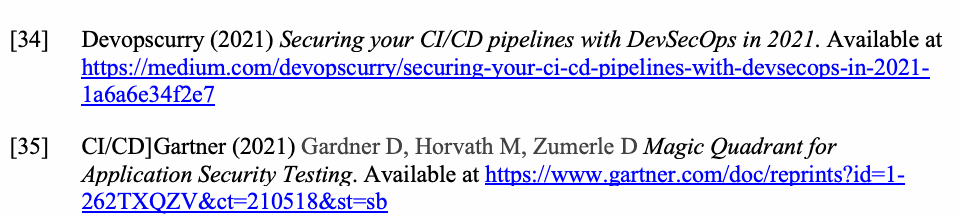
[34] Devopscurry (2021) Securing your CI/CD pipelines with DevSecOps in 2021. 入手先: https://medium.com/devopscurry/securing-your-ci-cd-pipelines-with-devsecops-in-2021-1a6a6e34f2e7
[35] CI/CD]Gartner (2021) Gardner D, Horvath M, Zumerle D Magic Quadrant for Application Security Testing. Available at https://www.gartner.com/doc/reprints?id=1-262TXQZV&ct=210518&st=sb
[35] CI/CD]Gartner (2021) Gardner D, Horvath M, Zumerle D Magic Quadrant for Application Security Testing. 入手先: https://www.gartner.com/doc/reprints?id=1-262TXQZV&ct=210518&st=sb
[36] Lewkowicz J (2021) A guide to automated testing providers. Available at https://sdtimes.com/test/a-guide-to-automated-testing-providers/
[36] Lewkowicz J (2021) A guide to automated testing providers. 入手先: https://sdtimes.com/test/a-guide-to-automated-testing-providers/
[37] Lewkowicz J (2021) Automated testing is a must in CI/CE pipelines. Available at https://sdtimes.com/test/automated-testing-is-a-must-in-ci-cd-pipelines/
原本PDFの抜粋画像
[37] Lewkowicz J (2021) Automated testing is a must in CI/CE pipelines. 入手先: https://sdtimes.com/test/automated-testing-is-a-must-in-ci-cd-pipelines/
[38] Alexey K (2020) Ultimate guide to CI/CD security and DevSecOps. Available at https://circleci.com/blog/security-best-practices-for-ci-cd/
[38] Alexey K (2020) Ultimate guide to CI/CD security and DevSecOps. 入手先: https://circleci.com/blog/security-best-practices-for-ci-cd/
[39] Sheldon R (2021) Top 30 DevOps interview questions and answers for 2021. Available at https://whatis.techtarget.com/feature/Top-30-DevOps-interview-questions-and-answers?utm_campaign=20210712_New+Kubernetes+use+case%253A+Hacking&utm_medium=EM&utm_source=NLN&track=NL-1841&ad=939635&asrc=EM_NLN_170130891
[39] Sheldon R (2021) Top 30 DevOps interview questions and answers for 2021. 入手先: https://whatis.techtarget.com/feature/Top-30-DevOps-interview-questions-and-answers?utm_campaign=20210712_New+Kubernetes+use+case%253A+Hacking&utm_medium=EM&utm_source=NLN&track=NL-1841&ad=939635&asrc=EM_NLN_170130891
[40] Prasad A (2020) Kubernetes Admission Controllers: Request Interceptors. Available at https://medium.com/cloudlego/kubernetes-admission-controllers-request-interceptors-47a9b12c5303
[40] Prasad A (2020) Kubernetes Admission Controllers: Request Interceptors. 入手先: https://medium.com/cloudlego/kubernetes-admission-controllers-request-interceptors-47a9b12c5303